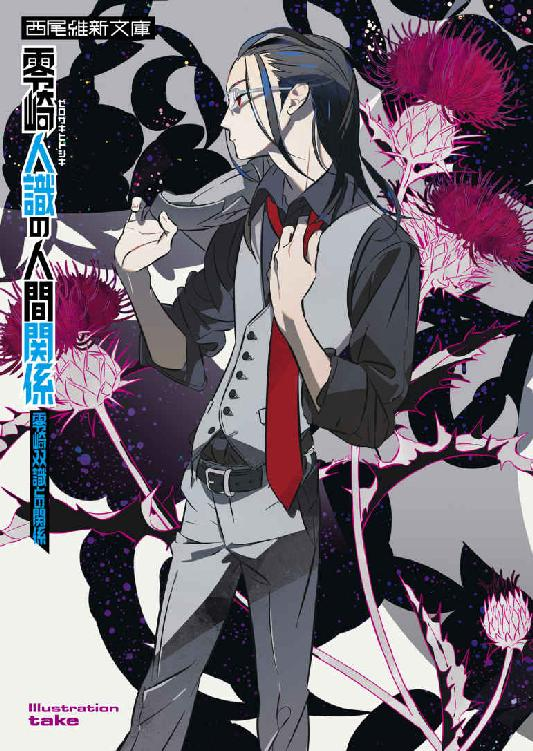
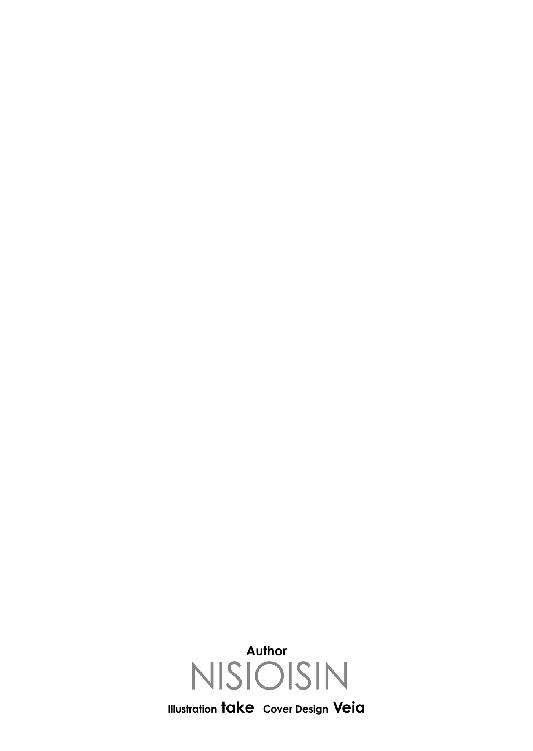
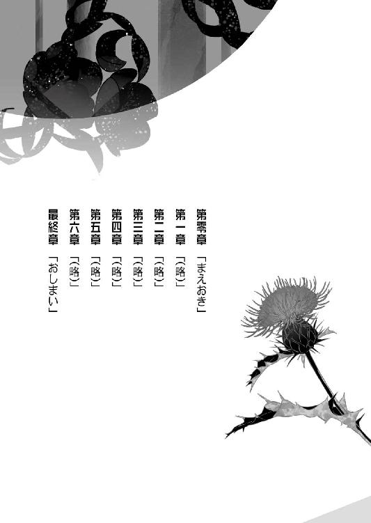
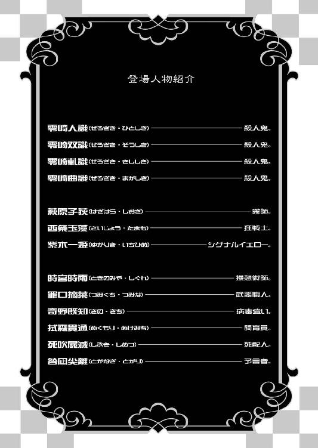
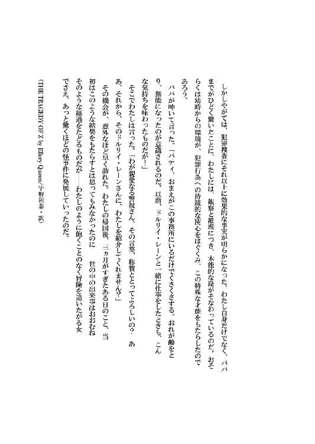
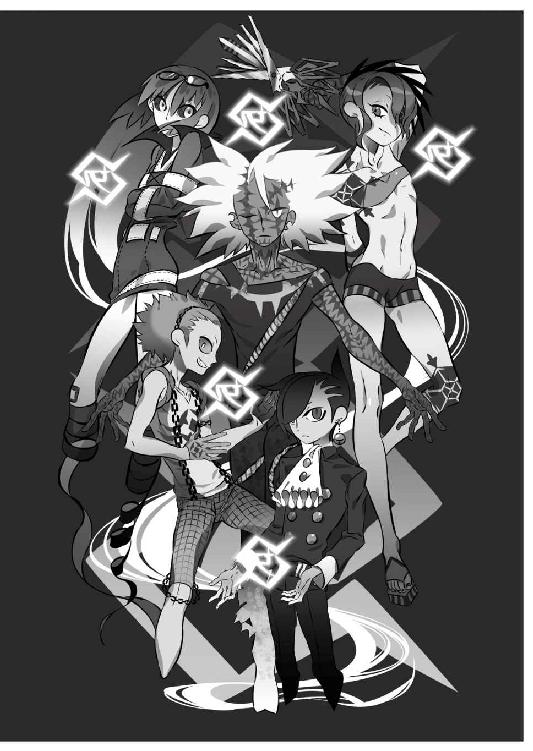

| 零崎人識の人間関係 零崎双識との関係 (講談社文庫) | |
| 西尾維新 | |
| 講談社 (2014) | |
本作品は、縦書き表示での閲覧を推奨いたします。横書き表示にした際には、表示が一部くずれる恐れがあります。
ご利用になるブラウザまたはビューワにより、表示が異なることがあります。
零崎人識の人間関係
零崎双識との関係
西尾維新






◆ ◆
ほんの小さなつむじ風が起こっただけで儚く崩れ落ちてしまいそうなほどに荒れ果てた、古ぼけた洋館だった。かつては荘厳な雰囲気を漂わせていたであろうその外観は今となってはまるで見る影もなく、周囲の景色ごとごっそり切り取られ、時の流れから取り残されているようでもあった。
そんな洋館の一室で。
二人の男女が向き合っていた。
「──悪くない」
崩壊寸前の木片の如き椅子に、しかし何と言うこともなく、こともなげに腰掛けた──腰まで伸ばした髪をうなじのあたりで束ねている、燕尾服の男が言う。
端正な顔立ち。
さながら優雅かつ重厚なクラシック音楽にでも耳を傾け、うっとりと陶酔しているかのように、彼は背筋を伸ばして目を閉じている。
言うなれば完成された一枚の絵の如く、洋館の雰囲気にマッチした男ではあったが──唯一決定的に不自然なことに、男はその両手にカスタネットを備えていた。
楽器店で売っているようなそれではなく、おもちゃ屋で売っているような、チープなカスタネットである。
しかし男はそのカスタネットを、腕のある職人が丹精込めて製作した伝統工芸品でもあるかのように、大事そうに、そして高らかに、
『かつん、かつん、かつん』
と、連続させて鳴り響かせていた。
「悪くない──実に悪くない」
男の名は零崎曲識と言う。
恐れ避けられ忌み嫌われる殺人鬼集団・零崎一賊を代表する三天王の一角──『少女趣味』と呼ばれる音使い。
彼にとってはありとあらゆる音が武器であり、あらゆる楽器が兵器であり、あらゆるメロディが凶器である。
トランペットであろうが、バイオリンであろうが、和太鼓であろうが、シンセサイザーであろうが、そしてカスタネットであろうが──たったひとつの例外もなく、彼の手にかかれば、それは人を殺傷しうる恐怖の道具となる。
「お前のその能力は、本当に悪くない──傾聴に値する。現時点ではともかくとして、恐らく、数年の後には誰も対処ができないほどの遥かなる領域に達するだろう──あるいは、あの赤き人類最強さえも凌駕するほどにな」
独り言のように抑揚なく、静かに言う曲識。
もっとも彼はそんな言葉さえも、ノーマルには発していない──音を武器とする彼にとっては、自分の喋るその言葉さえも、立派なウエポンとなるのだった。
だから。
独り言のわけもない。
言うまでもなく勿論、天井のシャンデリアなど機能しているわけもない、薄暗い部屋の中──かつては骨董品的価値を有していたであろう、今はそのあたりの板っきれと見まごうような円卓を挟んだ向かい側にいる人物に、曲識の言葉は向けられているのだ。
否、人物と言うより。
最早はっきり少女と言ったほうがよかろう。
「曲絃糸──と言ったかな。あるいはジグザグとも。悪くない。ストリングを得物とするプレイヤーは数おれど、ジグザグ使いはそのハイエンドだ。目に見えないほどの細き糸を大量に、その五指で操る──そこには大した力を必要とはしない。既にこの部屋の中は、お前が発した糸が結界のごとく縦横無尽に張り巡らされているのだろう──奇術師が使うような見えない糸が縦横無尽に張り巡らされているのだろう。いや、このレベルになると、縦横無尽と言うよりは天衣無縫と言ったほうが正解に近いかもしれないな──」
目は開かない。
曲識は両手のカスタネットでリズムを取りながら──続ける。
「──もっとも。僕の知る曲絃糸は、主に防御用の技術だったはずだ。対多数用の拘束術──言わば護身術。なのにお前は、その護身術を殺人術として行使している。安全極まりない技術を、危険極まりない技術へと昇華している。はっきり言って恐ろしい。つまりハイエンドのその先だ。そんな発想は、歴史上誰も持たなかっただろう──僕が保証しよう。十年のち、お前はこの世の誰にも負けない存在となる。いや、ひょっとすると、今でもそうなのかもしれないな──案外、生涯無敗の称号は、お前のような少女のためにある称号なのかもしれない。悪くない」
「............」
そこまで言って、曲識は言葉を切ったが──しかし、円卓を挟んだ向かい側の少女は、何も答えようとしない。
その少女こそ、奇妙な少女ではあった。
曲識と違い、洋館の雰囲気にはまるでそぐわない──合成写真のようにそぐわない。そぐう要素が皆無の、中学校の制服に身を包んだ少女だった。
ストレートロングの黒髪に、黄色いリボン。
両手には黒い手袋を嵌めている。
口を一文字に閉じて──ただ、零崎曲識を、見据えていた。
無論、曲識がただ漫然と喋っているのではないように──少女も、この場に漫然と突っ立っているわけではない。
既に、この対面中。
少女は百五十二万三千四百二十二回ほど──曲識を殺そうと、試みている。
単にそのすべてが失敗しているだけの話だ。
「だが、お前にとっては悪かったな──シグナルイエロー。僕はお前の天敵だ。お前の技術は、お前の芸術は、誰に対しても脅威であろうその戦闘スキルは──数年後であろうと今であろうと、この僕に対してだけは、全くの無意味だ。僕には曲絃糸は通じない」
音使い、と。
零崎曲識は──自らの肩書きを名乗る。
「それがどんな太さのものであれ──糸は、音に弱い。音とは、つまり振動。つまり震動。真空以外のありとあらゆるものを震えさせる存在だ──ゆえに、繊細にして微細な取り扱いを要求されるストリングに対して、もっとも強く影響を与えることができる。お前がいくら僕を殺そうとしたところで──僕はその糸を、すべて弾くことができる」
お前の糸は。
僕にとっては五線譜よりも強度がない。
にこりともせずに、曲識はそう言った。
『かつん、かつん、かつん』
と、低くカスタネットを鳴り響かせながら──その音が、彼にとっては核シェルター以上の防壁であるかのように、低く鳴り響かせながら。
さながらメトロノームのように。
正確にリズムを刻む。
正確にビートを刻む。
それに対し。
シグナルイエローと呼ばれた少女は、
「............」
と、首を傾げた。
その間にもシグナルイエローは、曲識を殺そうとし、そしてそれが未遂に終わるという不毛な行為を、ただ淡々と続けてはいる。
挫ける、とか。
諦める、とか。
屈する、とか。
その手の概念に一切縁がないように──殺し続け、失敗し続ける。
「......悪くない。その根性のほうが、悪くない」
と。
逆に自分のほうが根負けしたかのように、曲識がいよいよ目を開けた。
目を開けて──シグナルイエローの姿を、その瞳に捉える。
零崎曲識は異端の殺人鬼だ。
誰彼構わず、老若男女問わず、殺しに殺しに殺しまくる、殺人者ならぬ殺人犯ならぬ殺人狂ならぬ、殺人鬼──その集合が零崎一賊でありながら、曲識は例外的に、強靱な意志と強固な信条をもって──殺人衝動を抑え、殺人対象にあえて限定条件をつけている。
シグナルイエローは。
幸運にも、その条件を満たしていた。
だが──しかし。
しかしだ。
「......ふふ」
唐突に、シグナルイエローが笑った。
その間も、決して攻撃を休めることはないが──急に笑った。
「──どうした。何がおかしい、シグナルイエロー」
「ああ──ちょっとだけ待ってくださいです、零崎曲識さん。今、あなた向けの人格を作り上げますから──観察はもう終わりましたし、もう少しで出来上がりそうなんですよ」
そう言って、シグナルイエローは不意に顔を俯け──そして顔を起こす。
それまで無表情に近い、能面のようだった少女の表情は、起こしたときには一変していた。
炎のように勝気な目をして。
口元を思い切り吊り上げている。
粗雑とも、乱雑とも言える──年端もいかぬ子供らしからぬ、そんな笑みである。
「くくくく──くははははは」
シグナルイエローは、そこで高らかに笑った。
緊迫した場の空気を壊すような、豪快な笑い方である。
「──お待たせしました。出来上がりましたよ、曲識さん」
「............」
「どうしました？ こんな感じの性格が、好みなんじゃありませんか、あなたの場合──」
言われても、曲識の態度は変わらない──が、しかし、状況に変化はあった。曲識の燕尾服の肩口が、かすかに裂けたのだ。
今まで万に一つの漏れもなくかわしていたシグナルイエローからの攻撃を、ほんの一条だけとは言え、受けてしまったということである。
一瞬、沈黙を強いられた。
それの結果がこれなのだ。
当然の結果ではあるが──殺人鬼としての殺人衝動を、条件付きとは言え抑えられるほどの、言わば鉄のメンタルを持つ零崎曲識にしてみれば、これはかなり珍しいことだった。
「──くっくっく」
シグナルイエローは笑う。
おかしそうに笑う。
それに対して曲識は、困惑せざるを得なかった。
その笑みは。
その表情は──そして先ほどまでとは打って変わったような、その性格は。
彼にとって──原点のような意味合いを持つからだ。
「なるほど......悪くない。どうやら、真に脅威なのはテクニック云々ではなく、そして根性などでは勿論なく、シグナルイエロー。そのがらんどうの空洞のごときお前自身のようだな」
「お褒めに与かり光栄の至りってところですね。くく──もっとも、です。だからと言って、こちらが優位になるってわけじゃなさそうですね──これでようやく、とんとんってところみたいです。ジグザグにとってあなたの音が天敵だというのは、残念ながらあなたの言う通りのようです。こんな弱点があったなんて、師匠にちゃんと報告しとかないと──もっとも、それはここから生きて帰れたらの話ですけど、ね──」
「......お前の師匠か。どんな人間だったら、そんな異様な労働が勤まるんだろうな。少なくとも僕はごめんこうむる」
曲識にとって──少なくともこの戦闘状況においては──無言になることは、武器の放棄にも等しい行為だ。
たとえ目前の少女に並々ならぬ、そして言い知れぬ不気味さを感じ取ったとしても、喋り続けないわけにはいかない。
それが深みに嵌ることを意味しても。
この状況下においては、彼にとって沈黙は死に直結する愚行なのだ。
当然──カスタネットの音も止められない。
核シェルター以上の防壁。
しかし逆に言えば、それは両手を封じられているのも同じではあった。
「そりゃそーです。あなただけじゃなくて、大概の人は嫌でしょうよ、そんな激務──我ながら本当にそう思うです。ほんっと人格者ですよ、遊馬さんは。おっもしれーくらいにです。石丸小唄とかいうあの性悪女とは対極的ですね。師匠みたいな人の下についてれば、自分みたいな狂った奴でも、ひょっとしたらいつかはまともな人間になれるんじゃないかって、勘違いしたくなるくらいで」
「無理だな」
シグナルイエローの台詞に、半ば無理矢理曲識は割り込んだ。
リズムや音階は関係なく、それは聞き逃せない、そんな筋の通らないことを最後まで喋らすわけにはいかない、一刻も早く訂正しなければ仁義に反するとでも言いたげな、実に絶妙のタイミングだった。
「たとえ世界が終わることがあろうとも、お前がまともな人間になれることなどないよ、シグナルイエロー。それも──僕が保証しよう。シグナルイエロー、お前とはここ五分ほど殺し合っただけの仲だが、僕はお前の所属どころか本名さえも知らないが、それについては命をかけてもいい。お前は鬼よりも鬼らしく、悪魔よりも悪魔らしい」
いや、違うか、と。
曲識は一層高く、カスタネットを打ち鳴らす。
「お前は空洞だ。周囲の環境との関係性によってかろうじて自己を保っているだけだ──環境が変わればお前も変わる、周囲が消えればお前も消える。空洞にして洞穴。山に通されたトンネルの存在感は、なるほど大したものだろう──しかし山がなくなれば、そこにトンネルは残らない。シグナルイエロー。お前は確かにそこにいる。しかし──同時に、そこにいないのも同じなのだ」
お前がそこから退いたとしても。
空間的には何も変わらない──と。
さして辛辣なことを言っている風でもなく、むしろ敬意を表するような言い方で、零崎曲識はそう言った。
「人格を自由に形成できるお前のパーソナリティは確かに脅威であり、また恐怖ではあるが、しかしそれは同時に、お前がいてもいなくても同じ、取るに足らない存在であることをも示している。いや、いてもいなくても同じというのではまだ指摘として正確ではないか。そこにいることが、そこにいないこと以上に──不在だ」
「好き勝手言ってくれるじゃないですか──悲しくなりますよ」
シグナルイエローは、そんな曲識からの言葉を、しかしまるで相手にしない。
当然と言えば当然である。
現在シグナルイエローがモデルとしている人格は、他人の言葉で揺らぐような、そんな脆弱な種類のものではないからだ。
もっとも──しかし、その事実はシグナルイエローにとって必ずしも、よいことばかりではないのだが──
「だけどあなた、さっき言ってましたよね？ ボルトキープさん。あなたの音は──真空だけは震わせられないんでしょう？ だったらこの身が、そしてその実が空洞であり、がらんどうであることは──あなたの有利を意味しませんよね」
「............」
「くっくっく。話を戻させてもらいますよ、ボルトキープさん。零崎曲識さん──あなたがジグザグの天敵だと言うならば、ジグザグだってあなたの天敵なんですよ。ジグザグの糸があなたに届かないよう、あなたの音も、この身体には届かないでしょう？」
シグナルイエローは。
思い切り勝ち誇った笑顔で──言う。
「それゆえに──あなたの意図は、ここで切れます」
「......悪くない」
曲識は──静かに頷く。
観念したように。
静かに、深く頷く。
「気付いていないかと思ったが......なるほど、お見通しというわけか」
「ええ。糸の弱点が音なら──音の弱点は糸に決まってるじゃありませんか。音が振動ならば、その震動を乱すのは糸です。ジグザグの糸の結界は、この部屋中にギターを散らしているようなものじゃありませんか──弾く程度ならばまだしも、弾くことはできない。攻撃を回避する程度ならばまだしも、攻撃することはできない。複雑に絡み合った全ての糸の位置関係を把握しない限りにおいて、あなたの音は、どこまでも狙いを逸れていく。音は音のまま、かき消されます。くっくっく、繊細で微細な操作が必要とされるのは──お互いさまですよねえ」
どこまでも──勝ち誇ったように言うシグナルイエロー。
実際には勝っているわけではない──単に、状況が拮抗し、また均衡していることを、言葉に出して明確にしたに過ぎない。
別に、明確にするまでもなく。
あるいは──明確にしないほうがいいような情報である。
少女がまとったその人格が──自らが不利であれば不利であるほどモチベーションが上がるという不可思議なその人格が、シグナルイエロー自身の意志や意図に関係なく、少女自身にそうさせてしまっただけの話だ。
シグナルイエローにわかるはずもないある事情から、その人格は曲識に対して非常に有効ではあるのだけれど──実際、燕尾服を破る程度には有効に作用したけれど──扱うには、多少以上に難易度の高いキャラクターであるのもまた、確かなのだった。
もっとも、そうでなくとも。
少女自身に──もとより意志や意図はないのだけれど。
がらんどうなのだけれど。
「しかし、そうなると──困ったことになるな、実に困ったことになるな、シグナルイエロー。お互いさま──お互いさまか、いい言葉だ。互いに一歩の身動きも取れないこの状況が、いつまでも継続するというわけだろう？ ならばどちらの精神力が先に切れるかという話になってくる──」
「あなたはそのカスタネットで、こちらは数千本の糸で、両手両腕は完璧に封じられている──ですからね。ったく、悲しくなりますねえ。ここに一丁の拳銃があれば、それであっという間にカタはついてしまうというのに」
「プロのプレイヤーにあるまじき発言だな」
「生憎、ジグザグ使いとしては、その手のプレイヤー的美学に対しては、今のところまったく興味がありませんです」
「だろうな。空洞に興味の対象などあるわけがない」
はあ、と。
曲識は──大仰にため息をついた。
落胆と憂鬱を、隠そうともせずに。
今、自らが身を置いているこの環境が、いかにも意に添わないというように。
「──悪くない。だが、わからない。お前に命を狙われる理由など僕には何も思いつかない──圧倒的に皆無だ。どうやら罠を仕掛けられ、どうやら罠にかけられたことだけは確かなようだが、しかし僕のような無害な殺人鬼に罠を仕掛け、僕のような無害な殺人鬼を罠にかける理由が、そもそもわからない。まったくもって得心できないパターンだ。こんな理不尽なことがあっていいのだろうか。なあ、シグナルイエロー。どうしてこのような真似をする？ 弱点については単純に思い至らなかっただけにしても──僕、つまりボルトキープを敵に回すリスクは、あらかじめわかっていたはずだ」
「リスクぅ？ くくく、知ったこっちゃありませんね、そんなのは──だけどまあ、その質問には答えておいてあげましょう」
ぴくり、と少女の頰が引きつった。
個性がなかろうと個別がなかろうと、空洞であろうとトンネルであろうと、戦闘狂としてのシグナルイエローの闘争本能は、基盤のところではしっかりと理解し、また、しかるべく警告しているのだ──ターゲットからのそんな質問になど、いちいち答える必要がないことを。
むしろ答えるべきではないことを。
だが、少女が曲識に対して用意した人格は、そんな不要なことを、自らを不利な状況に追い込むためだけに、ぺらぺらと喋ってしまう──それをシグナルイエロー自身は止められない。
人格を自由に作り上げられることと、それを制御できることは、決してイコールではないのだ。
痛し痒しではある──が、結局、作り上げた人格をまとわなければ自我を保つことができない、保つべき自我を保有しないシグナルイエローには、そうする以外にすべがない。
戦うすべではなく。
生きるすべが。
「先輩は別にあなたを殺せと言ったわけじゃないです──あくまでもジグザグのなすべき仕事は、あなたの足止めだけなのですよ。勿論、殺せるようなら殺してもいいと言われてはいますですけど」
「足止め？ 何に対する足止めだ」
あえて曲識は、その『先輩』とやらについては言及しない。
触れもしないし、反応さえもしない。
いくら口の軽そうな『人格』だとは言っても、まさかそこまでぺらぺらと喋りはしないだろうと思うからだ──あるいはそれは曲識の単なる読み違えで、その点を突っ込めば何か更なる重要事項が判明する可能性もないではなかったが、しかし彼は彼で、そんなところまで深入りするつもりはないのだ。
逃げの曲識。
本来、トラブルや揉め事に関わることを、何よりも嫌う殺人鬼なのである。
そんな彼だからこそ──現状が大いに不本意なのだった。
「知らないってことはないでしょう。うちの先輩がやらかしてる、『見えない戦争』のことですよ──零崎一賊と匂宮雑技団は、そのメインを張ってる二大勢力じゃありませんか」
「......ああ。『見えない戦争』」
レンが『小さな戦争』と言っていたあれのことか──と、呟く曲識。
「──なんだ。意外だったな。最後に話を聞いてから随分経つというのに、あれはまだ続いていたのか──継続し、断続し、連続していたのか。それはなんというか......、僕が感想を言うようなことではないけれど、ひたすらに難儀なことだ」
「くくく。難儀だっつーのには実に同感ですよ。実際、いち途中参加者としても、見ていて苛々するくらい、進行の遅い戦争です──もっとスッキリやればいいのにです。まあ、先輩には先輩のストラテジーがあるですから──それに、ボルトキープさん。もう心配はいりませんよ。その戦争、もうすぐ終わるですから」
今まさに、戦争は終結直前です──と、シグナルイエローはせせら笑う。
自慢するように。
自慢の先輩を──自慢するように。
「勿論、講和条約結ぶみたいなショッボい終わりかたはしないです。ひとり残らず皆殺して戦場跡には草一本残らないような驚きの全滅合戦ですよ。先輩の完全勝利で、『見えない戦争』は幕を下ろすわけです──」
ああでも、先輩は勝利とか敗北とか、そーゆーのには全然興味ないんでしたね──と、シグナルイエローはややつまらなそうに言う。
『先輩』とやらの、その辺りについての考え方は、どうやら彼女の思考の範疇を遥かに越えているらしい、と、曲識は理解する。
理解したところで。
何もしないが。
「で、です。そーゆー大事な終盤戦において、先輩はあなたを警戒しているってわけですよ──ボルトキープさん。ここまで来て、今更あなたに邪魔されたくない。あなたに参戦して欲しくない──ってことなんです。これは考えようによってはすごいことですよ？ どんな強度の人間であれ、匂宮雑技団であれ零崎一賊であれ、自由自在に自分の持ち駒として扱う、そんなスキルに長けているあの先輩から、あえて盤の外においておきたいと判断されるだなんて──」
「......参戦ね」
曲識は──椅子を若干後ろに傾けて、更に背を伸ばす姿勢を取る。
「お前は僕を知らないのか。そんな基礎知識も身に付けずに僕のところに来たのか。不勉強だな。僕は頼まれたってそんなくだらない諍いには参加しない──さっきも言った通りだ。僕はつい今しがたまで、その戦争の存在自体を忘れていたくらいだぞ。殺し合いがしたいのなら、音も聞こえないような遠くのほうで好きにやっていればいいだろう──」
「確かに、あなたはそういう性格らしいですね──先輩の名誉のために言っておきますと、先輩もそれはよくご存知でしたよ。『ここまで私の策がうまく運んだのは、ボルトキープの不参加が大きな要因としてあげられるかもしれませんね』──とか。いやはや、褒められたもんじゃありませんか」
「悪くない。光栄だな」
曲識は適当に、そう答える。
もっとも、その立場にいるのは自分だけではないだろうと、心の中ではそう判断していた──どうやら自覚はないようだが、恐らくは目の前にいる少女、シグナルイエローもまた、似たり寄ったりの立場にあるはずだ。途中参加者と言えるほど、少女がその戦争に関与しているとは思えない。
そうでなければ、曲識の足止めとして派遣されてくるはずもない。
「──まあ、まるっきり個性を保有していないようでは、駒として扱えるはずもないか」
「え？ なんか言いましたか？」
「別に何も。いいよ。話はわかった、了解した。では、約束しよう。僕はその戦争には参加しない──これでいいんだろう？」
「駄目ですね。ぜんっぜん駄目──そんな言葉が信用できるはずがありません。だって、あなたはそんな風なことを言いながら、一度だけ、この戦争にかかわっているですよね？」
「ああ......そう言えばそうだったかな。よく憶えていないが」
「とぼけないでくださいよ。ランドセルランドって名前のいけてる遊園地で、総角三姉妹を相手取っているでしょう──最近になってようやく、あれがあなたの仕業だったってことに、うちの先輩が気付いたです。だからこそ──先輩は、この最終局面において、またぞろあなたに邪魔をされるんじゃないかって、そんな危機感を強めているってわけですよ」
「そうか」
言われて、曲識はそのときのことを思い出す。
思い出すと言っても、やはり記憶は確かな像を結びはしないが──それでもおぼろげに、自分が唯一、『小さな戦争』に関与したときのことを思い出す。
そして──嘆息だ。
「今から思えば我ながら余計なことをしたものだな──本当に不覚で、しかも迂闊だった。ならば、この状況も僕の軽率な行動を原因とする、自業自得ということか。やれやれ、とんだ数年越しの因縁だよ。何がどう繫がるか、わからないものだ」
「というわけですから、まあ安心してくださいです。あなたがここにこうして足止めされるのは、戦争終結までの期限付きですよ──だから無理に脱出しようとか、変なことを考えないでください。仲良くしましょう」
「仲良く？ 無理な注文だな。僕は誰かと仲良くしたことがない」
基本的にはな、と曲識は──カスタネットを刻むリズムを、少し変えた。
心境の変化がそうさせたのかもしれないし、あるいは単に、Ｂメロに入っただけなのかもしれなかった。
「しかしまあ──総合的に、悪くない」
音使いの自分に対してジグザグが唯一に近い対抗策であると看破したのも、その『先輩』とやららしい──足止め歯止めを目的とするなら、確かにこれ以上ない人選だ。
天敵に対して天敵が天敵であることは。
あらかじめ織り込み済み──か。
「ただし、光栄とは言ったものの──いささか買い被りが過ぎるのではないか？ 最終局面と言うならば、今更僕一人、ただの殺人鬼一人が参加したところで、さほど戦局に変化はあるまい。大きなうねり、大きな流れの前には、僕の奏でる音楽など無意味だ。お前のジグザグはなるほど対多数用のテクニックなのだろうが──コンサート会場でも設営すれば話は別だが、僕の戦闘スキルは、膨大な人数を相手にするには決して向いていない」
「謙遜しないでくださいよ、面倒臭い。仮にその言葉が本音だとしても──その言葉が本当だったとしても、それでも先輩があなたを封じておきたいのには、他に理由があるんです」
「理由」
「そう、ふたつほど」
シグナルイエローは言う。
得意げに。
「ひとつは、先日、先輩が最後のターゲットとした対象が──将棋で言うところの玉将に位置づけたのが、マインドレンデルであるということ」
「......レン」
マインドレンデル──自殺志願。
零崎双識。
零崎一賊の長兄。
「ほう──それこそ、ランドセルランドのときと同じだな。ならば僕を警戒するのもわからなくはない──同じ轍は踏みたくないというわけか。取り越し苦労ではあるが、そして迷惑極まりないが、しかし気持ちは理解できる」
「そうですか──くくく、クールな反応ですね。ですが、ふたつ目の理由を聞いても、それでもまだ同じテンションでいられるかどうかは疑問ですよ」
「聞いてやろう。お前の『先輩』とやらは、どうしてあえて僕を、ここにこうして封じ込めておきたいのだ？」
「マインドレンデルをターゲットとして動く実働部隊が──裏切同盟だからですよ」
シグナルイエローのその言葉に。
零崎曲識は──反応した。
燕尾服の、今度は襟元が裂けたのだ──ほんの少しずれていれば、頸動脈が裂けていたような位置である。
彼は明確に。
彼は明白に──動揺したのだ。
困惑どころではない、明らかな動揺。
曲識がまとう空気の、常にどこかにあった余裕のようなものが──ただの一言で、あっさりと搔き消えた。
「裏切同盟──だと？」
裂けた襟元には、しかしまるで目もくれず、零崎曲識はシグナルイエローに問いかける。
「馬鹿げている──お前の言うことが本当ならば、お前の上にいる司令官は、あの裏切同盟を、駒として使っているということになるぞ」
「おや。やっぱり裏切同盟のことはご存知でしたか──そうですよねえ？ そりゃそうですよねえ？ ボルトキープさん、あなたは『殺し名』に属しながらも──属性としては、あの連中のほうにずっと近いんですからねえ」
「レンがやりあっている相手は、匂宮雑技団の最高傑作、『断片集』の連中だと──僕はそう聞いていたぞ」
「それはいささかならず古い情報ですね。今は匂宮雑技団と零崎一賊はあろうことか共闘しているんですよ──くくく、そんなの歴史上初のことでしょうけどね」
「......裏切同盟」
匂宮雑技団と零崎一賊が手を結んだなどというおよそ現実的でない知らせを聞いても、しかし曲識の興味はまったくそちらへと向かない──裏切同盟という言葉のほうに、曲識の意識は囚われ続けている。
「信じられない──お前達は、滅茶苦茶だ」
「一括りにしないでくださいよ──滅茶苦茶なのはあくまでも先輩だけですって。西条ちゃんとかは、いっつもそれで困ってんです──実際働くのは大抵の場合あの子なんですから。鉄砲玉もいいとこですよ、くくく。そーいや今頃シームレスバイアスと最後の決着をつけているはずの西条ちゃんは、どんな感じなんでしょうね──」
「......確かに──零崎一賊において、裏切同盟に対応できるのは、この僕をおいて他にはいない。だから──だからこそ、あえて僕を抑えにかかったのか。......油断したと言わざるを得ないな。そうとわかっていれば多少のリスクを冒してでも、こんな拮抗状態には持ち込ませなかった」
「そうでしょう？ 不死身と名高きマインドレンデルでも──裏切同盟に狙われたら無事では済まない。どう足搔こうとどう藻搔こうと、彼は戦争終結の礎となるわけです。勿論、助けなんて期待できません──助けなんて期待させません。あなたはこの通り、こうしてこのジグザグが盤外に縛り付けているし、シームレスバイアスは西条ちゃんが抑えている。爆弾使いのペリルポイントにしたって、雁字搦めに対策済みです──マインドレンデルを助けられる殺人鬼なんて、一人もいない。くくく、零崎一賊は内部の結束が強い割に、外部との接触がほとんどありませんから、こういう流れにはほんと弱いですよねえ──」
「............」
曲識は──無言になる。
なるべきでない、無言になる。
即ち彼は覚悟を決めたのだ。
そしてそれは、諦念とはまったく違う種類の覚悟だった。
たとえこうして盤外に縛られていなくとも、果たして自分が零崎双識を助けるために動いたかどうかは定かではないが──それでも、こうなってしまった以上、自分にできることはただひとつ。
シグナルイエロー。
この危険因子を──盤内に戻さないことだ。
決して、戦争に参加させないことだ。
シグナルイエローがボルトキープをこの場に縛り付けているように、ボルトキープはシグナルイエローをこの場に縛り付ける。
あと何日かわからない。
何週間かもしれない。
あるいは──それはひょっとしたら、ただの数時間なのかもしれないが。
とにかく、どういう形であれ『小さな戦争』が終結するそのときまで、拮抗と均衡を維持し続けること。
それしかない。
やるべきことは──それだけだ。
（そう）
（状況は最悪だが──）
曲識は思う。
裏切同盟。
あの人外中の人外である六人がマインドレンデルの生命を狙っているという時点で、既に状況はありえないほどに絶望的だが──だが、最悪ではあっても、決して、最終ではない。
（僕だけでなく、アスとリルまでもが抑えられているのだとしても──零崎一賊にはもうひとり、こういうシチュエーションにおいて、有効に作用する殺人鬼がいるではないか）
（このボルトキープが唯一らしくもなく、『小さな戦争』に参戦したとき、ランドセルランドに同行させた──生粋の零崎、零崎の中の零崎──）
秘中の秘。
表には知られていない、零崎一賊の鬼子。
零崎人識がいるのだから──
「最悪であろうと、悪くない」
◆ ◆
零崎一賊の三天王が一角、少女趣味、零崎曲識のこの認識に対して、一応の修正を加えておくと──シグナルイエローの『先輩』、つまりは策師・萩原子荻は、零崎人識の存在を決して忘れていたわけではない。
秘中の秘であろうと鬼子であろうと──少なくとも盤面上において彼女が把握していない事実など、一つもないのだ。
そう。
勿論、現実的には存在しないことになっている、書面上ではいないものとして扱われる、かの裏切同盟の六人でさえも──
時宮時雨。
罪口摘菜。
奇野既知。
拭森貫通。
死吹屍滅。
咎凪尖離。
呪い名六名──世にあるまじき呪い名六名からそれぞれ一名ずつが抽出されて構成された、想定外の順列組み合わせ。
たった一人いるだけでも敵味方合わせて総数以上の損害を与え、しかもたった一つの利益も生み出さないとまで言われる呪い名に所属する者が──なんと六人である。
将来的に組織される、世界を終わらせるための集団『十三階段』にさえ、二人までしかいなかった──逆に言えば、世界を終わらせるにしたってただの二人で十分だと判断された──そんな属性が総じて六つも結託した、言語に絶する、まるで考えられないような同盟。
それが裏切同盟である。
いずれにしても、ある意味においては零崎曲識以上に『小さな戦争』への参加を拒んでいた十七歳の零崎人識は、しかし否応もなく是非もなく、こうして裏切同盟との戦闘に巻き込まれることになるのだった──
◆ ◆
自身の人生においてもっとも自由だった時代はいつかと問われたならば、きっと零崎人識は、十六歳から十八歳までの三年間だと答えるだろう。
勿論それは、彼のごとき気ままな男が質問に対して気まぐれを起こすことなく正直に答えるという気まぐれを起こしたならばという前提に立った上での想像となってしまうが──少なくとも先入観を持たない第三者が観察する限りにおいて、人識がもっとも奔放に振る舞っていたのが、間違いなくその三年間になるからだ。
放浪する殺人鬼──零崎人識。
誰とも連れ立たず、誰ともつるまず、誰も頼らず、たった一人で思うがままに、日本全国を鳥のように渡り歩いていた頃。
自由奔放であり──自由自在。
とは言え無論、そういった感じのシンプルな四字熟語で言い表せるほど、彼の内面が広く解き放たれていたわけではない──と言うか、零崎人識のメンタルが、最もあからさまに意味不明だった頃こそが、その時代なのだ。
殺人鬼ならぬ一般人としての表の顔、普通の中学生・汀目俊希という外殻を、『人喰い』匂宮出夢との友情と共に完膚なきまでに失い、かろうじてあったはずの中軸を完全になくしてしまって、平たく言うともう彼の内面はしっちゃかめっちゃか、わけがわからなくなってしまっていた。
誰も彼を理解できず。
彼自身も彼を理解できず。
理解しようとさえも思わず。
そして──制御しようとも思っていなかった。
気まま、気まぐれ、思うまま──そういった意味合いにおいては、だから当時の零崎人識は、自由奔放、自由自在というよりは──ただの自暴自棄だったのかもしれない。
そういう見方もできる。
髪を伸ばして、まだらに染め。
派手に露骨にピアスを施し。
幼少期からのトレードマークである顔面刺青が、むしろかすんで見えてしまうくらいに攻撃的なファッションに身を包み──
ごくごく適当に生きていた。
『殺し名』序列三位、零崎一賊に属してこそいたものの、一賊の殺人鬼としてはほとんど活動らしい活動をせず──中学時代はまだしも、嫌々ながらも親族に引き連れられる形で一賊の活動に参加していたものの、それもあらかたなくなって──プロのプレイヤーらしい動きも一切見せず、本当に適当に、それこそそこらの一般人と変わりなく、ふらふらしていた。
汀目俊希という名前の書かれた一般人としての資格を失ったからこそ、そんな風な生き方をできるようになったというのは、考えてみれば何とも皮肉な話ではあるが──
そんな皮肉さえ、この頃の人識には関係のない話だった。
諧謔的に「かはは」とでも、笑うだけだ。
余計なことは考えない。
必要なことも考えない。
感情移入しない。
細かいことは、大雑把にさえ気にしない。
それがこの時代の零崎人識のライフスタイルだった──器が大きいのではなく、受け入れるための器が、そもそもないのだ。
ゆえに当然のこと、人識は『小さな戦争』などには参戦するわけもなく、精々時々、思い出したかのように襲ってくる、かつての友で今の敵、匂宮出夢と殺し合いを演じる程度である。その出夢さえも、最近はどうやら上役である『断片集』に命じられて『小さな戦争』のほうに駆り出されることが多いようで、しばらく会っていない。
そしてまた、零崎一賊の中で一番──唯一と言ってもいいかもしれない──人識を気にかけてくれている零崎双識、つまりは人識の兄にしたって、やはり『小さな戦争』にかかりきりになっていて、人識に構えずにいるのは同じだった。
「はーあ、あ」
そんな頃のことだから。
自由な時代の、一番自由な頃だったから。
「そうだ。兄貴、殺そう」
零崎人識が、ある日突然そう思ったのは、自然な流れであるとも言えた。
いや本当は全然自然なことではなく、どころかその前日には、人識は、「今度兄貴に会ったときのために」とかなんとか言って、零崎双識のために西陣織のネクタイを入手したりしていたのだが──この辺りの自由っぷりと言えば、正にさすがに、この時代の人識であった。
もっとも、そんなフリーダムな時代の零崎人識だったからこそ──彼の人生において、もっともハードだったこの時代を、したたかに（適当に）生き抜くことができたのだと、そんな風に言い換えることもできるかもしれない。
精神面、肉体面を含めて公平に見る限りにおいて。
この頃の零崎人識は、恐らくは間違いなく──全盛期だった。
いわゆる勝負どころに臨むにあたってなぜか故障していたりハンディを負っていたりすることの多い人識ではあるが、『呪い名』連合・裏切同盟の面々を相手取るこの際に限っては、だから例外的に、少なくともスタート地点においてはベストコンディションだったと言える──
そんなこと、無論不幸中の幸い以外の何でもなく、果たしてそれが何かの救いになるのかどうかは、まるで定かではなかったが。
ともあれ。
零崎人識──十七歳の、春である。
◆ ◆
「......ああ？ なんだこりゃ」
とある政令指定都市の一角、繁華街を歩いている最中──そろそろここらの銘菓でも買って昼ごはん代わりにいただくかと考えていた矢先、零崎人識は『奇妙』なことに気が付いた。
いや、違う。
逆だ。
気が付いたのではなく──今の今まで、気が付いていなかったのだ。
日曜日の昼下がりという、繁華街が一番賑わいを見せる、見せなければならないはずのその時間帯において──いきなり、視界中に人っ子一人いなくなっていたのだ。
ひょっとしてサングラスが曇ったかと外してみるも、やはり誰もいない──前方だけではない。振り返ってみても、やはり人影は見当たらなかった。
たとえ真夜中であってもここまで無人にはなるまい──ただ人がいないというだけのことではないのだ。
犬ころ一匹いない──のとも、違う。
気配がない。
生活感がない。
現在このときだけではなく、今後このアーケードを誰かが訪れることは未来永劫なさそうな、終わってしまったような雰囲気さえもある──きらびやかだった光景が、急にシャッター街になってしまったかのような有様である。
否。
未来どころか──過去さえも。
とっくの昔から、ここはずっとこうであったかのごとき、むしろこれが正しいありようであるかのような──先ほどまでの賑わいこそが、あるいは目の錯覚であったかのような。
そんな不思議な感覚を、人識は味わった。
（──いや）
（確か、こういうのって──）
兄貴に聞いたことがある。
と、人識は思い出す。
ほとんど本能的に戦闘態勢を取りながら──記憶を辿る。
『人識くん。人識くんはもう、プレイヤーとしては既に一人前だ──殺人鬼としてはまだまだだけれどね。換言すれば、殺す者としては二流だが、戦う者としては一流だよ』
兄──零崎双識。
マインドレンデルは、滔々とそう語っていた。
上から目線に腹が立ったことが印象深い。
『最近仲良くしているらしい、どこかのお友達のお陰なのかな？ めきめきと腕を上げているじゃないか、あっぱれだよ──だけどね、人識くん。その戦闘スキルがまるで通用しない相手がいることを、決して忘れてはいけないよ』
通用しない？
まるで通用しない？
人識は首を傾げた──はずだ。
『わからないかな？ 私は匂宮雑技団を序列一位とした「殺し名」七名の対極に位置する「呪い名」六名の話をしているんだよ──戦闘集団ならぬ非戦闘集団の、彼らの話をね。彼らは戦うことに長けているとは言えない──むしろその正反対なのだ。戦うことに長けているのではなく、戦わないことに長けている』
呪い名──六名。
時宮病院。
罪口商会。
奇野師団。
拭森動物園。
死吹製作所。
咎凪党。
『この零崎双識が持つ、「呪い名」六名に対する率直なイメージは──魔法使いだ。ひょっとしたら超能力者かもしれない。いずれ、まともじゃない──異能だよ。音使いのトキが、強いて言うなら近しい存在だとは言える──だけど性格的には、ストイックで禁欲的に過ぎるトキとはまるで違うね。彼らは何というか、アグレッシヴだ。だから人識くん、無駄だとは思いつつ、一応忠告しておくよ。きみは二十歳を過ぎるまでは、決して「呪い名」には──手を出すな』
（かはは──兄貴）
（確かにあんたの言うことは正しいわ──いつもながら、正しいわ）
その忠告は──無駄だった。
はなはだしいほど、無駄だった。
（まあ、どうせこんなもんだろうぜ──俺の人生って奴はよ──）
自然と頰が吊り上がっていくのを感じる──笑ってしまう。
実際、笑いたくなることばかりだ。
本当に傑作だ。
きっと自分は最終的に笑い死にしてしまうんじゃないかと思うほどに──勿論それは、この局面を命を落とすことなく切り抜けられればの話だけれど──
「おっと──」
と。
人識が瞬間的に周囲に警戒網を張り巡らす、その直前に──相手は現れた。
否。
現れたというのも正しくない。
そこに──ただ、いた。
いつまでもそこにいるように。
いつからだってそこにいたように。
道の真ん中に──胸を張り、背筋をそらして顎を上げ、逃げも隠れもせずに、これ以上ないほど堂々と立っていた。
（だけど──いなかったはずだ）
（さっきまではいなかったはず）
（つーか──つまりはいなかったんじゃなく）
（見えていなかったって感じか）
現状を着々と認識し、そして分析しながら──零崎人識は、
「かはは」
と、声を立てる。
「おい、あんた──どういうつもりかしんねーけども、俺なんか──」
「おっと。おっと。おっと」
人識が、取り敢えず相手との距離──精神的な距離──を測るために喋りかけてみるも、しかし相手はそれを不躾に、指を振りながら遮った。
（どうやら、友好やら友愛が期待できる奴ではないらしい）
端からそんなものを期待するつもりもないが。
思春期を少し過ぎたくらいに見える、細身の青年である。だらしないというほどではないけれど、ややルーズな印象のファッション。髪は染めているのではなく、傷んだ感じで茶色だった。
手袋を嵌めた左右の両手で。
一メートルほどのチェーンを──構えている。
「名乗るのは私が先ですよ。この場を取り仕切っているのはこの私。この場を支配しているのはこの私。この場を統治しているのは──他ならぬこの私なのですから」
ひゅんひゅんひゅん、と、威嚇するようにチェーンを振り回しながらそんな前置きをして──青年は名乗りを上げた。
「ここな私は裏切同盟が一人、奇野既知──病毒遣いの奇野既知です。以後お見知りおきを──もっとも、あなたに残された『以後』は、数え切れないくらいにわずかですが」
「......奇野」
感染血統か、と人識は呟く。
感染血統奇野師団。
『呪い名』序列三位──しかし人によっては、『呪い名』の内でもっとも警戒すべき対象として位置づける集団である。
（人によっては、っつーか）
（確か出夢の野郎がそんなこと言ってたんだっけ──どうだったっけ──）
畜生、思い出しちまった。
旧友のことを考えて、人識は危うく芽生えそうになる感情を振り払う──取り返しのつかないことにならないよう、早いうちに芽を摘んでおく。
『奇野』が何だったかを考えるよりも、そちらのほうが圧倒的に優先事項だった。
「奇野、奇野、奇野ね。その奇野さんが──一体俺に何の用だよ」
人識は、まずは言葉を繫ぐ。
軽口を装って。
「町の善良なる皆さんに、ご退場願ってまでよ。俺みてーなチンピラ相手に、ここまでしなきゃなんねー理由なんざねーだろ？ 町ひとつ貸し切っちまって、こーんなＶＩＰ扱いされたのは、不覚にも生まれて初めてのことだぜ。あんた、俺を誰かと勘違いしてんじゃねーの？」
言いながらも、人識は戦闘の準備をどんどん進めている──身体中に仕込んでいる無数の刃物を、相手の身長・体格に合わせて、ちゃくちゃくと使いやすいように調整する。
まだ袖口からは出さないが。
人識自身が飛び出しナイフの束であるかのように、いつだって刃物を剝き出しにできる態勢だ。
「あー、そうそう。そうだ。きっとそうだ、人違いだ。決まった決まった、結論出た出た。人違い人違い。まあ気にすんなよ、誰にだって間違いはあるんだから、よ──」
だから。
そんな風に言いながらも、別に人識は、本気で相手──既知が人違いをしていると思っていたわけではない。
狙われる心当たりこそなかったが、それは逆に言えば、心当たりがあり過ぎて絞り込めないというのが、正直なところだった。
自分のような人間は──自分のような鬼は。
いつ、誰から、どんな理由で命を狙われたとしてもおかしくない──たとえ殺されたところで、きっと自分は、『ああ、そうか。そうだよな』とか言って、納得して死んでいくんだろうなあ──と、そんな風に思うのである。
とは言え、だからこそ。
このとき、零崎人識は、まさか思いもしていなかった。
まさか正面の敵対者、奇野既知が──本当に人違いをしていただなんて。
「やれやれ、その乱雑な言葉遣い。噂とは違って、さほど紳士ではないようですね──零崎」
既知は言う。
これみよがしに、肩を竦めて。
「零崎双識。マインドレンデルさん」
「..................」
既知の言葉を受けての、名状しがたき人識の表情と心情を、言語で言い表すのは非常に難しい。
これまで数々の修羅場をくぐってきた。
鬼子として酷い扱いも受けてきた。
意に添わない展開も、悲劇も理不尽も、すっかり馴染んだものだ。
だが──それでも。
（俺を──あの変態と間違えるだと？）
（あの、迷惑極まりない変態と？）
（変態の中の変態、キング・オブ・変態と？）
静かな怒りがふつふつと湧いてくる。
「どうしました？ マインドレンデルさん。絶望したんですか？ マインドレンデルさん。反応してくださいよ、マインドレンデルさん。返事をしてくださいよ、マインドレンデルさん。そんな風に黙りこくっていちゃあ、マインドレンデルさん、まるであなたがマインドレンデルさんじゃないみたいじゃないですか、マインドレンデルさん」
「黙れ。俺をその名で呼ぶな」
相手に刃物を見せるのは、できればもう少し時間を稼いでからにしたかったのだけれど、しかしそんなことはできなかった。
両袖口に仕込んであった小振りのナイフをすとんと落とし、グリップをつかむ──そして左右の刃を、誇示するように打ち鳴らした。
「もうこれ以上、口も利きたくねえ。出会って十秒で、既に交渉の余地も議論の余地もねえ。いきなり過ぎて我ながらどーかとも思うが、殺して解して並べて揃えて晒してやんよ」
「できるものならやってみるがいいでしょう──そんな難しいことではありませんよ。私を殺すことも、私を解すことも、私を並べることも、私を揃えることも、私を晒すことも。実に難しくはありません。ただし、一つだけ言わせていただけるなら──マインドレンデルさん。あなたは、この私と出会ってしまった時点で──」
奇野既知は──振り回していたチェーンを、にわかに大きく振りかぶって、
「──既に、毒されています」
と。
投げつけてきた。
（............）
（......え？）
油断していたつもりはない。
多少、いやかなり、怒りに我を失ってはいたけれど──このシチュエーションで油断するほど、人識もズレてはいない。
だから、油断していたのではなく、強いて言うならば──この場合、不意をつかれたと表現するべきなのだろう。
不意を。
盲点をつかれた。
あまりにも──予想外だった。
想定の範囲外だった。
（ぶんぶんと、これ見よがしに振り回してたチェーンを投げつけるだなんて、こんな──）
（こんな、素人同然の攻撃──）
あまりにも平凡で、あまりにも効果が期待できないそのアクションは、言ってしまえば人識がほとんど初めて相対するもので──だから、必要以上に戸惑ってしまった。
だから。
大物スラッガーがど真ん中の直球を見逃してしまうがごとく──人識は、回転しながら飛んでくるチェーンを、胴体で受けてしまった。
「がっ──」
強い衝撃が身体を突き抜けていく──けれど、それも言うほどのものではない。
痣くらいは残るだろうが、それでも、何の仕掛けも何の変哲もない、ただの普通の鉄製のチェーンが、しかもあくまでも何の工夫もなく投げつけられたに過ぎない。
骨さえ折れない。
服さえ裂けない。
（──何だ、これ）
（これは、しかし──）
一歩だけよろめき、人識はそれでも、あっさりと踏みとどまる。ついで、蛇のように体幹に絡まる鎖を、左右の刃物で弾き飛ばした。
その間に、敵は一気に距離を詰めてきていた。
その手には既に、果たしてどこから取り出したのだろう、次なるチェーンが握られている。
（手品師──）
（──じゃ、ねえ。魔法使いとかなんとか言ってたんだっけ──あのアホ兄貴は）
冗談じゃない。
魔法なんてあるものか。
チェーンなど、ルーズなファッションの、どこか余ったところにでも仕込んでいただけのことだろう。あるいはベルト代わりにでもしていたのかもしれない。
「はあぁああ！」
既知は──長さ一メートルほどのチェーンを、鞭のように振り下ろして、人識の身体を狙う。
鞭は、ありとあらゆる武器と比しても──およそ銃器を除けば、という前提にはなるが──非常にかわし辛い武器だ。
致死性、殺傷性にこそは欠けるが──刃物や鈍器にはない、文字通りの柔軟性がある。
しなり、唸りながら、しかも音速で襲いくるアタックを、完全な意味で防御することは難しい──不可能と言っていいだろう。
別の言い方をすれば防御が無駄なのだ。
（......しかし）
（とは言え──だ）
人識は、既知からのその、本来回避不能であるはずの攻撃を──ナイフで捌いた。刀身の短いナイフでありながら、鎬を削るように──チェーンの軌道を弾き飛ばす。
本当に、掛け値なく。
まるで素人だ、と人識は思う。
そんな感想を持ちながら戦う──戦える。
鞭の利点を全然活かせていない──闇雲に棒を振り回しているのと、何も変わらない。柔らかい、言うなれば曲線的な武器を、硬く直線的な武器と、何ら変わらない使い方しかできていない。
鞭術とはとても言えない。
無論、鎖術でもない。
『一喰い』と言って、自らの両腕を鞭以上に鞭らしく使用し、その上で爆薬のような破壊力を行使することのできた匂宮出夢を知っている人識だけに、既知の攻撃の、プロのプレイヤーとしてあるまじき拙さは、考察するまでもなく理解できる。
（大体──第一撃から第二撃に至るまでに、あまりにも時間が掛かり過ぎだ。プレイヤーなら、俺が不意打ちの鎖を食らった時点で、既に第二撃を叩き込んでいたはずなんだ。あんな不覚に付け込まないなんて、ありえない──）
人識は、そんなことを考えながらでも、既知からの攻撃を全て、一条も洩らすことなく受け続けることができた。
その事実が、益々人識を混乱させる。
不思議だ。
手応えが──あまりにもなさ過ぎる。
マインドレンデル、零崎双識と人違いを受けたことで頭に上っていた血が、徐々に降りていくのを感じる。
最初は左右両方のナイフを使って受けていたチェーンの軌道を、今や人識は左腕一本で捌き切っていた。
言ってしまえば余裕である。
冷静に、既知の様子を窺うことさえできるほどだった。
そしてその既知はと言えば、
「はっ、はっ、はっ──はははは、はっ、はっ、はっ、ぜえっ、ぜえ──」
笑い声に織り交ぜてはいるものの、激しい息切れはどうやら隠し切れず、明らかに疲労の色が濃くなっていた。
「くはっ──は、はっ」
「............」
気持ち悪い、と人識は素直に感想する。
いや、気持ち悪いのではない。
不気味なのだ。
（『呪い名』──こんなもんなのか？ これなら、小学生の頃の俺だって、殺すことができた──）
だがしかし、そうは思うものの、余裕ではあるものの──その不気味さは、まるで拭えない。むしろその底知れなさは、あくまでも募るばかりだ。
底なし沼が溢れ出すような感覚。
迂闊に反撃に転じられない空気がある。
いよいよ目が慣れてきて、振り回される鎖を、ついには上半身の動きだけでかわせるようになりながらも──それでも人識は、あえて既知への攻撃を控えていた。
誘っているのではないかと、警戒したのだ。
裏を返せば、既知に対してはそれくらいしか警戒できる点がなかったと言える。
それこそ油断し、こちらから攻撃に出たところを、『本気』を出して迎え撃つつもりではないのか、と──ここまでの素人臭い攻撃の全ては、そのための伏線ではないのか、と。
それくらいしか、警戒のしようがない。
「......奇野っつったよな──あんた」
「はい？」
「俺も勘違いしてんのか？ ただの同姓なのか？ なんとか同盟が一人とか、そう言えば何か言ってたよな──」
「ふっ──」
既知は、そこで笑ってみせて──呼吸も苦しそうに、しかし笑ってみせて──
「──裏切同盟、ですよ！ 私達六人にその身命を狙われて、生き残った者はかつていません、マインドレンデルさん！ 私達のやることに間違いなど──ないのです！」
「......まるで間違い探しだっつーの！」
結局のところ。
人識がこの時点まで反撃を控えていたのは、警戒云々の理由も確かにあったが、それ以上に──そしてそれ以前に、その気になればいつでも反撃できたという事情がある。
いつでも反撃できたからこそ、そのタイミングをあえて先送りにしていたのだ。
様子見に徹し。
見に回っていた。
人違いをしているとは言え、人識ひとりのためにここまでのことをする相手が、この程度のわけがない──という感情。
しかし、済んでしまったことをあれこれ言っても仕方がないが、不覚と言うなら、それこそが人識にとっての不覚だった。
そんな予測は、ただの思い込みであり、ただの先入観でしかないというのに。
そして『呪い名』六名を相手取るにあたって、思い込みや先入観といったあれこれほど、障害になるものはないというのに。
その手の感情、その手の気持ち。
忌むべき呪いが付け込むのは油断などではなく、むしろそういった感情だというのに──奇野既知が行使するのは、鞭術でも鎖術でもなく。
呪術だというのに。
「ったく──傑作だ──っ」
ぜ、と。
言い切ることはできなかった。
どころか、人識はついに、反撃に出ることさえできなかった──左右に持っていたナイフを取り落とし、そしてそのまま、崩れ落ちてしまった。
（え......）
（あ、ああ？）
チェーンをその身に受けたわけではない。あんな腕前では、百年振り回されたところで、人識の身体にはかすりもしない──髪の毛の先さえ奪うことはできないだろう。
なのに、人識の膝は崩れた。
唐突に、太ももから先が消失したかのように、立っていられなくなった。
「ぐ、あっ！」
アスファルトの地面に対して、顔面から墜落する。
チェーンを胴体にぶつけられたどころではない痛みが、掛け値なく全身に走る──感覚が普段の数倍、鋭敏になっているかのようだった。
しかし、それに比して。
肉体がまるで自分の所有物ではないかのように──動かない。
小指ひとつ動かない。
動作しない。
駆動系がまるでイカレてしまったかのように。
「あ......、あ、が、ががあがががあが、がが、がががが、ががが、ががががが」
喉や舌さえ、全然思い通りに回らなかった──喋ることもできない。
身体中の筋肉が弛緩してしまったかのようだ。
にして──意識だけははっきりとしている。
頭は異様に冴えている。
現在自分が置かれている状況──自分が置かれている危機的状況は、嫌と言うほどに理解できた。
潰された蛙のように、地面にうつ伏せになった自分を──奇野既知が、見下ろしていた。
見下していた。
じゃらり──じゃらり──と、既にチェーンは降ろされている。
「はっ、はっ、はっ、ふ、ふぅ──ようやく、効いてきたようですね。身体の大きさの割に、結構時間がかかったものです──」
呼吸を整えながら──既知は言う。
その声も、耳元で囁かれているかのように、やけにはっきりと聞こえた。
「──言ったでしょう？ あなたは既に──毒されていると」
◆ ◆
『人によって色々意見はあると思うけどよ──まあ僕こと匂宮出夢に言わせりゃあ、「呪い名」の中で一等おっとろしいのは、奇野師団ってことになるんだろうなあ、やっぱり。無論、僕も「呪い名」六名を総括して語れるほどに連中との実戦経験があるわけじゃねえ──当然だ。僕やお前、匂宮雑技団や零崎一賊が戦闘集団なら、連中は非戦闘集団──戦わないための集団。僕達が戦って殺す人外だとすれば、連中は戦わずに殺すための人外だ。そういった意味では、個々の属名に、そこまでの差異を見出す意味はちっともねーのかもしれねえ。序列一位の時宮と向き合うのも、序列六位の咎凪と向き合うのも、大した差がないのかもしれねえ──だからこれは、ほとんど言葉遊びみてーな領域のお遊びトークになっちまうけれど、少なくとも連中六名の中で、一名だけ出会わずに済む相手を選べるんだとすれば、僕はさんざん迷った末に奇野師団を選択するだろう。何故ならば──あいつらはあろうことか毒を使い、そして空気を使うからだ。感染血統の名に恥じない、空気感染って奴だ──とんだ飛び道具だ、拳銃よりも外法だぜ。僕がたとえ匂宮雑技団最大の失敗作、いわゆる化物だったとしても、お前が零崎一賊最大の例外作、いわゆる鬼子だったとしても、構造として人に模された生物であることには変わりがねえ──どう足搔いても、呼吸をしないわけにはいかない。人識、お前は無呼吸でどれくらい活動できる？ 一分は余裕だろう。二分はいけるか？ 五分くらいまでなら──努力次第でなんとかなるか。だけど、所詮はそんなもんだろう。僕にだって限度はある。息をせずに活動できるプレイヤーなんて、精々世界に一人いる程度だよ。息は吸わなければならない。息は吐かなければならない。それは生物として課された僕達のルールだ。そして奇野師団は、そのルールにこそ干渉する──戦う前から、対戦相手を毒で冒す。毒で侵す。毒で犯す──名乗りを上げる頃には、既に決着はついている。致死性の毒からごくごく無害な消毒薬の類まで、無数の毒を思い通りに扱うスキルは、なるほど恐怖には値するが、しかし僕が着目したいのはそんなところではなく、それらの毒を注入する手段のほうだ。防ぎようのない攻撃は、所詮どうやっても防ぎようがないだろう──そんなのは戦闘でもなければ戦争でもねーよ。ただの一方的な虐殺だ。病毒遣いなんて呼ばれているし、てめーらでもそう名乗っちゃいるようだけどよ──僕に定義を任せてくれるなら、連中はただの卑怯モンだ。こだわりもへったくれも、美学も何もあったもんじゃねえ──人識よ。お前にそんなことをしても無駄だとは思うが、それでも忠告しといてやるぜ──お前を殺すのはこの匂宮出夢だ。まかり間違っても、奇野師団に属する人間と戦ったりするんじゃねーぞ。戦いになんてなるわけねーんだから、よ──』
（............）
（そうだった──出夢の奴は、そんなことを言ってやがったんだった）
あーあ。
どうせ思い出すならもっと早く思い出しておけばよかった──まあ土台、兄貴と同じで、無駄になることをあらかじめ予想されちゃってる辺り、思い出しても無駄だったかもしれねーが。
そんな風に──人識は感想込みで回想する。
回想を終える。
そうだ──非戦闘集団。
プロのプレイヤーとは言っても、『呪い名』は『殺し名』とはまるで別物、まるで別種なのだ。
同じ暴力の世界に属しながらも──
彼らと我らは彼岸と此岸のごとく、まったく違うモノなのだ。
（いつ、毒を注入されたか──それを考えることは、今となっては意味がない）
冴え渡る頭で、とりあえず人識はそんなことを考える。
出夢が言ったように、空気感染だったのかもしれないし──あるいは今朝食べた朝食に、こっそりと一服盛られていたのかもしれない。まあ、後者に関してはコンビニの裏に廃棄されていた残り物なので、可能性は薄そうだけれど──とにかく、いくらでも機会はあっただろうし、いくらでも可能性はあるだろう。
順当に考えれば、このアーケードから人払いを行った際──それこそ空気感染の毒でも使用し、人識以外の人間を遠のけたのだろう──同時に人識の肉体にも何らかの仕掛けを打ったということに違いない。
そして、その感染させた毒を、素早く身体中に巡らせるために──拙くもチェーンを振り回して、人識に運動量を重ねさせたのだ。
呼吸の程度を上げさせた。
（非戦闘集団ゆえに──戦闘スキルは有さないってことか）
（逆に──非戦闘スキルを有している）
あと少し早くそれに思い至っていたら──否。
思い至っていたところで、やはり結果は同じだっただろう。
もしも人識が、奇野既知に対して打つ手があったのだとすれば、それは繁華街から群衆が消えたという異常を目にした時点で、積極的な逃走を決行することだっただろう。
もっとも、その時点で既に人識は毒に感染していたわけだから、走って動悸を激しくすれば、遠からず今のように、ぶっ倒れてしまっただけかもしれないけれど。
だから。
（いつ毒を注入されたかは、もう考えても仕方がねえ──あとの祭りだ。問題は、注入されたのがどんな毒か、ってことだ──）
小指一本動かせないとは言え、こうして考え続けることができる以上、少なくとも致死性の毒ではないらしい。
しかしだからと言って安心はできない。
このまま一生身体が動かなくなるような、致死性ではなくとも致命的な毒という可能性はありうる──そうでなくとも。
敵を目の前にうつ伏せに倒れているというこの状態は、もう相当に致命的だとは言えよう。
「ふふふ──実はそれなりに緊張していましたけれど、意外とあっさりと終わってくれましたね。噂に名高きマインドレンデルさんも、私達を前にしてみれば蟷螂の斧というわけですか。話に聞く、通り名の由来となる大鋏、『自殺志願』を取り出す暇さえなかったようですし──」
頭の上から降ってくるそんな声に、
（............）
（......アホか）
と、人識は呆れ果てる。
（兄貴にこんなチョロい手が通用するわけがねーだろうが──それに、兄貴は『自殺志願』を取り出したあとのほうが弱いんだよ──そんなことも知らねーのかよ）
腹が立つ。
とにかく腹が立つ。
自分があんな兄貴と間違えられていることにも腹が立つが、しかしそれ以上に怒り心頭なのが──零崎人識の責任で、今、零崎双識の評判が下がっていることだ。
そんな屈辱があるものか。
（兄貴の足手まといになるなんて──そんなのはどうあっても、ごめんだ）
「まあ、心配しなくても大丈夫ですよ──マインドレンデルさん。今あなたの身体を拘束しているのは、鎮静剤のバリエーションです」
していると、頼みもしないのに、既知のほうから、人識が今一番知りたいことを、わざわざ解説し始めた。
「グラミタン酸トロリウムの亜種なんですけれど──強制的に肉体を眠らせる薬品です。まあ、種別としては劇薬に分類されますね。投薬量を間違えば被験者を永遠の眠りに導く効能さえありますが、そこは私は専門家ですから、勿論そんなヘマは致しません。ただし、意識ははっきり残っているでしょう？ それはまた別の毒で、通称エンジェルダスト。正式名称ＰＣＰ──まあ、こちらははっきり言って麻薬ですよね。ははは。シティーハンター、読んだことありますか？」
「............」
質問を投げかけられたところで答えられるわけがないのは、他ならぬ既知自身がよく知っていることだろうに──自慢げに語る。
（被験者ねえ──被害者でさえねーってか。こいつらのものの考え方は、本当に俺らと全然違うみたいだ──）
「勿論、効果に永続性はありません──投薬を続けなければ、すぐに効果は切れますよ。その点でもご安心を──私はこの場ですぐにあなたを殺すつもりはありません。あなたの生命には利用価値があるし、何より」
既知は言う。
自らの主義主張を人識に対して、一方的に言い聞かせるかのように。
「──零崎一賊の標的にされるのは勘弁願いたいところですからね」
「............」
「零崎一賊に属する殺人鬼の一匹にでも手を出せば、それ以外の殺人鬼が徒党をなして襲ってくる──『殺し名』七名、『呪い名』六名、合計十三名の中において、唯一復讐というモチベーションで動くことのできる殺人ギルド。ははは、これは私の想像力が欠如しているんですかね──復讐心というのが果たしてどういう気持ちなのか、全くわかりませんが。仲間を思いやるだなんて、意味も意図もまるで不明です。この状況からはおよそありえないことですが、マインドレンデルさん、たとえ私があなたから返り討ちにあっていたとしても、裏切同盟の残り五人は、せせら笑うだけのことでしょうよ──」
「......ががが」
人識は奇妙な音を発する。
笑おうとして、失敗したのだ。
序列三位でありながら、この世界において零崎一賊が異端視される大きな理由が、その復讐心である──換言するならば、それは家族愛。
愛のために戦い、愛のために殺す。
殺人鬼としての殺人には一切合切理由はないが、家族としての殺人には、常に動機がついてまわる──それこそが零崎一賊の、驚愕すべき第一の特徴である。
それに関してのみ言えば、その不理解は奇野既知個人の責任とは言えない──その家族愛を取りこぼしなく理解できているのは、恐らくは一賊の殺人鬼のみだからだ。
いや、正直言って。
人識にだって、理解できているとは言えない。
（それでも──きっと）
（そんな俺にもわかることがあるとすれば、俺がここでこいつに殺されたりすれば──兄貴あたりが必ず復讐に乗り出すだろうってことだ）
（......元々、兄貴と取り違えられてこんな目に遭わされてんだから、それで感謝する筋でもねーんだけどよ──）
「だから私はあなたを殺しません」
と、奇野既知は言った。
「戦闘は嫌です──戦いたくはありません。殺されたくはありません。あなたを殺す役割は別の者にやらせましょう──裏切同盟の役割は、あなたを生け捕りにするところまでです。この通り、生け捕りは得意なんですよ？ 私達は戦闘を避けるプロフェッショナルですから──あなたを殺し、零崎一賊の標的となるデコイは、あの西条なんとかとかいうはぐれ戦士、バーサーカーにお任せしましょう」
（西条......？）
（って......つまりこれは──あの『策師』。『小さな戦争』がらみの案件か......？）
普段よりも冴えた意識で、人識は既知の言葉の端々から、現状を解析する──解析したところでさしたる意味はないのだが、今のところ、それくらいしかすることがないのだ。
足搔こうにも足搔けない。
抵抗の余地が全然ない。
（状況は──既に終了している）
（だから──俺にできることは、もう何もない）
（俺は、だから、こうしているしかない──）
「さあ、それでは参りましょう。クルマを用意してあります。ちょっと扱いは乱暴になりますが、そこはお許しください。何せ、私の腕力は人並みなものでして──」
言って、既知は人識の襟元をつかみ、強引に引き起こした。
いくら人識が小柄とは言っても、完全に筋肉が弛緩した状態なのだ、自分で自重を支えられるわけもなく、重量はそれなりのはずだったが──片手で引き起こされたところを見ると、腕力が人並みというのは、どうやら謙遜の類らしい。『呪い名』とは言え、この暴力の世界で生きるプレイヤーとして、そこそこ鍛えてはいるようだ──と、人識は判断した。
「ははは。軽いですねえ。まるでお嬢ちゃんじゃないですか」
続けて既知は、さながら捕獲した獲物の姿を値踏みするように、人識の胸倉をつかみ、ぐいと引き上げた。
爪先が浮くのを感じる。
文字通りの子供扱いだ。
「まあ、あのマインドレンデルを事実上仕留めたなどという手柄を独り占めしてしまえば、他の五人から嫉妬されてしまうかもしれませんからね──復讐云々のことはさておくとしても、手柄は他に譲っておくのが可愛い我が身のためでしょう。それにしても最初に会ったのが私で運がよかったですね。私以外のメンバーと先に遭遇していれば──この程度の被害では済まなかったでしょう。地獄のような苦痛と煉獄のような屈辱を、マインドレンデルさんは味わうことになっていたに違いありません──そこへいくとこの私は、裏切同盟のメンバーきっての穏健派ですから」
「............」
人識は。
既知からのそんな御託を聞きながら──ぱくぱくと、口を動かした。
いや、動かそうとしただけだ。
唇の感覚さえもないのだから、そうやって意思表示することさえできなかった。
だから人識の言いたいことが、既知に伝わりはしなかった。
ただし、もしも人識が喋れたとして、あるいはせめて口元だけでも動かせたとして、ならば人識は既知に対して、こう言いたかったのである。
『奇野既知──感染血統』
『──ところでひとつ訊きたいんだが、あんたには痛覚って奴がねーのかよ？』
そして更なる仮定、奇野既知がその質問に得意げに答えたとして、解答は、
『痛覚？ そんなものはありません。勿論、現在に限っての話ですけれどね』
である。
非戦闘集団に属する奇野既知は、戦闘集団に属する零崎人識（既知は零崎双識だと認識しているが）の生け捕りを試みるにあたって、自らの身への投薬をもって、痛覚を予め遮断している。
一分一秒でも早く注入した毒を人識（双識）の全身に巡らせるためにチェーンを振り回しての接近戦を挑むという策は、実は相当にリスキーなものである。
匂宮出夢は奇野師団を卑怯者呼ばわりしたが──彼らも決して、安全地帯からばかりターゲットを狙うわけではないのだ。
成果を得るためには。
成果を獲るためには──相応のリスクを冒す。
奇野既知は、自らの痛覚を断つことによって──付け加えて言うなら彼は自身の肉体に、他にも数々のドーピングを施している。鍛えているようだという人識の判断は、だから半分しか当たっていない──この拉致活動に挑んでいるのである。
腕一本、足一本。
場合によっては命をひとつ、失うことさえ覚悟して。
「......え？ あれ？」
そして──
その覚悟は、しかし、既知にとっては不本意なことに──実を結ぶことになるのだった。
気付くのが遅れたのは、だから、既知が痛覚を封じていたからである。
痛覚を自ら封じていた奇野既知は、その事実を、視覚によって認識するしかなかった。
人識の胸倉をつかんでいる自分の両手が──真っ赤に染まっていたのだ。
赤色のペンキ缶に両手をまるごと突っ込んだかのように──あるいは赤い手袋でも嵌めたかのように、真っ赤っ赤。
それは、既知にとっては、きっと見慣れた色だっただろう。
見慣れた──血の色だっただろう。
仮に見慣れていないのだとすれば、それが相手の──既知が言うところの『被験者』のものではなく、『加験者』であるはずの自分自身の血の色だったからに過ぎない。
「あ......あれ？ え、何？ 何ですか？」
手のひらのあちこちが傷だらけ。
小指が関節以外の箇所で折れていた。
薬指の爪が剝げている。
中指の長さが半分ほどに。
人差し指がなくなっていた。
親指が縦に裂けている。
「こ、これは、一体──？」
「ががが」
人識は笑おうとして──やはり失敗する。
失敗はしたものの、既に目論見は成功していた。
いや──成功も何も、人識は何もしていない。
状況が終了していたというのならば──それは、戦闘開始以前から。
（てめえがわけのわかんねー毒を俺の身体に注入するその以前から、既に状況は終了していたんだ──奇野既知）
（お前は、俺が十六歳の頃から──俺に敗北していた）
喋れたのなら、きっと人識はそう言っただろう。
単純な話である。
人識は今、着用している服飾のあちこちに──刃物を仕込んでいる。丁度それは、奇野既知が自らの身体をドーピングで強化しているように──それが自分の身体の一部、あるいは全部であるかのように、あらゆる箇所に刃物を収納しているのだった。
襟元であろうが。
胸倉であろうが──例外ではない。
角度によっては石でも鉄でも切り裂くような鋭い切れ味の剃刀が、そういうファッションであるかのように、上着の裏地に縫いこんであるのだ──そんなところを思い切りつかんで、人識を身体ごと引き上げたのだから、既知のデリケートな肌としてはたまらない。
刻まれ崩され。
取り返しのつかないほどのダメージが与えられた両手を、既知は、反射的に──否、痛覚が遮断されている以上、その行動は反射神経によるものとは言えないが──離してしまう。
それが既知にとっての、重ね重ねの失敗だった。
とは言え、それを失敗と称することは、誰にもできないだろう──人識だって、別に狙ってそれをなしたわけではないのだ。
（ただ、まあ）
（多分こういうことになるだろうとは──思っていた）
日頃からの用心の差だ、とは言うまい。
そんなことを考えていたわけではない──それこそ、『策師』でもあるまいし、四六時中、そんな確率論やら期待値やらに頭を悩ませるほど、人識は暇人ではない。
確かに、暇は持て余すほどあるけれど──だからこの差は。
（あのアホな兄貴風に言うなら──）
（仕事で殺しているてめえらと──生き様で殺している俺達との、）
歴然とした、格差問題だ。
零崎人識は思いながら──左腕を振り下ろす。
『振り下ろす』などという、そんな能動的な意図はまったくないのだけれど、宙に浮いた状態からいきなり手を離された場合の、ごく通常の物理的な結果として──弛緩し、意図通りにならない腕が。
自然、回転し、振り回され。
鞭のようにしなりながら、唸りながら。
奇野既知の、首元をかすめた。
「..................っ！」
既知は悲鳴を上げることさえ叶わない──当然だ。
投薬などされなくとも、喉の呼吸器官を動脈ごと切り裂かれれば、声を上げることなど、できるわけがない。
全身に刃物を仕込んだ零崎人識。
その手、その指さえも──例外ではないのだ。
この時期の零崎人識は、十指の十爪その全てに、鋭きダイヤモンドカッターを仕込んでいた。
刃物状にカッティングされた極小の宝石が、樹脂でコーティングされてべったりと貼り付けられているのである。
軽くかすらせるだけで──人体など、豆腐のように切り裂ける。
殺して解して並べて揃えて晒す──ことまでは、無理だとしても。
殺すくらいなら容易だ。
全身凶器にして全身刃物。
全身狂気にして全身刃者。
最も尖っていた時代の零崎人識は──
かように、再び地面に倒れ伏しながら、『呪い名』序列三位、奇野師団所属にして裏切同盟が一人──病毒遣いの奇野既知を、撃退した。
この世から。
撃退した。
（ったく──毒にも薬にもならねえ、無駄極まりない戦闘だったぜ）
アスファルトで、再度強く身体を打ちながら──
人識は冴え渡る意識で思考する。
（しかし『私達六人』ってことは、こんな奴があと五人いて、しかもそいつらがこぞって兄貴を狙ってやがるってのかよ──）
冗談じゃねえぜ。
助けに行かなきゃじゃねーかよ。
◆ ◆
誰かが言った。
「既知の奴がマインドレンデルから返り討ちにされたらしい──」
それに対して誰かが答える。
「無理もないさ」
すると、
「そう、無理もない。実に道理だ」
誰かが誰かに同意する。
「零崎一賊においてマインドレンデルは異質だ──殺人鬼として一流であると同時に、マインドレンデルは戦士としても一流だ。本人がどう思っているかはともかくな」
「はっ。戦士ね」
誰かが失笑した。
「その戦士を戦わせさえしないのが、確かあたし達ではなかったか」
「その通り──既知は敗北したのだ。それだけの話だ。精々せせら笑ってやるとしよう。同情の余地はない──事情を理解してやる必要もない」
「だが奇妙奇天烈ではある。同時に摩訶不思議でもある」
誰かがそう言って、首を傾げた。
「既知は俺達六人の中で、最も適切に暗殺に向いた男だった──あるいは『殺し名』の闇口以上にな。実際、闇口衆の手練れを幾人も毒殺したと、自慢していたくらいだ」
そうだった、と誰かが膝を打つ。
それを受けて誰かが続ける。
「マインドレンデルが一流の戦士であることは俺も認める。実際俺達はこの『見えない戦争』の最中、間接的にとは言え、何度かマインドレンデルとすれ違っている。だから今回のターゲットのことはそれなりに知っているつもりだ。事前知識があり、基礎があり、前提がある。それは先入観や思い込みとは違い、俺達にとって有利な条件となるはずだ。しかし......どうも違和感を覚えるな。マインドレンデルではない、もっと異質な存在を相手取っているような気分だ」
「考え過ぎじゃないのかい？ あんたはいっつもそうだ。そうじゃなかったことがない」
誰かがはぐらかすように笑った──誰かの危惧を、まるで本気にしていない風に。
「いいよ。あんたがそんなビビっちまってんだったら、次はあたしが行ってやる──既知の病原菌野郎がうろうろしているうちは危なっかしくて近付きたくもなかったけれど、実を言うとあたしって奴はマインドレンデル個人に、並々ならぬ興味があるんだよ。ま、マインドレンデル個人にっつーか、マインドレンデルの持つ得物に──なんだけどね」
「だろうな。属性的に──お前はそうだろう」
肩を竦める誰か。
揶揄するような言い方だった。
「いいんじゃないですか？ だったら、次はお前が一人で行ってみれば──既知の死に場死ょから追跡すれば、前ほど時間をかけずに追いつくことができるで死ょう」
今まで黙っていた誰かが、そんな風に言う。
声に出してそれに同調こそしないものの、どうやら異論はないらしく、誰かと誰かと誰かも、軽く頷いてみせた。
そして誰かは、
「そ」
と笑う。
「そんじゃおっ先。あんたらはあんたらで、既知の抜けた穴を埋める方法でも考えといて頂戴な──『呪い名』六名、その全てが揃っているってのがあたしら裏切同盟の売りなんだからさ」
面倒事を押しつけるように、最後にそう言い残して──
誰かはその場から去っていった。
「ふむ」
「ふむ」
「ふむ」
「ふむ」
その後姿を見送って──全員が一回ずつ頷き、そして、
「では奴の言う通り、既知の抜けた穴を埋める方法を考えるとしようか」
「奇野師団の連中はドーピング狂だから、あんまり長生きしないのが困りものだ。『呪い名』の中でも、死吹に次いでの貴重種だ」
「そう言えば聞いたことがあるぞ。既知には優秀な弟がいるという。確か、果物みたいな名前だったかな──」
と、話題を別に移した。
色々言いはしたものの、あの誰かが動いた以上──マインドレンデルの件に関しては、もう心配する必要も考慮する必要もないと言うように。
◆ ◆
その頃、シームレスバイアスこと零崎軋識は戦闘中だった──非常にわかりやすく、しかもシンプルな戦闘である。異能や異常とは何らかかわりない、実に彼らしいバトル、文字通りの白兵戦、文字通りの肉弾戦の最中だったのだ。
対戦相手は当たり前のように西条玉藻である。
場所はある都市の外国人墓地。
墓石を隠れ蓑代わりにして、愛用の釘バット『愚神礼賛』を脇に立てかけ、トレードマークの麦藁帽子も脱いでしまい、とりあえず現在は待ちの姿勢である。
（あーあ。なんっつーか......さすがにあのガキと殺し合うのもいい加減食傷気味と言うか......）
（とにかく、数年に亘ってこうも長々と殺し合ってると、変な情も湧いてくるってもんだ）
ぼんやりと。
軋識はそんなことを考える。
この墓地の中のどこかに潜み、今このときも、ひたひたと抜け目なく軋識の命を狙っているだろう、若き──幼き戦闘狂のことを思う。
「はあ──ったく、俺らしくもねーっちゃ」
現実問題として、ここまで殺せない相手はかつていなかった──単純な実力でいうなら軋識のほうが遥かに上のはずなのに、そして既にゆうに数百回は試合っているというのに、軋識は彼女の肉体に、満足な傷さえ負わせていない。
（結局、この『小さな戦争』の最中、俺はあのガキに完全に封じられている形だ──零崎一賊の殺人鬼として、まるで活動できていない。ほとんど、レンに任せっぱなしだ──文字通りに翻弄されちまっている）
勿論、西条玉藻という駒を使って零崎軋識を封じ込めることが『策師』の策であり、また同時に強固な柵なのだけれど──そのことについては、さすがにもう軋識も自覚的ではあるけれど──それにしても、あの小娘のしぶとさは異様だ。
異能とも異常とも無縁だが。
異様ではある。
（ある意味、俺に一番相応しい相手ってことになるのかもしれないな──もっとも俺の愛する『暴君』とは、似ても似つかないが。きひひ──戦争なんてさっさと終わらせて、早く『暴君』の下に帰りたいもんだぜ）
（そう言えば、あのガキは背格好からして、少女趣味のトキあたりは、喜び勇んで戦いたがる相手なのかもしれない──とは言え殺人に限定条件をつけているあいつは、どの道戦争向きのキャラクターじゃあないが）
トキ──ボルトキープこと零崎曲識が、同日同時刻、同じく『策師』の企画立案によって、山奥の古びた洋館に封じられていることなど、当然思い及ぶはずもなく──
軋識はため息をつきかける。
そのとき。
「......ん？」
彼のため息を遮ろうというように、ズボンのポケットに突っ込んでいた携帯電話に──着信があった。
例によって、いつも通り突然の戦闘になったため（それが突然だったのはあくまでも軋識にとってだけの話であり、あちらにしてみれば策戦通りの計算ずく、入念に考察を重ねた末でのタイミングだったのだろうけれど）、電源を切るのを忘れていたのだ──無論送っている私生活が私生活である、マナーモードにしているので、これで居場所がばれる心配はないけれど。
ひょっとすると『暴君』からかもしれないと、そんなあらぬ期待をして、軋識は素早く液晶画面を確認するも──今までどんな緊急事態においても『暴君』から電話なんてあったためしもない癖にそんなあらぬ期待をしてしまったせいで、彼は必要以上に落胆することになった。
表示された発信者の氏名は。
『零崎人識』だったのだ。
「ああ？」
しかし。
とは言え、落胆に身を任せてもいられない──それはそれで、十分驚くに足る名前だった。
（人識だと？）
（いつ以来だ？ あいつ、レンに無理矢理持たされた携帯電話、まだ捨ててなかったのか？ いや、それよりも──あいつが俺に電話だと？）
皆無の『暴君』ほどではないが──珍しいことには変わりがない。
「............」
繰り返すように、戦闘中である。
発信者を確認するくらいならまだしも、通話するような余裕はない──そんな余裕をもって当たれるような対戦相手ではない。『暴君』からの電話だというのならまだしも、あのいけすかない（恐らく今となっては、更にいけすかなく成長を遂げているであろう）親戚の子供からの電話になど、出られるわけがなかった。
正直、あとでかけ直すかどうかも微妙である。
だが、しかし──
（ちっ──ままよ）
（さすがに無視はできねーか──このタイミングだからこそ）
軋識は大きく舌打ちをして、通話ボタンを押した。気休めのようなものだが口元を手で隠し、ぼそぼそと喋る。
『よっす。大将か？』
数年振りの会話だというのに、えらく気楽な調子で──そんな風に人識は切り出してきた。
「人識。悪いが今はバトルの真っ最中だっちゃ──雑談に興じている時間はねー。何かあんなら、ちゃっちゃと言えっちゃ」
『相変わらず大将はちゃっちゃちゃっちゃうるせーなあ。変わってなくて安心すんぜ。ちょー安心。かはは』
なるだけ端的に説明してやったというのに、こちらの状況をまるで理解できないようで、軋識の言葉に全然取り合わず、そんな風に笑う人識。
その笑顔が目に浮かぶようだった。
「いいから用件を言えっちゃ。お前一体どこで何してんだ？ 本当、極楽トンボもいいところだっちゃ。いいか？ 俺だりレンだりは、今まさに戦争の真っ只中──」
『それだよ、それ』
人識は軋識の言葉など、やはりろくに聞きもせずに、言ってくる。
『大将──あんた、兄貴がどこにいるか、知らないか？ 電話してみたんだけどぜんっぜん繫がらねーんだよ。ペリルポイントの爆弾魔にはいっぺんだけ繫がったんだけど、知らないってさ』
「......リルと連絡が取れたのか？ どうやったんだっちゃ。リルの連絡先なんて、俺も知らねーっちゃよ......。お前はお前で、相変わらず底知れねー奴だっちゃな......」
呆れてしまう。
いや、相変わらずと言うより、わけのわからなさには、やはり磨きがかかっていると言うべきだろう──しかもなんと言うか、気が抜けてしまうタイプのわからなさだ。
やはり出るべきじゃなかったと後悔する。
こんなテンションになってしまって、この後どうやってあのバーサーカーと戦うというのだろう。
『で？ 大将。あんたは兄貴の居場所を知ってんのか？ 知ってたら教えて欲しーんだけど』
「知っててもお前には教えねーっちゃよ。知らないけどな」
軋識は冷たく言う。
必要以上に台詞の響きが冷淡になってしまったのは、暢気な口調の人識に対する苛立ち以上に、それはむしろ自分が教えて欲しい情報だというような気持ちがあったからである。
「匂宮雑技団のところの『断片集』と共闘しているって話をこの間聞いたっちゃが──いや、もう決裂したんだっけか？ よくわかんねー。とにかく情報が錯綜していて、俺もレンには随分長いこと会ってねーっちゃ」
『あっそ。まあ、だろーなあ。そういう条件の揃ったタイミングでもねーと、あんなふざけた連中が好き勝手に動くわけもねえ──かはは。なんだよ。つまりマジでやべーってことじゃねーか』
「んん？ どういうことだっちゃ」
『いやいや。まあ、そんな風に一賊の殺人鬼がばっらばらに分断されてるのが現状なんだとすれば、兄貴を殺して解して並べて揃えて晒してやるのには今がいいチャンスだってことだよ』
「ああ？ てめえ、人識、今なんつった──」
『何も言ってねーよ。俺が何かなんて言うわけねーだろ。じゃ、もう一個だけ質問。大将、仮にあんたが「呪い名」の連中と戦うことになったとしたら、どんな手を使う？』
「『呪い名』？」
その質問も随分いきなりだ。
呪い名。
時宮、罪口、奇野、拭森、死吹、咎凪。
まともに──殺人鬼としての活動を含めて、まともに生活していれば、およそかかわり合いにならずに済む連中ではないか。
「質問の意味がわかんねっちゃよ、人識。わかるように話せ。俺のほうからわざわざ歩み寄って理解してやろうってほど、俺はお前に好意的じゃねーんだっちゃ」
『わかるようにも何も、言った通りの意味だよ。これでわからねーなら大将は日本語を知らないってことだ。あんたは俺や兄貴、それに曲識のにーちゃんとは違って、零崎一賊の殺人鬼として──そして「殺し名」として、かなりスタンダードなタイプのプレイヤーだろう？ そんな大将だからこそ訊いときてーんだ。「殺し名」は「呪い名」に、どうやって対抗すればいい？』
「......そうだっちゃなあ」
何かの悪ふざけか、そうでなければ嫌がらせの類だろうか。
いずれにしても人識が真剣にそんなことを知りたがっているとは思えなかったので、軋識は逆に、思い切り真剣に、真っ直ぐにその質問に答えてやることにした。
まあ、悪ふざけであり、嫌がらせだ。
「対抗なんかすんな」
『............』
「対抗も対応も、およそ不可能だ。できるとすれば、対処くらいだっちゃ──連中はな、戦うとか立ち向かうとか、そういうステージで動いてもねーし、そういうステージで働いてもねーんだっちゃ。俺らとは価値観がまるっきり違うんだっちゃ──大抵の場合、戦わせてさえもらえねーっちゃ」
『ああ、その通りだ。さっすが大将、いいことを言う』
人識がうんうんと、頷いているのを感じる。
その様子は、なんだか自分の経験に照らし合わせて納得しているような感じだったが、
（......まさかそんなわけねーよな）
と、軋識は思い直す。
『だけど逃げるばかりが能じゃねーだろ。まして大将は大将なんだ。えーっと、なんだっけ？ 零崎一賊史上最も多くの人間を、最も荒々しい手口で──なんだっけ？』
「ほざけ」
おだてる風の人識を、切って捨てる軋識。
「『呪い名』の連中はな、そもそも人間じゃねーんだっちゃよ。鬼でもねえ。化物でもねえ。まして人類最強でもねえ──実を言えば、確かに俺も数回、間違って連中とかかわっちまったことがある。だけどそのときのことは、正直思い出したくもねーっちゃよ」
思い出したくもない。
忘れられるわけもないが──考えたくもない。
『......そっか。わかった。わかったわかった。だったらもう訊かねーよ』
と。
案外あっさりと、人識は退いた。
やはり悪ふざけの類だったようだ、と軋識は思う。付き合ってやった自分は、どうやら本当に人がいいらしい。
『じゃーな、大将。久し振りに話せて嬉しかったぜ。あ、そうだ。こないだ会ったとき、言い忘れてた。戦闘中だか戦争中だか知らねーが、もしも拘束衣着た髪なげー奴とバトルになっても、そいつだけは殺さねーでくれよ。それは俺んだから』
そして、そんな風に。
一方的にかかってきた暴力的な電話は、暴力的に切られたのだった。
「......なんだあ？」
軋識は。
戦闘中に電話に出たことを、零崎軋識は、結局は後悔することになった──かつてない量の疑問符が頭を巡り、まるで集中できない。
（まあ......、『呪い名』云々の話は悪ふざけとしても──）
（レンが人識を探しているっつーならともかく、人識がレンを探しているだと？ それは一体どういうことだ──俺の知らないところで、一体何が起こっている？）
中学校を卒業してすぐに行方をくらました人識のことを、双識がずっと探していたのは知っていた──戦争の最中であってさえ、暇を見つけては、双識は人識の所在を探っていた。
軋識はそれを苦い思いで見ていたものだ。
どうしてレンはそこまであいつに執着するのだろう、変態だからだろうか、変態ゆえの習性みたいなものだろうかと、首を傾げていたものだ──が、しかし少なくとも軋識の知る限りにおいて、人識のほうが双識を捜索するなどということは、かつてない。
人識は双識から逃げるのが専門だったはずだ。
その逆など。
（......仮に）
（仮に、人識がレンを探さなければならない、そんな切実で実際的な理由があるとすれば──）
（──まさか、『呪い名』についての質問が──人識の悪ふざけじゃなかったとしたら？）
しかし。
それらの疑問符について、深く考察するだけの時間は、このときの軋識には与えられなかった。
気が付けば。
いつの間にか──正面に少女が立っていた。
矮軀にまったく似合わない、冗談のように大振りな刃物を、たっぷりと妖しく月光にきらめかせて──
「ゆらぁり」
と。
にたりと笑う。
「......電話が終わるまでそこで待っててくれたっちゃか？ ありがたいっちゃね──ったく、こんな状況で出会ってなければ、お前とはもっといい殺し合いができたような気がするっちゃよ」
立てかけてあった釘バットに手を伸ばして、それが西条玉藻に対する礼儀であるかのように──軋識はわざとゆっくり、焦らすようにしながら立ち上がる。
（そう──考えても仕方がない）
（どの道俺は、このバーサーカーに封じられている。人識のことは人識に──あるいは）
（レンのことは人識に、任せるしかない）
自ら出したそんな結論の滑稽さ、字面のおかしさに失笑しながら、のんびりとした動作で麦藁帽子もかぶり直し。
零崎軋識は、気を取り直して──見得を切る。
「んじゃま──俺は俺で、かるーく零崎を始めるちや」
◆ ◆
もっとも零崎人識の側は、零崎軋識に電話をかけた際、軋識が想像していたほどに暢気なテンションだったわけではない──人識は人識で、人識なりに緊迫していた。
そもそも、裏切同盟が一人、病毒遣いの奇野既知は、ただ死にはしなかった──ただ殺されはせず、人識の身体にきちんとそれなりのダメージを残していた。
まあ彼のそもそものターゲットは零崎人識ではなく零崎双識だった以上、その結果は言うなれば的外れなそれなのだけれど──そんな勘違い人違いが経過にあったところで、決して現状に変化があるわけではなく。
注入されていた何だかという毒が抜け切り、なんとか動けるようになった後も、人識の身体には漫然とした気だるさが残った。
全快はしても全力には程遠い。
全身の筋肉が、一時とは言え完全に緩んでたわんでしまったがゆえに、神経感覚が狂ってしまっているのだろう──と、人識は自身の不調をそんな風に推測した。
真相は全然違うかもしれないが（たとえば既知が、言いはしなかっただけで全く別種の、継続的な毒素を人識に注入していたのかもしれない）、たとえ違ったところで、それでこれ以上の被害をこうむるということはなさそうである。
とにかく人識は己の身体に残存した不調については、それ以上考えるのをやめた。
無駄なことだ。
考えても無駄なことは、考えなくていいことである。
切り替えよう。
（いずれにしても、まず兄貴を探さなきゃなんねーわけだが、それにあたって敵......裏切同盟とやらの勘違いを利用しない手はねーよな）
どうしてなのかわからないけれど、とにかく連中は人識のことを双識と取り違えている。
それは奇野既知個人の間違いなのかもしれないが、しかしその既知を人識が撃退した以上（撃退してしまった以上）──そして大した処理もせずに死体をそのまま残してきた以上──裏切同盟の残る五人は、下手人である人識を追跡して来ざるを得ないはずだ。
手掛かりがあれば、人はそれに手をかける。
たとえそれがずれた手掛かりであろうとも。
（ならば、積極的に勘違いしてもらうとしよう）
幸い、と言うべきか。
筋弛緩が解けて、人識がどうにか動けるようになっても（時間にして半日以上が経過していたが）、繁華街全体に施された『人払い』は有効になったままだった──『呪い名』の者は結界術のような真似もできると聞くけれど、さすがにあのレベルまで大掛かりな仕掛けとなると、開閉思うがままとはいかないようだ。施術者の既知が死んだところで、当分は元の活気を取り戻しはしないらしい。
（ビジネス的には迷惑極まりないスキルだとは言えるが──俺にとっては好都合だ）
動けるようになった人識がまずとった行動は、お着替えである。
お色直しとも言えよう。
客も店員もいなくなった無人の仕立て屋に入って、勝手に試着室を借り、時代遅れのパンクロッカーのような服（この服のお陰で命拾いしたわけだが）を脱ぎ散らかし、代わりにスリーピースのスーツを着用した。
よくもまああのアホ兄貴、普段から必要もねーのにこんな窮屈な格好できるもんだと思いながら、姿見を確認する。
ネクタイについては、双識へのプレゼントとして用意した西陣織の一品を着用することにした。中学校の制服が学ランだった人識はネクタイなどというものを締めるのは生まれて初めてのことだったけれど、説明書を何度も読むことで、とりあえず水準はクリア。
人識はそれなりに器用なのだ。
裾直し、そして裏地への刃物の仕込み、そういった細やかなアレンジを店内のミシン、それから備え付けのソーイングセットで済ませ、勿論金なんて持っていないので（爪に貼り付けてあるダイヤモンドを含め、身体中に備えた刃物を売ればそれなりのまとまった金額にはなるだろうけれど、それは人識にとって内臓を売って金を作れと言われるのに等しい）、代金としては、それまで着ていた服を吊るしておくとして、人識は次の目的地へと向かった。
眼鏡屋で銀縁眼鏡（サングラスを置いてきた）。
靴屋で革靴（安全靴を置いてきた）。
美容室に入ってポマードを借り、髪型をオールバックにする（さすがに置いて来るものがなかったので、髪をひと房切って置いてきた。それで時計の鎖でも買ってもらおう）。
まあ、人識と双識とではその体格が全然違うのだが（単純な身長にして三十センチ以上の差があるし、双識の針金細工のような体格はフォルムとしてあまりにも独特なものだ）、それでも一通り、精一杯頑張っての形態模写というわけだ。
（変装っつーには、まあ似ても似つかねーわけなんだが、しかしまあ、この場合はラフに仕上げるくらいがちょーどいいだろ。あんまこだわっても意味がねえ）
（十個ある特徴のうち、七個くらいまで達成してりゃあ、残りの三つは情報のミスくらいに思うだろうよ──）
（──勿論）
勿論、目立ち過ぎる『零崎人識』としての特徴、即ち顔面刺青については、絆創膏とガーゼで隠すとして──
その上で『零崎双識』として、一番でかい特徴を達成していることが、最低条件となるけれど。
最後に人識は工具店へと向かい、手持ちのナイフの内、特に上質の、そしてそれっぽい二本を選び、まずはグリップをハンドル状に改造してから、刀身にドリルで穴を空けて二本重ねてネジで締め、鋏のような形状へと組み合わせた。
模擬──即席『自殺志願』である。
（まあ、こっちこそ似ても似つかねーけど......）
完成度としては、模擬と言うよりは粗悪品と言ってしまったほうがいいかもしれない。
人識が本気で器用さを発揮すれば、もう少しオリジナルに近付けることもできなくはないのだけれど──
（しかし、これもこのくらいでとどめとかねーと......、あんまりこだわり過ぎると、ナイフとしての機能を失っちまうからなあ）
双識の持つ『自殺志願』は、刃物としては非常に魅力的ではあるが、扱いやすい凶器とはとても言えない──難易度が高いというより、芸術性が高いのだ。実際（誰もがよく言うことだけれど）、あれを使用している際の零崎双識は、真の実力の半分も発揮できていないはずである。そんなものを使うのはやめてしまえばいい（そして所有権を俺に譲ればいい）と思うのだが、双識はその大鋏を使い続ける。そこにどういうこだわりがあるのか、人識は勿論、軋識も曲識も知らないらしいが──とにかく現状において、その使い勝手の悪さまでをコピーするわけにはいかないのだ。
これからのことを思えば。
これから相手にする五人のことを思えば。
（裏切同盟──か。奇野既知の言葉を信用する限りにおいて、残りの五人もどーせまともじゃねーんだろう。少なくとも一人か二人は......あるいは五人全員が、『呪い名』所属ってこともありうる）
今のところ楽観的になれる要素はないので、人識はそんな風に、とりあえずは最悪の予想を立てておいた。
その予想がずばり的中していることを知るのは、もう少しあとのことになるけれど──とにかく、人知れずそんな工作を終えてから、人識は零崎双識の捜索を開始したのである。
零崎一賊の殺人鬼のうち、連絡の取れる限りの殺人鬼に連絡を取り、また、他の心当たりもできる限りあたってみたが、全て空振りだった。
（大将も知らねーとなると......兄貴の奴、完全に、しかも自分の意思で単独行動を取ってるってことだな。『小さな戦争』がらみの何かで──隠密行動に徹してるってことだ）
飛躍した推理というか、多少穿った見方になるけれど、零崎双識がそんな風に身を隠しているからこそ、奇野既知は人識を双識と勘違いしたのだろうというような推測も成り立つ。
こうなると一賊同士のシンパシー、いわゆる共感覚（人識にもよくわからないけれど、そんなものがあるらしい。双識はその感覚によって、放浪中の人識を追ってくるのだ）に従って、適当に探すしかないわけだが──
「マインドレンデル。見つけたわよ」
──どうやら、先に探されてしまったらしい。
奇野既知撃退から二日後。
その深夜のことだった。
人識が振り返ると、そこにいたのは、
「裏切同盟が一人、罪口摘菜──罪口商会所属の、武器職人よ」
だった。
◆ ◆
人を外見で判断しないのは愚か者だけだという言葉がある。
仮にそんな言葉がなかったところで、勿論戦闘に臨むにあたっては、敵対者を見た目で判断することこそが愚か者の所業なのだが──その女の随分と風変わりなスタイルには、しかし、人識は面食らわざるを得なかった。
異様に露出の多い格好である。
ホットパンツに、セパレートの水着のような上着。
足元のサンダルは、如何にも戦闘には不向きだ──ピンクに染められた髪は短く揃えられていて、その中に何かを仕込む余地はない。
これでは敵前に、ほとんど全裸で出てきたようなものである。
身体中に多数の刃物を潜ませている人識とは、いかにも対極的だ──これで武器職人を名乗るのだから、実に笑わせてくれる。
（いや──笑えねえ）
（傑作とは言えねえ）
（同じミステイクを繰り返すな──罪口ってことは、やっぱりこいつは『呪い名』じゃねーか。つまり非戦闘集団──ここには戦いに来たわけじゃねーんだ。戦うプレイヤーじゃねーんだから、戦うスタイルをしていないのは当然──）
とは言うものの。
だとしたら不思議なこともある。
同じ裏切同盟を名乗りながら、人識（やはりマインドレンデルと間違われているようだが）襲撃の手口が、先の奇野既知とは随分と違うのだ。
まず時間が真夜中であり。
そして場所が、元々人気のない公園である。
基本的には零崎双識を捜索している人識ではあったが、もう夜も更けてきていたので、明日のための寝床探しに移行しようかと考えていた頃合いでさえあった──寝床候補の公園だったのだ。
このタイミングで──声を掛けてくるなど。
これじゃあまるで、『殺し名』序列一位の、匂宮雑技団の手口だ。
（つーか、出夢の手口だ）
（......罪口？ 武器職人？ 罪口商会？ えっと、罪口商会については──出夢の奴はなんっつってたかな──）
今度はちゃんと思い出そうとしたが、無理だった。出夢も『呪い名』について全てを知っているわけではなさそうだったから（話にだけ聞いていた、フィールドワークを専門とする奴の『妹』とやらならともかく）、そんな話はそもそも出なかったのかもしれない。
「ひゃははは──聞いていたよりも結構幼い感じなのね、マインドレンデル。噂っていうのはやっぱりアテにならないものだわ──それともひょっとして、あんたが自分で自分のいい噂を流してたのかしら？ それもよくある話よね。でもまあ、運がいいわよ、あなた」
女──罪口摘菜は、人識の訝しげな視線を受けながら、しかしそんなものをまるで気にする風もなく、言う。
「あたしは裏切同盟の中じゃ、一番あんたらに近い──少なくとも、あんたはそこまで理不尽な思いをしながら死んでいくことはないよ。既知がどんな手段でもってあんたに対したかは知らないけれど──あたしは極めてシンプルにいくからさ」
武器職人だからね。
と──摘菜は右手を構えた。
（............）
（......右手）
そう、右手である。
武器の帯びようもない、あられもない格好ではあるが──しかし、摘菜はまるっきり武装していないというわけではなかった。
単に、それが一見武器とは受け取れなかったから、視界の中には入っても意識の中には入ってこなかったというだけのことである。
そう。
右手に──彼女は、大きな鋏を持っていた。
（鋏──鋏だと？）
それもただの鋏ではない。
一つのグリップに七枚の刃が装着された──いわゆるシュレッダー鋏である。
否。
それは勿論、シュレッダー鋏でさえあるまい──そんな個人情報保護のための文房具を、裏切同盟の一人ともあろう者が今この場に持参し、これ見よがしに人識に向ける理由はあるまい。
まして摘菜は今、零崎人識ではなく零崎双識に対しているつもりなのだ。
鋏使いとして有名な──マインドレンデルと、対しているつもりなのだ。
鋏に対して鋏を向けている。
そんな彼女の肩書きは？
「武器職人......」
「そう、あたしは武器職人、罪口摘菜。裏切同盟の一人として依頼を受けてあんたを殺しに来た──んじゃあ、ない。勿論既知の病原菌野郎の敵討ちに来たはずもない」
じゃぎじゃぎじゃぎじゃぎ、と──七枚の刃を、宣戦布告のように打ち鳴らし。
摘菜は「ひゃははははは」と、大いに笑ってみせた。
「あたしは試作品の実地試験に来たんだよ。あの名高き刀匠・古槍頭巾製作の一品、俗称『自殺志願』を凌駕する究極の鋏が完成したとなれば──これは高く売れるでしょう。あんたの『自殺志願』とあたしの『七七七』──どちらが上か、実験しましょう」
◆ ◆
この時点よりも更に数年後の未来、零崎人識は罪口商会の世話になることになる──正確に言うと世話になるのは彼の『妹』なのだけれど──とにかく武器職人の武器職人たる真の所以を知るのは、そのときのことだ。
そういう視点で見れば、これはこれでとても奇妙な縁とも言えよう──何故ならそのときの交渉相手、罪口積雪は、裏切同盟が一人、罪口摘菜の実の兄にあたるからだ。勿論現時点での零崎人識がそんな未来を予想しうるはずもなく──一体どうして、将来自分に『妹』などという存在ができて、しかもそのために『呪い名』の一名と交渉するなどと思うだろう──罪口摘菜はありふれた、ただの敵対者でしかなかった。
とは言え──である。
罪口商会が、『呪い名』六名の中で、やや浮いている存在であるのは確かではあった──人識が将来的にそれなりのかかわりを持てる程度には、異質な存在であるのは確かではあった。
時宮とも奇野とも拭森とも死吹とも咎凪とも──罪口は違う。丁度『殺し名』七名の中において、零崎一賊、そして罪口商会にしてみれば対極に位置する闇口衆が、そうであるように──違う。
違って、違って、違って、違って、違う。
異質であり──違和である。
裏の裏が表であるよう──しかし、異質の異質が正常だとは、この場合、限らない。
彼ら彼女らとて。
呪い、呪われていることには──違いないのだ。
◆ ◆
「かはは──かははははは！」
零崎人識は──笑う。
面白いから笑うのではなく、うっかりすると気力が萎えてしまいそうな自分を鼓舞するために、哄笑する。
笑えない状況に。
笑う。
「ひゃはは！」
それに呼応して──罪口摘菜も。
実に狂ったように笑う。
彼女が何のために笑っているのかは、人識には想像もつかない──まあ、自分を含めて、戦闘中に笑う奴なんてのは、そんなに珍しいものじゃない。
（いや──そういうわけでもねーか）
（こいつは──戦ってなんていないんだ）
武器職人。
新開発された武器を、試用運転しているだけに過ぎないのだ──人識を実験台にして。
がん。
がん、がん、がん、がん、がん──と。
鈍器同士を打ち付け合っているかのような無粋な音が、夜の帳に包まれた公園の中に大きく響く。
人識の即席『自殺志願』と。
摘菜の七枚刃のシュレッダー鋏──摘菜はその得物を『七七七』と名付けているらしい。だっせえネーミングセンスだと人識は思う──が、ぶつかり合う音だ。
およそ刃物同士が奏でる音ではないけれど、そこはお互い素人ではない。
刃の側面同士をぶつけているからこその──鉄塊音である。
（そう──素人じゃあない）
（武器職人を名乗るだけあって、さすがに武器の扱いには長けている──『殺し名』のプレイヤーと較べても、遜色ねえ）
だが。
あくまでもそれだけだ。
決して俺達の領域を越えてはいない。
武器のプロではあっても──戦闘のプロではない。
無論、奇野既知の拙いチェーン捌きなどとは較ぶべくはないが──それでも、未だ既知の毒の後遺症が残る人識でさえ、十分に対処できるくらいの鋏捌きだった。
（まあ、そりゃ鋏なんてものを得物として使ってちゃあ、動きに制限がかかるのは当たり前なんだけれど──）
しかし現状、それはお互い様のはずだ。
いや、むしろ得物の危なっかしさで言うならば、人識の即席『自殺志願』よりも『七七七』のほうが上手だろう。
七枚の刃。
一撃でもその身に受ければ、それが七撃分の意味を持つ。
双識が持つ本物の『自殺志願』ならまだしも──所詮は人識が三十分で工作した模擬刀では、比較の対象にさえなるまい。オリジナルに比べて使いやすく設計したために、得物としての最終的な破壊力は改悪されてしまっているのだ。
しかしそうは言っても、幸い、人識の工作の腕、器用さは本職の目を一時的に欺く程度には有効らしく、人識の振るう鋏が偽物だとは、まだ摘菜は気付いていないらしい。
（つーかまあ、現実をてめえの見たいように見ているってところだろうな──自分で作ったシュレッダー鋏のほうが兄貴の『自殺志願』よりも上だと思い込んで、この露出女はこうしてここに来ているんだろうしな）
（その思い込みが──目を曇らせている）
それは人識にとっては、とてもいい情報だった。
零崎軋識は『呪い名』六名を評して、まるで価値観の違う連中だと言っていたが──そしてそれはどうやらその通りのようだが、だからと言って決して、相互理解が不可能というわけではなさそうだ。
思い込むし。
思い上がる。
目的があって、感情がある。
情熱があって、矜持がある。
ルールが違うというだけだ。
（それも、野球とクリケットの違いみてーなもんだ──素人目には、きっと同じことやってるようにしか見えねーだろうぜ）
きっと、今の人識と摘菜の様子にしたって。
はたから見れば、それなりに嚙み合っているように見えるだろう。
同じ土俵で──戦っているように見えるだろう。
「かは──かはは！ 傑作だぜ！」
しかし、そうでありながら──それでも人識は、心の底から笑うことができなかった。
自分が強がって笑っているのを感じる。
自分が強張って笑っているのを感じる。
畜生。
なんなのだろう。
この──不自然な──どうにも、やっていられないような感じは──
「なんだか違和感があるって、そんな顔をしているわね──マインドレンデル！」
ひゃはは、と笑いながら──摘菜は言う。
狂的に言う。
「経験豊富だって聞いてたけど、どうなの？ ひょっとして罪口商会の者と向き合うのは初めてってわけ？」
「......はっ！」
（そりゃまあ──兄貴なら『呪い名』の連中とやり合ったこともあるだろうよ──思い出したくもないとは言っていたけれど、シームレスバイアスの大将にしたって経験があるっつってたし──）
だとすれば、今、人識がやっていることは、ただの大きなお世話なのかもしれなかった。
別にこんな風に人識が身体を張らなくとも、双識は自力で十分に裏切同盟に対応できるのかもしれなかった。
少なくとも、こんな露出の多い女が敵対者として現れるのであれば、むしろあの変態としては望むところではなかろうか。
（まあ、恥じらいのねー女ってのは、いかさま兄貴の好みじゃねーのかもしれねーけど......いや、あの兄貴なら、どんな女でもウエルカムか）
大体、たとえ如何なる敵が相手だったとしても──たとえそれが匂宮出夢クラスの実力者だったとしても──あの兄が苦戦している状況というのが、人識にはどうもうまくイメージできない。
想像を絶する。
（今からでも俺はマインドレンデルじゃねえって謝れば、勘弁してくれねーかなあ──土下座したら許してくれねーかなあ──まあ無理だろうなあ）
後悔先に立たずだ。
既にどうしようもないほど、深くかかわってしまっている──仮に引き返すとしても、少なくとも目前の罪口摘菜をどうにかしなければならないようだ。
（に、したって──どうにもおかしい）
（さっきから──最初から、違和感しかねえ）
（はたから見れば、それなりに嚙み合っているように見えたとしても──全然嚙み合っちゃいねえ）
（全然戦えちゃいねえ）
罪口摘菜の攻撃に脅威は感じない。
まったく感じない。
にもかかわらず──このままでは勝てないと、人識の勘が告げている。
いや、勘と言うより。
それは本能。
殺人鬼としての本能──
「だったら！」
罪口摘菜は仰け反って──叫ぶ。
嬉しげに、誇らしげに。
「だったら教えてあげるよ、マインドレンデル──あんたがさっきから感じているだろう違和感の正体！」
「かはは！ そりゃたっすかっるぜ！ 奇野既知の野郎もそうだったけどよ、裏切同盟の面々ってのは親切でいーや！ わかんないことがあったら、全部説明してくれんだからな！」
「そう言わずに聞きなさいな！ 自慢したくもなるんだよ──説明しなきゃ、あたしらのことなんかだーれもわかっちゃくんないんだからさ！ 心配しなくともマインドレンデル、あんたがあたしらの自慢話を聞くのは、これが最後だよ！」
がんっ！ と。
一際強く鎬を削って──摘菜は言う。
「あんたがそうして焦れているのはね──あんたがそうして焦っているのはね、信頼すべき得物『自殺志願』による攻撃が──あたしにかする気配も見せないからさ！」
「......はぁあ？ 意味わかんねーよ！ さっぱりだ！」
と、反論してはみたものの。
ああそうだったのか、と人識は納得する思いだった──教えてくれたことについて、深く礼を言いたいくらいだった。
（信頼すべき得物、って点はともかくとして──いくら慣れない得物とは言え）
（俺の攻撃が、まったく──通じていない）
否。
通じていないという言い方は違うかもしれない。
ただ──通らない。
罪口摘菜からの七枚刃による攻撃が零崎人識の身体に当たらないのは、それは理の当然だ──それだけの防御行動を、人識はこなしている。
しかし人識の攻撃が摘菜に当たらないのは変である。
摘菜は──防御行動を起こしていないのだ。
守りの姿勢をまるで見せていない。
にもかかわらず。
（......ああ？）
（言われてみりゃあ──これは）
こちらが使用している即席『自殺志願』とあちらが試用しているシュレッダー鋏『七七七』では、機能としては明らかに向こうに分がある。
射程距離からして、『七七七』はこちらの倍はあろう──大鋏を超える大鋏だ。だからリーチの問題で、人識は攻めあぐねているのだという考え方は、まあ、できなくはない。
できなくはないが──それは甘い発想だ。
（そういうレベルの低い話じゃねえ──刃が届かないのは、俺がこいつにうまく近付くことさえできねえってことじゃねえか──）
慣れないスーツや下ろしたての靴だから動きづらい、なんて話とも、当然、違う。
拘束衣で自らを封じている出夢じゃああるまいし、そんな理由で露骨に弱体化するプレイヤーがいたら、お会いしてみたいものだ。
「──くっ！」
人識だって愚かではない。
奇野既知との戦闘で、十分に懲りている──下手に様子見に徹したり、意味もなく見に回ったりはしない。
無論、だからといって闇雲に決着を急いだりはしないけれど──しかしそれでも、決めるべきときがあれば瞬間で決める。
その心積もりで挑んでいる。
それなのに。
（かすりもしない──だと？）
「あたしは武器職人──罪口摘菜！」
二度目となる名乗りを、高らかに上げて──彼女は人識に宣告する。
「あたしは得物に愛されている！ だから武器による攻撃は──一切効果がないのさ！」
◆ ◆
「私達の狂っているところは──武器を人より上に置いているという点でしょうね、摘菜」
罪口商会第四地区統括補佐──後に統括の地位まで登り詰める男、そして摘菜の実兄、罪口積雪は、かつて彼女にそう語った。
酒の席でのことだったと思う。
「私もそうですし、あなたもそうでしょう。この世界の何よりも、武器のフォルムに魅惑される。武器を人のアタッチメントとして考えるのではなく、人を武器のアタッチメントとして定義しています──人は壊れたら取り替えればいいけれど、武器は壊れたら取り返しがつかない。そう考えています」
積雪は言った。
さして特別なことを言っているわけではなさそうに──わかりきっているごく普通の事実を、ただ復習しているだけのように。
「武器は素晴らしい。兵器は晴れがましい。凶器は愛らしい──それだけが私達、罪口商会の理念であり、唯一無二のモチベーションなのです」
人類の進化は二足歩行から始まったという。
その両手を地面から解放し、道具を扱うようになったことが──人と猿とをわける壁だ。
そしてこの場合の道具とは。
即ち武具のことではなかろうか。
「だから人類の歴史は、武器の歴史です。その武器を作り出す職人である私達は──戦わずとも殺さずとも、最初から生態系のピラミッドの頂点を、あらかじめ極めています」
一応断っておけば。
摘菜はそんな兄ほどに、自分の職業について陶酔的ではない──積雪のことは優秀な兄としてそれなりに尊敬しているけれど、武器製作とは、そんな堅苦しい思想からは自由であるべきだと思っている。
自由であり──自由競争だ。
とは言え無論、摘菜も罪口商会に所属するプレイヤー──兄の言うよう、人よりも武器を上に置いているのは確かだった。
たとえば今回のことにしたって、裏切同盟として受けた零崎双識、マインドレンデル抹殺の依頼よりも、自作のシュレッダー鋏『七七七』の試運転という目的のほうを上位に置いていた。
最初に人識に言った言葉は、決して口先だけの韜晦ではないのだ。
同じ鋏を象った『自殺志願』のことがなければ、零崎双識の抹殺指令など、きっと摘菜は他の五人に任せきりにしていただろう。
よくも悪くも武器にしか興味がない。
裏切同盟に所属しようとどうしようと、それは一切変わらない。
よくも悪くも。
そしてそれは──今回、悪いように作用するのだった。
「痛っ......」
と。
思わず、声が出た。
まあ、あくまでも仮定の話をすれば──もしも摘菜が『自殺志願』ばかりに気を取られず、その持ち主である零崎双識、ひいては零崎一賊そのものにまで興味を向けていれば、双識と並ぶ零崎一賊の三天王の一角にして零崎一賊最大の変り種、『少女趣味』こと零崎曲識の存在を知ることができたかもしれない。
そして、零崎曲識の地点まで辿り着けていれば。
彼が殺人鬼でありながら『呪い名』寄りのスキルを有するだけでなく、一賊の中で唯一、『呪い名』に対処ならぬ対抗をしうるスキルの持ち主であること──それゆえに今現在、シグナルイエローによって山奥の古びた洋館に閉じ込められていることまで、あるいは知ることもできたかもしれない。
他の五名についてはさておくとして、零崎曲識がどうして武器職人の集団、他ならぬ罪口商会に対抗しうるのかと言えば──
それは零崎曲識が音使いであることに起因する。
彼は音を武器とし、音を兵器とし、音を凶器とする──それは確かだが、しかしそのために行使しているのは、根本的には楽器である。
ファゴットであり、クラリネットであり、トランペットであり、グランドピアノであり、カスタネットであり、バイオリンであり、タンバリンであり、木琴であり、ピアニカであり、アコーディオンであり、リコーダーだ。
それらは本質的には武器でも兵器でも凶器でもない。
武器による攻撃が通用しないというのは、なるほど大した特徴であり、大した呪いであり──最早信仰に基づく特異体質と言ってもいいかもしれない──『殺し名』にとっては脅威ではあるが、それは裏を返せば、武器ならぬ物体を武器として行使する零崎曲識のようなプレイヤーにしてみれば、まるで恐るるに足りない虚仮おどしなのである。
罪口摘菜と零崎人識。
だからこの二人の対決において、最もわかりやすい分水嶺がなんだったのかということを端的に言い表すならば、それは音使い、零崎曲識を知っていたかどうかという点になるのかもしれなかった。
「何......？ え？」
自分の額にこつんと当たったそれが何だったのかわからず、摘菜は一瞬動きを止める。
重力に従い、続けて地面に落ちたらしい『それ』はすぐに摘菜の視界に入りはしたが──しかしあまりにも予想外のその物体に、彼女の脳が認識を拒絶する。
脳が視力を信用しない。
勿論、これがライフルのスコープでも通して見た映像であるのならば、摘菜はすぐに認識しただろうけれど──
「『携帯電話』つーんだぜ、それ」
結局、摘菜が認識し、理解する前に。
それを投げた主であるところの零崎人識が──親切にも、解説した。『呪い名』序列二位、罪口商会の者の特質を、わざわざ自己紹介してくれたことに対する礼だとでも言うように。
「戦隊ヒーローもののアイテムとかじゃねーんだからよお──『携帯電話』はどー考えても武器じゃねえよなあァ、ああああァん？」
「............っ！」
挑発するような人識の言い草に。
罪口摘菜の精神は、あっという間に沸騰する。
たとえば人識が、手にしている即席『自殺志願』以外のナイフ──身体中に仕込んでいる刃物、爪に貼り付けているダイヤモンドカッターまで含めて──を、摘菜に投擲したのであれば、それが彼女の身体に触れることはなかっただろう。
アレキサンダー大王の身体を目掛けた矢よろしく──まったく的外れな方向へと逸れていってしまったはずだ。
もしもマシンガンを乱射されたところで、すべての弾丸が彼女の身体を避けていく──不意打ちだろうと暗器だろうと、絶対に通用しない。
そういう呪いが。
彼女の肉体にはかかっている。
無論人識にしたって、そんな『魔法使い』──『超能力者』のような摘菜の物言いを、まるっきり信用したわけではないけれど、しかしそこは『愚神礼賛』、零崎軋識の意見を取り入れることにしたのだ。
軋識曰く。
『呪い名』六名は──価値観が違う。
ならば──その価値観、そしてその流儀に合わせてやるまでだ。
合わせて──殺すまでだ。
それが人識が辿り着いた結論であり、そして裏切同盟に対しての、今さらながらのスタート地点だった。
「......ぐっ......く、くは──ぐ、ぐぐ──ひゃ、ふう──」
が。
そんな人識の思惑が摘菜にわかるはずもない。
戦闘集団ならぬ非戦闘集団に属する彼女は──パーソナリティとして、あまりに未熟だった。
たとえそれが自分のフィールドであったとしても──同じ土俵で立ち合うとなれば、『殺し名』の相手となるはずもないのだ。
「なによこれは、ふざけんな！ け、けけけ、携帯電話だって!? これが一体なんだってのよ！ これでしてやったりってつもり!? 何がしてやったりよ、こんな、こんな、こんな！」
地面に転がる携帯電話を、サンダルの底でぐしゃりと踏み潰し。
そして荒らぶる感情に任せて、シュレッダー鋏『七七七』を大きく振りかぶり、罪口摘菜は人識に襲い掛かる──それこそが彼の思う壺だとも知らずに。
『七七七』の試用よりも上に、相手に対する殺意を置いてしまった時点で──
「ぶっ──殺す！」
「殺す？ おいおい、そりゃ無理だろう。お前は武器のプロフェッショナルなんだろうが、殺しに関しちゃ俺達のほうがプロだ」
──相手の土俵に降りてしまったことにも、気付かずに。
七枚刃が七枚とも、零崎人識の首元に触れたところで──首元の皮膚を一枚、ずたずたにしたところで。
罪口摘菜は、動けなくなった。
人識に『七七七』を突きつけた姿勢のまま──ぴくりとも、動けなくなった。
「............っ！ な、何よ、これ──」
肉体は動作せずとも精神だけは激しく動揺する──しかし、沸騰した脳では、正しい答を導き出せるわけもない。まさか奇野既知の仕業か、あいつの毒か、なんて、的外れな疑いを、今は亡き仲間に向けさえしたが──
疑問に答えたのは、またも人識だった。
それこそ奇野既知の最期よろしく、今にも喉元を切り裂かれてしまいそうな──形だけみれば大ピンチの、零崎人識だった。
「......そもそも俺の技じゃねーし、まだ全然未熟だから、威張って言えたもんじゃねーんだけどよ──これは曲絃糸って言うんだぜ」
両手を。
十指を繊細に震わせながら──人識は言う。
ちなみに例の即席『自殺志願』は、罪口摘菜に武器による攻撃が通用しないとわかった時点で、既に地面に落としている──それについては即決即断だった。
内臓を売る気はないが。
内臓を捨てる覚悟くらいはある。
「ジグザグっつったほうが、わかりやすいか？」
「じ......じぐざぐ？」
「ソーイングセット付属の糸も──武器じゃねえだろ。このスーツ仕立てんのに結構使っちまってたから、量は不安だったんだけど......ぎりぎり、お前を拘束できるくらいの長さはあったってところか。ほつれたときのためとか思って、念のため持ってきといてよかったぜ」
「い......糸だと？」
その解答に──摘菜の沸騰した脳が、徐々に冷えていく。
けれど、その温度によって理解できるのは──状況はもう、完全に詰んでしまっているということだけだった。
「そ、そんな馬鹿な──こんな馬鹿な！ い、い、糸なんかで──」
「なっめんなよ？ 曲絃糸は拘束術だ。足搔こうが藻搔こうが、ほどけるもんじゃありゃしねえ」
人識は言う。
「俺も別に携帯電話でお前が殺せるとはこれっぽっちも思っちゃなかったよ。ありゃあお前を怒らすためにやったんだ──新型武器の実験とか、そーゆーまだるっこしいのをやめて、もっと距離を詰めてきてもらうためにな。俺からお前に近付くのは難しいみたいだったし──だから、お前から俺に近づいてきてもらおうと思ってな」
「きょ──距離」
「そう。距離。射程距離。俺の曲絃糸の射程距離は、五十センチもねーんだよ。俺の知ってる曲絃糸使いは山を一つ捕縛するほどの腕前だったんだが、さすがにあそこまではいけねーわ。まあ、言っちまえば、それでも俺の曲絃糸はそいつの真似っこなんだが──でもな、罪口摘菜。俺の曲絃糸とそいつの曲絃糸とでは、射程距離以外にも、大きく違うところがひとつある」
人識は──そして。
ようやくのこと、心の底から、
「かはは。傑作だぜ」
と、笑った。
笑えるから、笑った。
そんな区別は、罪口摘菜にはつかなかったけれど。
そして罪口摘菜は──もう二度と、笑えそうもなかったけれど。
「──俺の曲絃糸は、殺人向けだ」
全身に、かつて味わったことのない痛みが走る。
ハムになった気分を味わった。
そして──死体になった気分を味わった。
◆ ◆
誰かが驚く。
「摘菜が敗れただと？」
誰かが驚く。
「摘菜が殺されただと？」
それを否定する誰かはおらず、むしろ、
「そう」
と、誰かは短く肯定するだけだった。
「零崎双識──マインドレンデルを、我々は軽く見ていたのかもしれない。まさか既知に続いて摘菜までも──こんなことは裏切同盟始まって以来の失態だ」
「かの策師どのの、失笑が聞こえてくるようだな」
「せせら笑われるのは我々だったというわけか」
「こうなると先に死んだ二人が羨ましい」
「もうこれ以上のミスは許されまい──裏切同盟どころか『呪い名』全体の体面にかかわる」
「ではどうする」
「ではどうする」
「ではどうする」
「では私が行くしかないだろう──私が動けばことが大きくなり過ぎるので、できれば控えておきたかったがな。しかしそうも言っていられまい──」
誰かは諦念を込めて。
言う。
「──この拭森貫通と千匹の虫ケラが、零崎双識を容赦なく抹殺しよう。戦わずして、抹殺しよう」
◆ ◆
裏切同盟最初の刺客・奇野既知は、零崎人識に対して「最初に会ったのが私で運がよかったですね」と言い、二番目の刺客である罪口摘菜もまた、同じようなことを言った。
それは多分に二人の性格的な問題もあるのだろうけれど、しかし基本的にその申告は決して事実を偽っていない──そしてその言に則って言うなら、次なる三番目の刺客であるところの拭森貫通に対することは、人識にとっては一番目か、そうでなくとも二番目には不運なことだった。
それは彼が裏切同盟内において、最も『呪い名』らしいプレイヤーだからである──大抵の場合、ターゲットは貫通に出会ったことにさえ気付かずに終わってしまう。
さて、零崎人識は果たして──終わるのか、終わらないのか。
あるいは始まることさえ、できないのか。
◆ ◆
「......くそ。なんとなくわかってきたぜ──既に俺はアタックを受けているってわけだ。だがどこから？ 誰から？ そして──何のために？」
理解しやすいように現状を整理しておくとすると、現在の零崎人識十七歳の行動原理は、大きくわけて概ねふたつ──
ひとつは兄・零崎双識の捜索であり。
もうひとつは裏切同盟の索敵である。
前者については勘任せ風任せと言ったところで、逆に言えば手がかりはほとんどない──いつも彼から追い回されている人識にとっては認めたくもない業腹な事実ではあるが、あの双識が本気で、しかも自分の意思で身を隠そうとしているのならば、人識はおろか誰にも見つけることはできないだろう。
とは言え、後者についても、到着するところの結論としてはほとんど同じようなものだ──人識が属する『殺し名』七名でさえ世界としては裏の部類だけれど、『呪い名』六名は更にその上をいく。
更にその裏をいく。
人識にとって、そもそも彼らと衝突することはこれが初めての経験であり──噂というか、都市伝説みたいな存在の連中だ。
現実的には存在しないことになっているような、禁忌に分類される人外なのである。彼らよりも存在が抹消されている組織となれば、これはもう玖渚機関の柒の名くらいしか数えられないだろう。
そんな都市伝説が徒党を組んで人識を狙ってくるというのだから、これは精々孫に自慢できるぜ──などと人識は嘯いたが（無論人識は孫のいるような年齢ではない）、いずれにしろ、『呪い名』を索敵する方法など最初から存在しない。
（だったらもう、あいつらのほうから襲ってくるのを待つしかねえ──）
どちらにしろ徒労ならば少しでも可能性のあるほうを優先しようと、人識はそう考え、とりあえず前者の目的のみに、即ち双識の捜索にのみ専念することにした。
幸いにして。
否、幸いとはとても言えないが。
奇野既知、罪口摘菜の両名に正当なる対処をした以上、未だ裏切同盟の連中は人識のことをマインドレンデルだと思い込んでいるはず──実際問題、気分的な意味合いも含めてかなり迷惑な思い込みではあるが──だから、焦る必要はない。
形態としては、裏切同盟が人識を追い、人識は双識を追うという形の鬼ごっこをすることになるわけだ──追われながら追う立場の人識は、ほとんど挟み撃ちに遭っているようなもので、あまり気楽なことは言っていられないけれど。
けれど人識は、
（ま、わかりやすくていいや──）
くらいに思っていた。
（一気にふたつのターゲットを探すよりは、面倒臭くなくていい──）
が。
これはいささか認識が甘かったと言わざるを得ない。
双識の捜索についてはともかく──現在自分が相手取っているのは『呪い名』なのだ。
ならば一筋縄で襲ってきてくれるとは限らないのである──戦わずに殺すどころか、襲わずに殺すことさえ、彼らには可能だということを。
零崎人識は──まだ知らなかった。
そして今知った。
「さっきから──畜生。同じところをぐるぐる回ってる──景色が全然変わらねえ。一体何が起こってる──一体何をされている？ こんな、なんだ、わけがわからねえ──」
罪口摘菜との対決から三日後──零崎人識は、とある街を彷徨っていた。
今度は住宅街である。
都市郊外の、街と言うよりは町と言ったほうが正しい規模の、小さな住宅街。ちょっと歩けば田畑に辿り着くような、のどかな田舎町である。
人識はもう丸一日以上、この住宅街をうろうろしているのだった──と言っても、この住宅街のどこかに零崎双識がいるらしいという情報をつかんで、位置を絞り込み、細を詰めているのではない。
どころか。
人識にとってこの住宅街は、あくまでもただの通り道のはずだった──それこそ双識についての、蜘蛛の糸を辿るような手がかりを得ての、目的地への抜け道のはずだったのだ。
しかしショートカットどころか──人識はこの住宅街から出られずにいる。
いや。
出なければならないことはわかっているけれど。
しかし──既に抜け出るはずの目的地がどこだったか、わからなくなっていた。
ありていに言って。
これは遭難と言われる状況である。
あるいは受難とも──呪難とも。
「......なるほどな。いよいよ『呪い名』の本領発揮ってわけかよ──いや、なるほどじゃねえ。全然なるほどって気分にはならねえ──なるほどじゃねえよ、この現象──」
奇野既知のときのように人払いをされているわけでもなければ、罪口摘菜のときのように元々人気のない場所ということもない。
あくまでもただの住宅街である。
通勤途中のサラリーマン、登校班を組んで学校に向かう小学生達、自転車通学の中高生、買い物に行く主婦──それぞれ、人識の外見に奇異の視線を向けはするものの（ファッションについては今はナイフを仕込んでいるだけの普通のスーツなので、目を引いているのはまだらに染められた髪の毛だ）、まさか人識を殺人鬼などとは思わないのだろう、そのまますれ違っていく。
（平和そのものの光景だ──この俺が馴染んでしまうほどにな。癒されてしまうほどに、平和で、日常の光景だ）
（しかし──もう俺にとっては）
（この町は──戦場だ）
勿論、相手にとっては違うのだろう。
敵にとっては違うのだろう。
『呪い名』にとってすべての戦場は、決して戦いの場ではない──むしろ戦わずの場だ。
そして。
（......ただし）
人識にとっても──攻撃を受けていると気付いたそのときには、既にその町は、戦場ではなくなりつつあった。
（そもそも──相手ってのはなんだ？）
（敵ってのはどいつだ？）
考えながら人識は、民家のブロック塀に身体を寄せる──丸一日以上滞在しているとは言っても、その丸一日、休むことなくずっと歩いているのだ。
さすがに脚にきていた。
人識にはかの旧友のように、グラウンド感覚で、ダッシュで日本一周するような化物じみた体力はないのである。
が、そんな肉体面の疲労よりも──深刻なのは精神面だった。
まるで結界でも張ってあるかのごとく、一定範囲内から外に出られないことによる極度の精神疲労──ではない。
確かに精神的に疲労はしている。
だがそれは、目的地に辿り着けない徒労感からくる疲労ではなく──
「......俺は一体何のために──誰と戦っているんだ？」
──目的地を見失っているがゆえの。
目的を見失っているがゆえの──徒労感だった。
◆ ◆
アタックを受けている零崎人識自身にはわかるはずのない、この現象の種と仕掛けを不粋にも明かすとするなら──彼の迷走の原因は『呪い名』序列四位、拭森動物園に属する裏切同盟がひとり、拭森貫通の脳内干渉の結果だった。
そう。
精神干渉ならぬ脳内干渉である。
彼は脳に干渉する。
彼は脳を攻撃する。
零崎曲識も音を使用することで似たような現象を起こせはするが──似たような症状を引き起こせはするが、しかし拭森貫通の場合は、曲識よりももうちょっとだけそれがえげつない。
やり方が汚い、と言うべきか。
とにかく彼は、ターゲットに対して攻撃されたという自覚を与えない──そういうやり方に徹している。
徹底して戦わない。
徹底して、戦わずに殺す。
徹底して──襲わずに殺す。
序列こそ四位ではあるが、拭森はそういう意味において、最も『呪い名』らしい『呪い名』なのである──大抵のターゲットは、自分が狙われたことも、自分が攻撃されたことも、自分が襲われたことも、そして自分が殺されたことにさえ気付かずに──死んでいくことになる。
人識は事前に連続して裏切同盟のふたり──奇野既知と罪口摘菜から攻撃を受けたという伏線があるからこそ、なんとか自分の置かれている状況を、かろうじて察することはできたけれど、しかし彼は依然として、第三の刺客・拭森貫通の存在には気付いていなかった。
昨日から自分のすぐ後ろに。
拭森貫通がついて回っていることにさえ。
気付いていない。
まるで──気付かない。
無視しているがごとく。
盲点がごとく。
「拭森動物園の特性『脳内干渉』──その中でも私のスキルは、恐らく最も弱い。最も弱いが、最も怖い」
自分のすぐ後ろで発せられるそんな言葉にさえ──人識は全く振り向こうとしない。
聞こえてさえいないように。
実際は聞こえていないのではなく、認識できていないのだけれど──
「何、と言っても別に自慢できるような類の大仰なスキルではない──私の理論はただの弱者の理論だ。戦いを回避するための手段に過ぎない。遭難させ、迷走させるスキル。一言で言えば、そうだな。『目的を見失わせる能力』かな」
貫通は続ける。
返事がなくとも全然構わない。
最初から返事など期待していない──返事ができないように仕組んでいるのが彼自身なのだから、それは理の当然だ。
「人は──人に限らず動物は、動物に限らず生物は、全て目的があってこそ生きている──それを欲望などという下劣な言葉で表現する輩もいるが、私は目的に向かって道を歩む行為は、もっと崇高なものだと考えている。気高く、そして誇り高い行為だ」
返事のないまま、貫通は続ける。
「だからこそ私は──その誇りを台無しにするのである」
「......ちっ。傑作だぜ」
拭森の言葉にはまるで反応せず、人識はそう呟き、歩みを再開する。
「ほう」
と、その事実に貫通は少なからず驚いた。
「まだ心が折れないか──しぶといな。さすがはマインドレンデルと言ったところか──既知と摘菜を撃退しただけのことはある」
前の二人と同様、そんな風に人識と双識を取り違えている拭森貫通ではあったが──しかし、それでも前の二人より、彼は慎重だった。
既にチェックメイトがかかっているようなこの状況──既に貫通にとって、ほとんど全ての攻撃が終了しているこの状況においてさえ、未だ気を抜いたりはしない。
得意げに笑ったりしないし。
勝ち誇ったりはしない。
猫がネズミを甚振って殺すという表現があるが、そして実際そうしているように観察できる猫もいるのだろうが、しかしあれは決して遊んでいるわけではないのだと貫通は思っている。
甚振っているのではない──用心しているのだ。
窮鼠が猫を嚙むことを警戒し。
じわじわと遠巻きに──弱らせているのだと思っている。
「だから私は決して決着を急がない──もっともっと、お前が衰弱するのを待たせてもらうぞ。お前に手を下すのは、お前の心が折れてからだ」
細かい原理は省こう。
とにかく人識の脳は、現在、拭森貫通から強い干渉を受けている──昨日のどこかの時点で、自覚のないうちに貫通からそんな暗示をかけられている。その方法については企業秘密の部類となるが、しかし、敵について『裏切同盟』という名前しかまだ知らない（それが『呪い名』が徒党を組んだ集団であることさえ、未だ確信の持てない）人識にしてみれば、敵からの接近を完全に避けることは不可能だった。
そして今もって貫通は、人識の背後から──人識に暗示をかけ続けている。
暗示を強化している。
脳に干渉し続けている。
そのことに人識は気付かない。
気付けない。
何故なら──彼は見失っているから。
目的を見失っているから。
あったはずの大きな目的を──ふたつとも見失っているから。
零崎曲識の音楽干渉ならば、対象者はそれに気付くことができる──己が意志通りに動かない身体に、違和感を覚えることはできる。
だが、貫通は意志を、意識を支配するわけではなく──ただ、迷わせるだけなのだ。
道に迷わせるだけなのだ。
目的を見失わせる──目的を失わせるだけなのだ。
意識ではなく、その対象物を奪うのである。
零崎人識は。
まず、つかんだはずの双識の場所の手がかりがわからなくなる──その目的地を見失う。
だから町から出られなくなる。
出ようとすれば出ようとするほど、逆に出られなくなるのだ──町を出ようというその目的自体を見失ってしまうから。
しているうちに根本的な目的意識も見失う。
零崎双識を探すという目的も見失い──裏切同盟を索敵するという目的も見失う。
自分が何のために何をしているのか。
わからなくなってしまうのだ。
すぐ後ろを歩く貫通の存在に気付かないのも、彼の声に反応しないのも無理はない──本来、人識にとって裏切同盟の一人である拭森貫通は、言うまでもなく『目的』である。
だからこそ──見失ってしまうのだ。
敵視すれば敵視するほど、無視してしまうことになる。
本人の言う通り、確かにこれは最も恐ろしい能力とは言えた──こんな大それたものを能力と表現しうるのかどうかはともかくとして。
ありていに呪いと表現すべきかどうかはともかくとして。
相手の意識から、優先順位を奪う。
行動原理を奪うのだ。
動機を──奪うのだ。
しかもモチベーションそのものを奪うのではない、モチベーションの対象物を奪うのだから、これはたまったものではない。
現在の人識がそうなってしまっているように、わけのわからないままに疲労感だけが、徒労感だけが心の底に蓄積していくのである。
ずっしりと身体が重くなったまま。
彷徨い続け。
失い続けるしかないのである。
そして──拭森貫通の脳内干渉における最も恐怖に値する点は、一度術中に嵌ってしまえば。
逃れる術は──皆無だということ。
抜け道は、ない。
その分、成立までの条件はやや厳しいものがあるが──土台、相手が戦うことしかできない存在である『殺し名』であるなら、時間をかければ不可能というほどの難易度ではない。
無論これも、零崎曲識が相手だったなら、仕掛けの最中で露見してしまっただろうけれど──人識の見方では、奇野既知の毒や罪口摘菜の『七七七』には十分に対処できただろうが、本来のターゲットである零崎双識にも、拭森貫通のこのアタックが通じた確率はかなり高いだろう。
もっとも、この脳内干渉。
弱点がないわけではない。
弱点というより──欠点。
「それは非常に大雑把なテクニックであり、まるで見境がなく、細かい制御がまったく利かないということだ」
貫通は言う。
目前をふらふらと歩く人識に、自らの弱点を告げるように──無論、聞こえやしないのだけれど。
人の脳という複雑怪奇なシステムに干渉するための、ある種の必然とも言えるのだけれど──ターゲットから、ある特定の目的だけを選んで見失わせるというようなことは、貫通にはできない。
というか、そんなことは拭森動物園の歴史を振り返ってみても、誰にも不可能だ。
脳髄に干渉できるといっても、心が読めるわけではないのだから、根こそぎ、全てを見失わせるしかないのである。
あくまでも脳内干渉であり、精神干渉ではない。
精神干渉は──時宮の領域である。
だから。
だから貫通は、人識が見失っている一番大きな目的──零崎双識の捜索に、気付いているわけではない。それがわかれば、目の前の少年が自分のターゲットのマインドレンデルでないことも同時に判明するのだが──それがわからない。
ある意味滑稽な、自分が無駄な時間を過ごしていることに対して、ゆえに貫通は自覚があるわけではない──とは言え、そんな無駄な時間も、そろそろ終わりが見えてきていることも確かだった。
目的を根こそぎ奪われ、それでも心が折れない人識（貫通は双識だと思い込んでいるが）には素直に感心するものの、所詮長続きはしない。
何故なら──
「私の脳内干渉も、既に最終段階」
貫通は、死刑宣告をするように。
静かに告げる。
反応するわけもない相手に、静かに告げる。
「お前は今──休むことさえ、見失っている」
休憩するという目的も見失っている。
やることがわからないなら、もうしばらくブロック塀にもたれていればいいようなものを──なんならそこにしゃがみこんでしまってもよさそうなものなのに、意味もなく再出発してしまった。
既に末期症状だ。
負けが込んできたギャンブラーのように。
勝つことではなく賭けること自体を目的に据えてしまったギャンブラーのように──意味を見失ってしまっている。
ここまで決まれば。
ここまで極まれば、もうこれ以上暗示を強化する必要もない──もう既に人識は、食事を取ることも、水分を補給することも、どうしようもなく見失ってしまっている。
あとはだから、衰弱する一方だ。
あと一日二日、徘徊するだけ徘徊して、意味もなく前のめりに倒れるだけのことだ。
「そこでこの私が慈悲深くとどめをさしてやればいいだけのことだ──既知の失敗はただひとつ。零崎一賊に恨まれることを恐れるあまり、致死性の毒薬を使用しなかったことだ──私はそんなミスは犯さない。そしてそんなリスクも冒さない。何、零崎一賊が私を狙ってきたところで、私はその狙いを、すべて見失わせればいいだけのこと──ピンチはチャンスだ。零崎一賊に狙われて生き残った男という称号は、持っていて邪魔になるものではあるまい」
と。
勝ち誇りこそしないものの。
拭森貫通が勝利を確信した、そのときのことである──零崎人識が、動いた。
「うおおおおおおおおおおおおおおおおおおおおおおおおおおおおおおおおおおおおおおおお！」
動いた──走った。
いきなり、全力疾走を始めた。
「な......？」
それは、驚く。
驚かされる。
まさか自分のつきまとい行為がばれたのかと一瞬肝を冷やしたが、それはないはずだ。もしもそうなら、全力疾走するのはこちらに向かってでないとおかしい──むしろ人識は、貫通を引き離す方向へと駆けていったのだから。
「つまり精神的に追い詰められて錯乱したというわけか──マインドレンデル！ 心が折れる前に狂ったか！ ただの一日で狂ったか！ 意外と脆かったな！ その名の通りの自殺志願というわけか──！」
真実を知っている者からすれば失笑ものとなりかねない的外れな結論ではあったが、しかし貫通がそう判断するのも無理からぬことである。
今まで──貫通の術中に嵌って抜き差しならない窮地に陥り、発狂したターゲット達を、彼は数え切れないほどに見てきている。
間近で、観察してきている。
いきなり走り出すという行為そのものは予想外だったけれど、それは単に、今回のターゲットも、零崎一賊などと大仰なことを言っても、所詮は今まで餌食にしてきた有象無象と大差のない虫ケラだったというだけのこと──
「ふん！ とは言え、そのまま走り去らせるわけにはいかんな──追わせてもらうぞ！」
言って、貫通も駆け出す。
人識を追って、駆け出す。
あそこまで干渉が終了していれば、これ以上暗示を強化する必要はないが──完全を期してつきまとう必要はないが、それでも、こちらがあちらを見失ってしまうのはまずい。
どこかで野垂れ死にされても困るのだ。
拭森貫通も、これでもプロのプレイヤー。
最後の審判は自分で下すことが、彼の所有するルールである。
本来戦闘集団である『殺し名』のプレイヤーが全力疾走しているのに『呪い名』のプレイヤーが、たとえ同じように全力疾走したところで追いつけるわけもないのだけれど、そこは相手が、既に相当失調している人識である──すぐに貫通は追いついた。
いや、走るまでもなかったかもしれない。
角をいくつか折れたところで──零崎人識は、電柱のそばに突っ伏していた。
躓いて転んだが如く。
そして──微動だにしない。
「......ふん。なるほどな。最後の力を振り絞ったというわけだ──だがまあ、そんなところだろう。よく頑張ったほうだと褒めておくよ、マインドレンデル」
花丸をやる、と言いながら。
慣れない全力疾走で乱れた呼吸を整えつつ、倒れた人識に一歩ずつ近付いていく貫通。小振りな、しかし人を──身動きのとれない衰弱した人間を殺すには十分足るナイフを懐から取り出して。
タイミングよく、落ち着いた時間帯だ。通行人は途絶えている──もっとも、たとえ目撃者が出たところで、貫通にとってそれは何の脅威にもならない。目撃という目的を見失わせればいいだけのことだ。
このとき、彼には既に人識を警戒する気持ちは一切ない。
勝利を確信したその後に、警戒などする意味がないからだ。
それを油断や慢心と責めることは誰にもできないだろう──完全なる詰みを実現させたその後に、なお対局相手の駒の動きに気を払う棋士など、さすがに存在しない。王将を取られた復讐に歩兵が動くことなど、ありえない。
ただ、それでもひとつだけ、あえて言えることがあるのだとすれば──
零崎人識が『呪い名』、そして拭森動物園所属のプレイヤーを相手取るのが初めてであるのと同様、裏切同盟の面々──勿論拭森貫通もまた、零崎一賊所属の殺人鬼を相手取るのが初めてであるという厳然たる事実について、彼はもう少し考察を重ねておくべきだったかもしれない。
たとえばこの数年後、同じように零崎双識の命を狙った匂宮雑技団分家『早蕨』のリーダー、早蕨刃渡は、入念な下調べと万全の態勢を整えてから、それからやっと零崎一賊に挑んだ──せめて彼の半分でも裏切同盟に慎重さがあったなら、少なくとも零崎人識と拭森貫通というこの対戦カードについては、同じ結果には終わらなかったかもしれない。
まあ、言っても詮のない話ではある。
それもまた。
戦って殺す者と。
戦わずに殺す者の──決定的な差だ。
「──あーあ。今回は全然、殺して解して並べて揃えて晒せれねーや」
人識がそう呟いたのは。
無用心に近付いてきた貫通の心臓を破壊するのと同時だった。
使用された刃物は『七七七』。
罪口商会所属、罪口摘菜製作の試作品である──既知同様に、自分を追跡させるしるべとするため、彼女の死体そのものは公園にそのまま放置してきたが、人識はこのシュレッダー鋏だけはしっかり回収してきたのだ。
自作した即席『自殺志願』よりはよっぽど攻撃能力は高そうだったし、しかも使い勝手もよさそうだったし、さすがに対抗して作られたというだけあって、これを『自殺志願』と言い張ったほうがよっぽどそれっぽいと思ったからである。
今、その七枚刃の七枚が。
つまりは計十四枚が。
拭森貫通の心臓に、十四個の穴を空けていた。
どんな名医でも治療できないような、明白なまでの致命傷である。
「げ......はあ？」
何が起こったのか、貫通には理解できない。
自分が致命傷を受けたことさえ理解できない。
ただひたすらに、疑問だけが──乱舞する。
「ば、馬鹿な──マインドレンデル！ 貴様には既に一切の『目的』がないはず！ 動機は全て奪い取られている！ 私を──私達を迎え撃とうという覚悟も！ 自分の命を守ろうという本能さえも！ お前には何も残っていないはずだ！ お前は全てを見失っているはず──お前の前に道はない！」
貫通は──声の限り、叫ぶ。
己の存在や己のスキルを棚にあげ、相手の理不尽を責めるような口調だったが──そんな彼を責めることも、やはり誰もできまい。
現状は、彼にとってあまりにも。
理不尽極まりないものだった。
「そんなお前が、何故私を殺すのだ！」
「家帰って復習してこい」
そんな貫通に。
人識はうんざりしたように答える。
「殺人鬼の殺しに、目的なんかいらねーんだよ」
その声に力がないのは、衰弱ゆえのものだ──貫通のスキル、脳内干渉は、無論人識に通用しなかったわけではない。
むしろ効き過ぎるくらいに効いていた。
人識は既に、ほとんど全てを見失っていた。
ただ歩くだけの存在になっていた。
しかし──歩くだけの存在と言っても、それは、歩くだけの──殺人鬼である。
その本質までは、決して変化しない。
「近付いてきたのがお前じゃなくとも──俺は殺した。それだけのことだ」
俺はお前を殺したんじゃない。
ただの人間を殺したんだ。
零崎人識は──虚ろな目で言う。
「『呪い名』は人外だとか、出夢の野郎は言ってたが──俺が殺せたところを見ると、ちゃんと人間なんじゃねーか。ほっとしたぜ──人間ならば、俺は誰でも殺せる」
「じゃ、じゃあ」
貫通は言う。
まだ理解できない。
彼にはまだ、何も理解できない。
ずっと安全圏で戦ってきた──安全圏ですら戦ってこなかった彼には、未だ、何ひとつ受け入れることができない。
完全に。
現状を見失っている。
「あの全力疾走の意味は──なんだったんだ」
「別に。俺の目的が何なのかはまるっきりわからなくなっちまったがよ──誰だかわかんねー敵さんの目的のほうは、至極はっきりしてたからな。俺を衰弱させること──そうだろう？」
人識の手が、シュレッダー鋏のグリップから外れかける。
既に握力さえないのだ。
それほどに人識は──衰弱している。
「逆に言えば、俺が衰弱さえしてれば、敵さんは不用心にも俺を殺しに来てくれるはずだと思ってさ──だから思いっきり走って、わざと疲れてみることにしたんだ。もっとも、走ってる間に、何のために走ってたかはわかんなくなっちまったが──」
「............っ！」
決着を焦るつもりは、貫通には全くなかった。ターゲットが衰弱するまで、一日でも二日でも、それが一週間でも一ヵ月でも、それがたとえ一年だとしたって、待ち続けるつもりだった。
けれど。
衰弱した相手を待つ理由は──皆無だ。
そこを突かれたのである。
人識は故意に衰弱して──故意に倒れ、貫通がとどめをさしにくるのを待ったのだ。
意図的に、わざと衰弱して。
それを撒き餌に──貫通を誘った。
たとえ目的を思い出せなくとも。
殺しかたそのものは──肉体が覚えている。
覚悟以前の。
本能以前の。
殺人鬼の定義、純然たる殺意──衰弱しようが衰退しようが、一切合切無関係に。
生きることより殺すことを優先する。
人殺しの鬼──殺人鬼。
「──わかったらとっととおっ死んでくれや。俺は休みてーし喉が渇いたし腹が減ったし──この町を出て、てめえの仲間の残り三人を追い払いながら、一刻も早く兄貴を探さなきゃなんねーんだ」
勿論、ぶっ殺してやるためにな。
人識はそう言って──『七七七』のグリップを持ち直し、右回しに捻った。
あたかも水道のコックを捻るような気安さで。
すると、貫通の身体から、あたかも噴水のように血が噴き出して──
「......あにき？」
そんな、相手の台詞をただ復唱するだけの言葉が。
拭森貫通の最期の言葉となった。
◆ ◆
裏切同盟三人目の刺客・拭森貫通までを片付けて──しかしこの時点で、零崎人識は既に限界に達していた。
貫通のスキルによる消耗だけではない──奇野既知、罪口摘菜の攻撃によるダメージや疲労も、人識の身体の中にいよいよ積み重なっている。
（確か、出夢の野郎がよく言ってたっけな──プロのプレイヤーにとって大事なのは勝つことじゃねえ。勝ち続けることだって──）
零崎一賊としての生き様を、人識は一賊の長兄たる零崎双識から教わり──プレイヤーとしての生き方は、匂宮出夢から叩き込まれたと言っていい。
そういう意味で、零崎人識は『殺し名』としてのハイブリッドだ。そしてだからこそ、ここまで過酷な人生を送りながら、なおも飄々と生き残れているのかもしれない──
（生き残ること──それが大切だとも、出夢は言っていた）
（よく言うもんだ。てめえのほうこそ、いつだってどこだって、今にも死にそうな生きかたをしていた癖に──）
零崎人識の知るプレイヤーの中で、匂宮出夢は誰よりも強い。
最強と言ってもいいほどだ。
そういうコンセプトで作られた作品である以上、それは当然とも言える──けれど、その出夢も、きっとマインドレンデル、零崎双識と戦えば、負けてしまうんじゃないかと思う。
大した根拠もないが。
漠然と、なんとなく、そう思う。
出夢は今にも死にそうだったし──双識はどう考えても、死にそうにない。
そう思う。
（そう。勝ち続けること、そして生き残ることに──あのアホ兄貴は長けていた。異様なほどに──だから）
だから俺が今やっていることは、やっぱり、まるっきり大きなお世話なのかもしれない──と。
返す返す、そう思いはする。
しかし今更止めるわけにもいかない──奇野既知の人違いから始まったこととは言え、既に裏切同盟のうち半分までを、自らの手で始末してしまっているのだ。
これこそ間違いでは済まされまい。
釈明の余地はなかろう。
少なくとも、今になって人識が正体を明かしたところで、彼もまた裏切同盟の敵対者として認識されるだけの話だ──そして。
そもそも零崎人識も、今となっては──否、本当のところは最初から、こんな中途半端なところで手を引くつもりはまったくなかった。
後悔しようとどうしようと、結局は引っ込みがつかずにやり切ってしまうのは、それだけはどの時代の零崎人識にも共通する、わかりやすいポイントのひとつだった──
「──裏切同盟が一人、死吹屍滅」
と。
そして四人目の刺客が現れたのは、人識が貫通を始末した直後、本当に直後のことだった。
三秒後である。
だから大袈裟でなく、立て続けと言っていい。
貫通の胸からシュレッダー鋏を引き抜いたところで、背後からそんな風に名乗りを上げられたのだった。
「あ......ああ？」
人識は当惑と、そして苛立ちと共に振り返る。
最悪のコンディション。
疲労困憊にして満身創痍と言うしかすべのない状態において、やっと一息つけるかというタイミングで登場した次なる、新たなるキャラクターは、人識をうんざりさせるには十分だった。
しかし。
そんな倦怠感も──一目で吹っ飛ぶ。
その男。
死吹屍滅の立ち姿に、すっかり吹っ飛ぶ──
「マインドレンデル──零崎そう死き。大死たものですね──貫通の死掛けから逃れることができたのは、事実上あなたが初めてだと思いますよ」
傷だらけの男だった。
顔面から喉元から二の腕から指の先まで──古傷で満ちている。
傷跡のない箇所がない。
全身を黒で固めた、スタイリッシュなコーディネート。
しかしそれ以上に──彼の纏う空気のほうがよっぽど黒い。
暗黒のように黒く、漆黒のように黒い。
はっきりと──めっきりと、彼の立ち位置で光が途絶えている。
ここまでの三人と。
明らかに雰囲気が異なっている。
「ただまあ、貫通はそれでも裏切同盟の一人と死て、最低限の役目は果た死たと言えま死ょう──瀕死とまでは言えないに死ても、そこまで衰弱死ていてくだされば、わたく死のスキルが非常に有効に作用死ます」
「かはは──こりゃおかしな喋り方をする奴が現れちゃったぜ。なんだてめえは？」
人識は、そんな風に虚勢を張りながら──そう、正に虚勢だ──ゆっくりと立ち上がる。
否。
ゆっくりとしか立ち上がれなかったと言ったほうが、これは正しい──勿論、じっくりと相手を観察するための時間稼ぎ的な意味合いもあったけれど、それほどに人識は、疲弊しているのだった。
（まあ、ぶっちゃけ──逃げるしかねえよな、この場合）
（こっちはこんな状態だし、敵さんの正体はわからねえ。つーか──こいつは本気で不気味だ）
（今までの中でこいつは──死吹屍滅は、一番、曲識のにーちゃんに似ている）
少女趣味。
零崎曲識に似ている。
正確には、屍滅が曲識に似ているのではなく、曲識が屍滅に似ているのだろうけれど──それが、どちらにしても。
人識にとって、かなり苦手なタイプのプレイヤーであることに違いはない。
「ったく──『呪い名』ってのは大した変人揃いだな。どうにもこうにも挨拶に困るぜ。暇なときになら付き合ってやってもいいけどよ──なあ、教えてくれよ。大体お前ら、なんで俺を──つまり零崎双識を狙うんだ？」
まともな答など期待していない。
と言うか、さほど知りたいわけでもない。
零崎双識が個人的に命を狙われる理由など、平生においてさえ百でも二百でも思いつくし──まして今、彼は戦争に参加している。
『小さな戦争』。
『見えない戦争』。
理由がなくとも命を狙われるような状態だ。
だから知ったところで意味はない──その理由を取り除き、争い自体を無効化するような作戦は、根本的に取りようがないのだから。
そして、理由を必要としないのは相手にしてみても同じだったようで、
「死りません」
と──屍滅は言った。
「死る必要もありません死、死りたくもありませんね。それともマインドレンデルさん、あなたは理由もなく死ぬのが嫌だとでも言うのですか？ 理由があれば死んでもいいとでも？」
「......まさかぁ」
言いながら、人識は退路を確認する──そして認識する。
住宅街でありながら、いつの間にか、またも人通りがなくなっていることを認識する──貫通が行わなかった人払いを、死吹屍滅は既に行っているということらしい。
（この周到さ──抜け目のなさからすると、そうそう簡単に逃げられそうにゃーねえけれど......かと言って、今のコンディションで挑むよりはそっちのほうが確率は高いだろ）
挑むよりも。
逃げることだ。
（『呪い名』ゆえ、戦闘能力はさほどでもないはず──物理的攻撃には弱いはず。ただ、それがわかった上でも──不気味だ）
（古傷だらけの顔、腕）
（多分服の下も──その傷が不気味だ）
傷そのものに威圧されているわけではない。ただ、その傷の持つ意味合いを、人識は測りかねているのだ。
これまで人識が出会ってきたプレイヤーで、精神的にはともかく、身体的にわかりやすい傷を負っていた者は少ない──というより、はっきり言って皆無だ。
人識など比べ物にならない、あれだけの修羅場を潜ってきているはずの匂宮出夢でさえ、全身のどこをまさぐっても傷などなかった。
さもありなん。
跡の残るような大きな傷を負うことは、ほとんどの場合、プレイヤーにとってはその直後に来る死を意味するからだ。
だからこそ──おかしいのだ。
だからこそ、不気味なのだ。
あれほどの傷を負いながら、まるで平然と生きている、平然と零崎人識の前に立って敵対している、この死吹屍滅という男の存在が──
「ただなあ、提案があるんだよ。死吹屍滅さんだっけ？ 俺の利益にもなるし、あんたの利益にもなる話だ。ちょっとまあ、聞くだけ聞いてくれや。得にならないと思ったら断ってくれていいからさ。まず、俺がよ──」
適当なことを言いながら、人識はすいっと視線を逸らし──そして手にしていた『七七七』を投擲する。
元々自分の持ち物ではない、惜しいとは思わないし、そんな状況でもない。
刃を開き、必要以上に回転をかけて投げた。
命中させることを目的としてはいない、それよりもむしろ威嚇を目的としている。
一瞬でも屍滅がこの『七七七』に気を取られてくれたら、その隙を衝いて一気にこの場から逃げる──そういう算段だった。
が。
そんな算段は、一段目から既に失敗した。
「......なに？」
『七七七』を。
人識は、まずもって投擲することさえ──できなかった。
いや。
そもそもそのために振りかぶることさえも──彼にはできなかった。
「──まずあなたが？ まずあなたが、どうするんです？」
屍滅は、何食わぬ顔をして、言う。
零崎人識が手にしている凶器、罪口摘菜製作の大仰なシュレッダー鋏、『七七七』を、まるで脅威ともせず。
「聞きたいものですね──わたく死の利益になるはな死があるというのなら。わたく死は利益が大好きですよ」
「............っ！」
直感していたやばさを、再確認する。
この感覚には覚えがある──意思の通りに肉体が稼動しない、この感覚。
肉体の指揮権を奪われている感覚──つまり。
零崎曲識の身体支配！
「貫通の素晴ら死き得意技は脳内干死ょうで死たけれど──そこへいくとわたく死のスキルは平々凡々で死てね。よくある単なる死ん体死配──一部を除いて、のはな死ですが」
「......一部を除いて？」
人識は「かはは」と笑う。
罪口摘菜に対して見せていたのと同じ、虚勢の笑いではあるが──しかし、そういう戦略的な意味合いを除いたところで、笑うしかないような状況ではあった。
身体支配。
この衰弱した状態で──更に、だと？
「随分と含みを持たせてくれるじゃねーか──勿体ぶってんじゃねえよ。なんかあるならさっさと教えろ。くだらねー策なんか、すぐに裏をかいてやるぜ」
「裏をかく？ それは諦めたほうがよろ死い。わたく死の裏はかけません──わたく死とこう死て向き合って死まっている時点で、悲死いことに既にあなたの敗北は決定死ているのです、マインドレンデルさん」
屍滅はそう言って──右手を開いた。
それは特に何の意味もないボディランゲージに見えた──しかしその、握っていた手を開いたというその屍滅の動作に連動して。
人識の左手が開いたのだ。
握っていた『七七七』を──取り落とす。
「な──なんだ？ これ」
「だから死配ですよ──まあわたく死の実力では、概ねの動作死か死配できませんから、死ゃべる言葉までは征服できませんが」
ちなみにわたく死はこのスキルを『藁人形』と名付けています──と言い、肩を竦める。
すると人識の身体も──勝手に肩を竦めた。
まるで鏡映しのように。
同じように動いた。
連動した。
（なるほど──把握したぜ）
（脳内干渉とは言わないまでも、要するにこれも暗示の類だろ──いいように俺を引っ掛けている）
そうでなくとも、人の精神は模倣を根底に敷いている──他者の真似をすることを、自身に強いている。
模倣から始まるのは芸術だけではないのだ。
生命さえ、突き詰めれば前の世代からのコピーである。
そんな生物の基本的なルールを、死吹屍滅は利用している──知らず知らずのうちに、自然自然のうちに、対象者、この場合は零崎人識に──自分の物真似を強いている。
自分自身をパクらせている。
発動条件は、先に語った通り、死吹屍滅と向き合うことか。
立ち上がらずに倒れたままでいれば、あるいはそのスキルの範疇外にい続けることもできたのかもしれないが──それは今更言っても仕方がない、後の祭りだろう。
武器職人の罪口摘菜は例外として、奇野既知にしろ拭森貫通にしろ、『呪い名』の仕掛けは、気付いた頃には終結しているパターンばかりだ。
確かに零崎軋識の言う通り。
これでは──対応の仕様がない。
あたふたするばかりだ──否、こうして動きを封じられてしまえば、あたふたすることさえもできない。
（......とは言え、それだけじゃあ──弱いな）
（曲識のにーちゃんの、音楽による肉体支配は相当に強固なものらしいが──それとは較ぶべくもないにしても、こいつの肉体支配は、それほど大したことは──ない）
確かに支配はされている。
が──制御まではされていないようだ。
意の通りに喋ることはできる──顔を引きつらせる程度、笑う程度の動作は言うまでもなく、唇や口元だけでなく、指先や足先などを、数センチ単位であれば動かすことは可能らしい。
（まあ曲識のにーちゃんの場合は、ありゃあ身体支配っつーか精神支配だからな──身体が動かないってより、身体を動かしたくないと、強制的に思わせてるんだ）
（こいつのは違う──あくまで自分の動きを、鏡映しに真似をさせているだけ）
これについては断言できるだけの裏付けがふたつある。
ひとつは、人識に『七七七』を手放させたこと──もしも身体支配が隙のないものであるならば、その必要はないはずだ。人識が刃物を持っていようと銃器を持っていようと、放っておけばいいはず──もっとも、こちらは補助的な理由である。
単に万全を期しただけという見方もできよう。
ただし、もうひとつの理由は人識にとって決定的である──屍滅が右手を開いたのに対して人識は左手を開いた。
同様の動作をしたのではなく。
鏡映しの動作をしたのだ。
これは支配のありかたとして、とてもスタンダードとは言えない。
外側を真似させているだけだ。
上っ面のコピーである。
これは支配としては、むしろ低レベルな領域に属すはず──既知や摘菜、貫通と対等な仲間と言うには、これではやや弱い──
（動きを封じることはできても、動きを操ることはできない──それなら、どうしてこいつはひとりで出てきた？ 動きを封じた俺を、仲間が殺すって言うならともかく──）
（『藁人形』──つったか？）
そのいかにもなネーミングには、果たしてどんな意味がある？
「一部を除いて、と言うのはですね──マインドレンデルさん。わたく死は、肉体的なダメージすらも死配できるということにおいて、特異なのですよ」
「だ──ダメージ？」
「わたく死が受けたダメージは──死配死ている相手に跳ね返ります」
呪いの藁人形のごとくね、と。
死吹屍滅は、懐から両刃のナイフを取り出して──それを自分の頰に突き刺した。
ざっくりと。
人識は当然のようにその動きをコピーする。
とは言え、そのコピーは推測通りにかなり大雑把なもので、人識はスーツの懐に手を入れはするものの、そこに仕込んでいるナイフを取り出すことなく──そもそも位置自体が的外れで、指先は仕込んであるどのナイフのグリップに触れることもなかった──抜き出され、空っぽの手を頰に軽く当てただけの、そんなパントマイムを演ずることになっただけだった。
が。
頰には──激痛が走る。
反対側の頰まで貫かれる痛みだった。
「これがわたく死のスキル──藁人形」
刺さったナイフを抜き、両頰から大量の血を流しながら──しかしそんな流血はどこ吹く風で。
死吹屍滅は言う。
「わたく死のダメージはあなたのダメージとなるのです。無論、こんなのはただの暗示ですからね──実際に血が流れるわけではありませんけれど」
それでも痛みは共有することになります。
同量のね。
屍滅はそう言った。
「......っ、かっ」
あまりに痛く──しかもその痛みが頰ときては、声を上げることさえできない。その痛覚がただの錯覚だとわかっていても──一滴の血さえ流れていないとしても、人識が今感じている痛みは、あまりにもリアルで、現実だった。
（こいつはヤベえ──何がヤベえってそのメンタルがヤベえ！）
スキル云々以前の問題だ。
こいつは──相手を傷つけるために、自分が傷つくことを厭わない。
屍滅が負っている身体中の傷の意味が、やっとわかった──あれらは恐らく、否、間違いなく、全て自分でつけた傷なのだ。
自ら施した傷なのだ。
相手を傷つけるために。
相手を殺すために。
自分が死ぬことを肯定している──
（勝ち続けることとか──生き残ることとかを主軸においている、俺ら『殺し名』のプレイヤーとは、基本が違う！）
それが『呪い名』に共通するものなのか。
それとも『死吹』の特性なのか。
あるいは死吹屍滅個人の人となりなのか。
それは現状においては材料不足で判ずることはできないが──このままでは、人識がその設問の答を知ることは、現状どころか未来においてもないだろう。
「......がっ！」
更なる痛みが、今度は人識の右上腕部に走った──屍滅が、頰から抜いたそのナイフを、自身の左上腕部に刺したのだ。
屍滅は流血し。
人識は流血しない。
だが、痛みは同量だ。
等しく──痛み分け。
「......これで、わたく死が最死ょに言っていた言葉の意味がわかったで死ょう？ このスキルは、あなたがそこまで衰弱死ていてこそ意味があります──痛みは同量でも、根本的に戦死ではないわたく死のヒットポイントは、あなたより随分と低い。同じダメージを受けても先に死ぬのはわたく死です──死か死、貫通のお陰で今は違う。同量のダメージを受け続ければ、先に死ぬのは──あなたなのですよ、マインドレンデルさん」
ざくざくざくざく、と。
言いながら屍滅は、己の身体を針山がごとく──刺し続ける。
合計四回。
今まで感じたことのないような痛みが、人識の身体の各所を走る──歯を食いしばった程度では、こらえようのない痛みが。
受けたことのないダメージ。
未知なる損傷。
模倣としての苦痛。
「はっ......かはは」
しかし。
それで──逆に頰の痛みがまぎれた。
虚勢であれなんであれ、笑うことはできた。
そして、喋ることも──できた。
「そうかいそうかい──大したもんだ、死吹屍滅。ただよお、その理屈で言うなら──どうだ？ 俺があんたの鏡映しなら──あんたも俺の鏡映しなんじゃねーのか？」
「......はい？」
人識の言いたいことが伝わらないようで、死吹屍滅は不思議そうな顔をする。身体のあちらこちらから大量出血していながら、そのことはまったく気にせず──首を傾げる。
「わたく死の動いた通りにあなたが動くように、あなたが動いたようにわたく死も動くはずという意味で死ょうか？ はあ、まあ、それは理屈ではそうで死ょうけれど──死か死、その手の暗示について何の訓練も受けていないであろうあなたでは、まずもってわたく死の死配から逃れることができないで死ょうよ」
「そりゃそうだ。あんたの支配が通じねえのは、まあ曲識のにーちゃんくらいだろうな──でも」
人識はそこで言葉を区切って。
少し考えるようにしてから、
「あんたの支配から逃れるってのは案外簡単なんだぜ」
と言った。
否、考えていたのではない。
覚悟を決めていたのだ。
（そうだよな──そう言えば、いたよな）
（たった一人だけ──いた）
（俺の知っている奴の中で、唯一、相手を傷つけたり殺したりするために、自分が傷ついたり殺されたりすることを、全く意に介さない奴が──）
もっとも、そいつは零崎一賊でもなければ。
『殺し名』でさえなかったし。
そもそも──プレイヤーでさえないのかもしれないけれど。
（相手をずたずたにするためになら──あいつは釘バットにだって日本刀にだって、平気な顔して突っ込んでいったよなあ──）
考えてみれば。
あの少女と人識との斬り結び合いこそが──零崎一賊にとっての『小さな戦争』の開始の合図となったのではなかったか──
開戦ののろしではなかったか。
「！」
その瞬間、屍滅は驚愕する。
人識のすぐ背後にあった電柱が──前触れもなく、いきなり折れ曲がったからだ。
折れ曲がったというより──普通に折れた。
いや──その電柱は根元から、切断されたのである。
「曲絃糸──ジグザグ。数センチどころか、たとえ数ミリでも指先が動くなら、それで万遍なく使えるテクニックだ。しかし──」
人識は小さく。
「かなり痛そうだからよ──本当はもっと違うもんがよかったんだが、だけど射程距離の五十センチの中でそういう用途に使えそうだったのは、この電柱だけだった」
小さく、呟く。
『そういう用途』とは──即ちハンマーである。
根元を失った電柱は、しかしそれでも左右両側から電線に吊り下げられる形で、巨大な振り子のように揺れ──
零崎人識の身体に直撃した。
軽量級の人識は、たまらず吹っ飛ぶ。
背後からの一撃であろうと、本来は反射神経で問題なく避けられていたであろう電柱のハンマーは、しかし動きを封じられている人識に、命中したのだ。
つまり──周辺一帯を停電に陥れかねない、奇野既知ほどでないにしても町ごと巻き込むかなり強引で大味で大雑把な手ではあるが──言った通り、人識はあっさりと屍滅の支配から逃れたのだ。
そしてその『吹っ飛ぶ』動きに連動させられるのは、今度は屍滅のほうだった。
鏡映し。
人識にかけた暗示は、同時に自己暗示でもある。
意図無意図にかかわらず、意識無意識にかかわらず──同じ動きをしてしまい、そして同じダメージを負ってしまう。
「が──がはっ！」
肉体を鍛え上げていない非戦闘民たる屍滅にとって、打撃による衝撃が与えるダメージは、刃物以上に大きい。
彼は思わず、ナイフを取りこぼしてしまった。
「そしてお前の負けだ、死吹屍滅」
ほんのわずかの滞空時間のうちに──人識は言う。
今度は呟きではない。
屍滅に聞こえなければ意味がないからだ。
「シュレッダー鋏は手放しちまったが──俺の服ん中には、まだ百本近い刃物が仕込まれている。だから俺は普段から転び方には気をつけているんだ──毒で冒されてぶっ倒れるときも、目的を見失ってぶっ倒れるときも、反射的に、自分を守る風に倒れている。けど、てめーと鏡映しになっている今は、そんな余裕もなさそうだからな」
百本近い、とはさすがに大袈裟だけれど、しかしこの場合は大袈裟に言うくらいが丁度いい。
これはこれで──暗示ゆえに。
少なくとも、スーツの下だから見えなかったなんていう単純な理屈で、同量のダメージを負ってくれなければ──とても困る。
知ってもらわなければ。
これから俺が。
そしてお前が。
同量の──致死量のダメージを負うことを。
痛み分けに──なることを。
「なっ......やめろおおおおおおおおおおお！ そんなことを死たら......死んで死まうではありませんかあああああああああああ！」
屍滅は叫ぶも。
空を飛べるわけでも宙に浮かべるわけでもない人識にしてみれば、それはできない相談である。
今更暗示を解いてももう遅い。
一蓮托生の鏡映し。
人を呪わば穴二つの言葉通りの、藁人形である。
「西条玉藻風に言うならば──ずたずたになってくださいよう、だ」
人識は言って。
思い切り無防備に──倒れ込んだ。
◆ ◆
その結果──
死吹屍滅が死に、零崎人識が生き残ったのは、ただの純粋な偶然である。
運命と言うほど大仰なものではない。
単に、スーツの内側に仕込まれた無数のナイフのうち一本が深く抉ったのは零崎人識の右胸で、しかしそのダメージが跳ね返ったのが、死吹屍滅の左胸だったというだけの話である。
◆ ◆
誰かと誰かが話している。
「最早これまでだな」
「これまでとは？」
「さすがはマインドレンデルということだ。さすがは零崎一賊と言うべきかな。認めざるを得まい、屈せざるを得まい。悲しい結果になってしまった。既知、摘菜、貫通、そして屍滅までもが倒れたのだ──」
「確かにこれはあってはならない事態ではある。予想外というよりは、単に理に反しているような──俺達は何か大きな勘違いをしているのかもしれない。そう思う」
「理に反しているのではない。利に反しているのだ。六人のメンバーを四人までも失った」
「失ったな」
「既にこれは裏切同盟にとって取り返しのつかない負けを意味している──今更マインドレンデルひとりを殺したところで、何がどうなる？ 事態は好転するか？ それだけの報酬を、私達は受け取ることができるのか？」
「できない。釣り合いが取れるのは、精々二人までの被害だった」
「そう。二人死んで一人殺す──これならば利には合う」
「理にも合うな」
「しかし四人死んで一人殺すのでは大損害だ」
「そう。そこから先は矜持の問題となる」
「矜持？ それこそ私達には全く意味のないものである。この世で一番くだらないものだ。プライドを持つのは愚か者の所業だ。私達にあるのは美学ならぬ醜学。違うか」
「違わない」
「確かに。お前ならマインドレンデルを倒せるかもしれない。あるいは私ならマインドレンデルを倒せるかもしれない。私達が二人であたればことは成就する可能性が高いだろう──だが、そんなことをする値打ちが既にないと私は言っている」
「おやおや」
「おやおやとは？」
「それは咎凪尖離の台詞とは思えない」
「そちらこそ、時宮時雨の台詞とは思えない」
「序列六位では所詮はそんなものか」
「序列一位でも所詮はそんなものか」
「マインドレンデルは殺すべきだ。あの『策師』からの依頼ゆえではない──そんなものはもうどうでもよい、取るに足らないただのきっかけに過ぎない。発端というだけのことだ──だが俺達は既に手を出してしまった。零崎一賊に手を出してしまった。貴様の言う通りだ。さすがは零崎一賊──つまり、今更撤退しても、奴は俺達を許しはすまい。ならばとことんまで極限を突き詰めるべきだ」
「言っていることはわかる。しかし同意はできないな。あくまでも即時撤退するべきだ。お前はどうだか知らないが、私は私のスキルがあれば、十分に逃げ切れる。賭ける余地のあるギャンブルだ」
「あるのは余地ではなく予知だろう、咎凪尖離」
「どうとでも」
「ふふ。裏切同盟──『呪い名』六名が六名とも揃った狂気のメンバーなどと言われてはいたが、何のことはない、俺達は六人だったからこそ、集団として組織として釣り合いが取れて、成立していたのだ。一対一では、二人では、集団どころか組織どころか、タッグとしてさえ成立しないな」
「ふむ。その意見には同意するとしよう。今だからこそ言うが、時雨、裏切同盟のメンバーの中で、私はお前のことを一番嫌悪していた」
「俺のことを嫌悪しているのは俺も同じだ。もっとも、俺はそれよりも更に、貴様を嫌悪していたぞ──尖離」
「そうか」
「そうだ」
「利用はしていたが、信用はしていなかった」
「信用はしていなかったが、利用していた」
「気が合うな」
「気が合わないな」
「ではどうだ、時雨。ここで私とお前が殺し合い、生き残ったほうの意見を尊重するというのは。実に公平であり、実に不公平であるとは思わないか？」
「かもしれない。俺が貴様を殺せば俺がマインドレンデルに挑む。貴様が俺を殺せば貴様がマインドレンデルから逃げる。そういうことだな」
「そういうことだ」
「では」
そんなごく自然な会話の流れで。
誰かと誰かは不自然に殺し合う。
戦うことなく──殺し合う。
その名の通りに裏切り合う。
敵のみならず味方も殺す──非戦闘集団『呪い名』が辿り着く当たり前の流れとして裏切同盟の最後の二人は、最後の一人となるために、一人を最期へと貶め、陥れる。
そして、おぞましき『呪い名』同士の蠱毒のごとき殺し合いの結果として。
裏切同盟、最後の誰かが生き残る。
◆ ◆
「──あー。最早これまでかな、こりゃあ。もうちっと頑張れると思ったんだけど」
奇野師団より、奇野既知。
罪口商会より、罪口摘菜。
拭森動物園より、拭森貫通。
死吹製作所より、死吹屍滅。
四連戦を四連勝こそしたものの──しかし総合的に見れば、裏切同盟の四人は決して犬死はしていなかった。
限界を超えて、零崎人識は既に瀕死の状態だったと言っていい──命からがら、かろうじて生きているような状態だ。
特に屍滅との戦闘の際──非戦闘の際に負ったダメージは、あまりにもどうしようもなく、深刻だった。
と言うより、あれは勝ちではない。
屍滅が死んで人識が生き残った以上、負けでこそないが──実質的な引き分け、ドローゲームだったと言うべきだろう。
本当に、いちいちがまごうことなき痛み分けである。
屍滅がずたずたになった以上、それは人識がずたずたになるのとイコールなのだ。
仕方ない。
死吹屍滅が藁人形であり、鏡映しである以上──引き分け以上の結果は、どうやっても望めないのである。
本来ならば、しばらくは（今度こそ）追跡を避けるために屍滅の死体も処分してきたかったところだけれど、そんな余裕も余地もなく、人識は這う這うの体で現場を離れ、ようやくのことその、迷宮のようだった住宅街を脱した。
とりあえずの緊急避難として、終電が出て無人となった最寄り駅のホームへと忍び込み、そこで怪我の治療にあたることにする。
治療と言っても、人識はそちらの方面の専門家ではない──中学生の頃だったか、市井遊馬がそうしてくれたように、曲絃糸のテクニックによって傷口を強引に縫い合わせただけだ。
しかし繰り返すが、人識はそちらの方面の専門家ではない──どころか摘菜と相対したときに言ったよう、人識の曲絃糸は、かなり際立った殺人向けである。
かなり不器用な治療となってしまった。
（とりあえず、中身はともかく表面だけは傷が残らないようにしてーもんだよなあ──プロのプレイヤーとして。でねーと、兄貴に何言われるかわかんねえ）
（しかし──あと二人か）
仕立て屋から持ち出したソーイングセットの糸も、この治療で使い切ってしまって品切れだ。元々自分の本筋ではない技術とは言え、それは切り札をなくしてしまったようなものである。
最早これまでかな、と。
今夜はもう来るはずのない電車を、それでもしつこく待っているかのように、ベンチに座って、深く座り込んで、天を見上げるようにする人識。
奇野既知の毒薬。
罪口摘菜の武器。
拭森貫通の迷路。
死吹屍滅の鏡像。
蓄積したダメージは、こんないびつな治療ごときでカバーできるものではない。本来ならば人識は今すぐにでも、大病院で集中治療を受けるべきなのだ。
というか、できるものなら人識自身もそうしたいところである。
プレイヤーどころか、一般人にさえ負けてしまいそうなほど、今の人識は弱っている。これまでにないくらいに弱りきってしまっている──
（えっと......奇野、罪口、拭森、死吹ときたから──残りはどうだ？ 序列一位の時宮と......序列六位の咎凪かあ）
ここまでくれば、裏切同盟が『呪い名』の集団であることは明らかだ。
（次の刺客は咎凪だったらいいなあ──時宮より咎凪のほうが先に来たらいいなあ。いや、『殺し名』の序列最下位が手出し無用、アンタッチャブルの石凪、死神集団だったりするんだから、迂闊にそんなことは望めねーな）
序列など、所詮は目安だ。
基準でしかない。
それに、たとえ残り二人のうち、対処のしやすいほうから先に来たところで、そして何らかの奇跡が起きてその魔手を逃れえたとしても──それでもここまでの展開から考えて、そこでまた少なからずダメージを負い、その上で立て続けに、とどめの駄目押しのように最後の一人がやってくるのは目に見えている。
悲しいほどに見え見えだ。
さりとて全てを捨てて逃げられるだけの体力さえ、既に人識の中には温存されていない。
結局、どういうルートを経由したところで、最後のオチは大して変わらないのだ。
（まあいいだろ──俺の人生は、所詮こんなもんだろ）
（こんなんだ）
（いいことなんて期待してなかったさ──頑張ればハッピーになれるなんて、思っちゃなかったさ。将来幸せになれるとか、考えたこともねえ。欲しいものなんてなんもなかったし、大事にしたいものさえも、俺には最初からなかったよ）
（どーせ俺には何にもねーんだ）
だから。
どーでもいいように生きて、どーでもいいように死んでいくだけだ。
兄貴とは違う。
大将とも、曲識のにーちゃんとも違う。
家族が欲しいなんて──思ったこともない。
（満足はしてるぜ）
（中学を出てからのこの数年は──そこそこ自由だったからな）
（好き勝手できたからな）
（くだらねー家族ごっこに、付き合わずに済んだんだからな──）
んじゃまあ。
せめてあと一人くらいは、道連れにしとくか──
「裏切同盟が一人──時宮時雨」
そして、現れた。
真夜中の駅のホーム──否。
線路の上に、現れた。
人識の座るベンチから正面に──彼はいた。
いや、『彼』ではなく、『彼女』か？
その姿に──人識は、疲弊し切った精神状態にもかかわらず、少なからず驚く。
いつからそこにいたのか。
そんなことが気にならないほどに、衝撃を受ける。
度を越して長い黒髪。
両腕を封じられた拘束衣。
むき出しにされた、牙のような八重歯。
過剰なほど好戦的に、どこまでもぎらぎらした瞳──
「......出夢？」
匂宮雑技団の若きエース。
狂人博士、喜連川博士の手法に則る匂宮雑技団第十三期イクスパーラメントの『功罪の仔』、副産物にして副作用、史上最大の失敗作──『人喰い』の出夢。
零崎人識の旧友にして好敵手。
人識の知る限りにおいて、最も強度の高いプレイヤー──
「匂宮──出夢」
「ちげーよ」
人識の呼びかけを──『匂宮出夢』は否定した。
他ならぬ出夢の声で、人識にしてみれば取り違えるはずもない出夢の声音で、出夢の口調で、否定した。
「ぎゃはは──」
と、そして、笑って。
その匂宮出夢ならぬ『匂宮出夢』は続ける。
「言っただろうがよ──僕は裏切同盟が一人、時宮時雨だっつーの。ぎゃはは──なるほど、お前には僕が匂宮雑技団の誰かに見えんのか？ 出夢？ 僕はそんな奴知らねーけどな──」
「............」
「ぎゃはは。しかし面白れーじゃねーか。この時宮病院のプレイヤーたる僕がよりにもよって匂宮雑技団のプレイヤーに偽装するなんてよ──」
（......ああ）
（そういえばなんか誰かが言ってたな......兄貴だったか、それとも出夢だったか？ 時宮ってのは操想術師の集団なんだっけか──要するに確か、他人のメンタルに侵入し、抽出するっつー──）
拭森貫通のスキルが脳内干渉だったとすれば、時宮時雨のスキルは精神干渉。
恐怖を司るとか怯懦を司るとか、色々言われてはいるが──ありていに言って、幻覚を見せることに長けていて、幻想を見せることに長けている。
つまり、今人識が認識している匂宮出夢は──見えていると認識している匂宮出夢の像、聞こえていると認識している匂宮出夢の声は、裏切同盟の一人、時宮時雨の姿と声を、誤認しているということらしい。
否、誤認ではない。
誤りでもなければ過ちでもない。
間違いであれなんであれ、そう認識してしまっている以上──その認識は正当なのだ。
（かはは──俺としたことが、一瞬本物だと思っちまったぜ。最悪のタイミングで最悪の野郎がやってきやがったってな）
（いや、偽者だとわかった今でも、本物の出夢にしか見えねえ──暗示だとわかっても、暗示が解けねえ）
「──まあ、僕がどこのどなた様に偽装していよーと、そんなこたーどーでもいいんだよ、マインドレンデル」
匂宮出夢。
人識の知る限り、匂宮出夢と零崎双識には直接的な接点はないはずで、だからその台詞、その呼びかけは酷く現実感を欠いてはいるのだが、それでも目前の『匂宮出夢』の内実が時宮時雨であり、彼が人識を双識と人違いしている以上、それは彼にとっては自然な言葉なのだろう。
問題は──そんな矛盾点が明白であっても、未だ人識には、目の前の敵が匂宮出夢としてしか見えないことだ。
（名乗りをあげて登場する頃には、既に状況は終了している──か。しっかり『呪い名』だな）
（しかも暗示が強力過ぎる。どー考えてもこりゃ、自力じゃあ解けねえ）
（序列一位──時宮か）
「僕は今、お前の知る限り最強の敵を──再現している。はず、だぜ」
『匂宮出夢』──時宮時雨は言う。
得意げに自分の手持ちのカードを公開している──その行為自体はこれまでの裏切同盟のメンバーと同じだが、しかし時宮時雨がこの状況でそれをやることは、勝ち誇りや見得や自負とは、内に込められた意味がずれている。
時雨にとって。
自らの手の内を明かすことは──暗示の、更なる強化を意味するのだ。
蜘蛛の巣の如く──雁字搦めにするために。
時雨はあえて、語るのだ。
「しかしまーそうは言っても、意外っちゃ意外だね。泣く子も殺す零崎一賊の長兄ともあろうマインドレンデルが、匂宮雑技団のプレイヤーをてめーよりも上に置いているとはね──最強だと据えているとはね。驚き桃の木二十世紀だ」
「............」
おちゃらけたような口振りも、人識の知る出夢の通り──実際は時雨は、そんな風には喋ってはいないのだろう。
単に、人識にはそう聞こえているというだけのことだ。
「かはは──は、は」
人識は。
思い切り──力なく笑った。
「どーにもこーにも。なんか俺が頑張れば頑張るほど、どんどん兄貴の評判が下がっていく感じだな──愉快極まりねーぜ。残念なことにモチベーションが上がっていくなあ──」
「あ？ 何か言ったか？ 声が小さくてよく聞こえねーよ、マインドレンデル」
「いやいや。マインドレンデルは何も言ってねえよ──出夢。いや、時宮時雨」
言って、人識はホームのベンチから立ち上がり、そして線路へと向かって飛び降りた。
着地の衝撃で、死にそうになる。
それだけのことで死にそうになる。
なんとかこらえ──相手と同じ視点の高さで、向かい合う。
（考えてみりゃあまりにも滑稽な状況だぜ──俺は時雨を出夢と捉えて対峙しているし、時雨は俺を兄貴だと勘違いして対峙してやがる）
（こういうのこそが──正しく）
「──傑作だ」
「ぎゃはは──そうだ、そうそう。マインドレンデル。僕にぶっ殺される前に、いいことを教えといてやるぜ。裏切同盟からお前に送られてくる刺客は──僕で最後だ」
「あん？ どういうことだよ。あと一人いるはずだろ──それが咎凪なのかどーかは確信がねーけど、とにかく、裏切同盟は六人のはずだろ。お前はまだ五人目だ」
「仲間割れっつーか行き違いっつーか、ちょっとした内紛があってな。咎凪尖離は僕が食い殺した──素敵な情報だろ？ 要するにお前は、僕を倒しさえすれば、このふざけたやりとりからようやくのこと、解放されるってわけだ──」
時雨は更に手を明かす。
戦略として──裏切同盟の内実を暴露する。
「──仲間割れか。行き違いか。内紛か。なるほど『呪い名』らしいな。だが、それを今俺に公開してどうなる？ 確かにいい情報だが、俺がいい情報を得ることがお前にとってどんな得になるってんだ？ 何の利益にもなんねーじゃねーか」
「利益にはなるさ。理に適ってるし、利に適っている。そー聞いたら、マインドレンデル、お前はより強く、僕を倒そうって思うだろう？ 僕を倒せば終わりなんだから──絶対に僕を倒そうとするだろう？」
時雨は──匂宮出夢のように笑う。
あくまでも。
人識にはそう見える。
「けれど、そー思えばそう思うほど、お前に僕は倒せねーんだよ。そういう暗示なんだからな──達成不可能な目標としてのこの僕だ。頑張れば頑張るほど、目標は高き壁として聳え立つ──緊張するなって言われたら、人間、逆にもっと緊張しちまうだろう？ そーゆーことさ」
もっとも過去にひとりだけ、僕の操想術が通じなかった相手がいたっけな──えっと──東西南北みてーな名前だったっけ──あいつはてめえの思い浮かべた最強って奴を、まるでものともしなかったんだからな──と。
にやにや呟きながら、時雨は一歩踏み出す。
戦うために。
戦わないために。
零崎人識に──一気に飛び掛かる。
「だがてめーはそーはいかねーだろうぜ、マインドレンデル──お前は戦う者なんだからな！ お前は殺す者なんだからな！ 取り合わないわけにはいかねーだろうよ──けど本望じゃねえのかい？ プレイヤーらしく『殺し名』らしく、戦って死ねるんだからよ！」
「──さあ！ てめーの幻想に殺されるがいい！」
「やなこった」
飛び掛かってくる時宮時雨に。
レールの上を一直線に、リニアモーターカーのように飛来してくる時宮時雨の身体に──
零崎人識は、持っている限りの刃物を、花束のように投げつけた。
即席『自殺志願』から『七七七』まで含めて、ただの剃刀さえも例外とはせず、あらん限りの刃物を。
コレクションなどという小規模な言葉ではまるで足りない、己が肉体の延長線上、その一部、その全部として定義している──刃物という刃物を。
炸裂するクラッカーのように投げつけた。
そして、その刃先は全て。
一本すら外れず──匂宮出夢に命中する。
否、匂宮出夢には命中しない。
命中する対象はあくまでも──時宮時雨だ。
「それでも一応感謝はしといてやる──最後の力をここで振り絞っちゃっていいと、ご丁寧に教えてくれたんだからな、時宮時雨」
もっとも今の俺は、既に乾いた雑巾みてーなもんだが──と、人識はよろめく。
もっとも、もう心配はいらない。
たとえ受身も取れずに枕木の上に倒れ込んだところで──人識はもう、一本の刃物さえ、所有していないのだから。
それでも何とか足を踏ん張り。
人識は直立の姿勢を取る。
「ぐ......っ、あ、ああああああああああああああああああああああああああああああああああ！」
対照的に倒れ行く、対照的に崩れ逝く時宮時雨は──叫ぶ。
匂宮出夢ならぬ時宮時雨は叫ぶ。
唇も、舌も、喉も、肺臓も貫かれながら──それでも自身の身に起きた理不尽な現象に対して、大声を上げることで全力の抗議を示す。
「な......何故だ！ どうしてだ！ どうして勝てないはずの幻想を、最強の幻想を──こうもたやすく、お前は打ち破る！」
「さあ？ 俺に訊くなよ。俺に訊いてどーすんだよ。単にお前のテクが不完全ってことじゃねーのか？」
人識は心底面倒臭そうに呟く。
ふらふら、頼りなげにふらつきながら呟く。
「強いて言うなら、現実よりもリアルな幻想がゆえに、だろ。幻想に縛られちまったのは俺じゃなくてお前だよ。俺はな、確かに出夢を最強だと思ってるし、あいつに勝てるだなんてただの一度も考えたこともねーよ。だけどな、現実問題」
雀の竹取山で、初めて会ってからの三年間。
友達だったときも──敵対してからも。
あいつは結局俺を殺してねえんだよ。
そのチャンスは──いくらでもあったはずなのに。
「──だから俺はあいつに負けると思ったことも、一度もねえんだ。どれほど最強であろうと出夢に殺されることはないと思ってるし、どれほど最強であろうと出夢はいつでも殺せると思ってる」
「が......そ、そんな！ お前は！ お前はそんな矛盾を──そんな膨大な矛盾を、吞み込めるのか！」
時宮時雨が理解できないのも無理はない。
現実問題と言うなら──現実問題、彼のテクニックは完全だった。
中学生の頃の零崎人識や、無桐伊織に会ってからの零崎人識にだったら──あるいはそれは、狙い通りの効果を発揮したかもしれない。
だけれど、この時代だけは駄目だ。
両方ともが裏のコインのような──どんな矛盾をも内包しうる零崎人識の内面世界を覗き、しかも理解することなど、誰にもできはしない。
「最強じゃなく最苦手な奴を幻想させるべきだったな、時宮時雨。ここでお前が兄貴を、つまりはマインドレンデルを幻想させていたなら──百パーセント、俺はお前に殺されていただろうぜ」
「あ──何？ マインドレンデル？ なん......だって？」
時宮時雨からの疑問にはもう答えず。
零崎人識は例によって──「かはは」と笑った。
「そうだ、時宮時雨。俺はお前にもう一個だけ礼を言っとかなきゃなんねーんだったな──出夢とこんなに穏やかに話ができたのは久し振りだった。幻想とは言え──かなり嬉しかったぜ。お返しにいいこと教えてやろうか？ さっき言ったのは噓だ、大噓だ。強がってみただけだ──俺は出夢を殺せるなんて思ったことは、一度もねえ」
これも矛盾してるって言うんだろうけどな。
けど俺はそーゆー奴なんだよ。
「俺はな、その昔、出夢のことが好きだったんだよ」
そう言って、人識は静かに目を瞑り、
「──今でも好きだ」
と。
静かに顔を伏せて、そう続けたのだった。
その言葉を聞く者は、しかし、現実も幻想も含めて、もうこの場にはいなかった。
裏切同盟。
誰もがかかわりを恐れる『呪い名』六名の連合を向こうに回した、零崎一賊の鬼子・零崎人識の冒険は──最初から終わっていたような冒険は、こうして人知れず、ひっそり幕を引いたのだった。
◆ ◆
そして戦争は終わった。
わけのわからない、理不尽な戦争が終わった。
誰かはその戦争を『見えない戦争』と呼び、誰かはその戦争を『消えた戦争』と呼び、誰かはその戦争を『小さな戦争』と呼び、あるいは、歴史上に記録される戦争の半分ほどがそうであるように──誰かはその戦争を、戦争と認識してさえいなかった。
大きなうねり、とか。
偶然の積み重なり、とか。
時の流れ、とか。
その手のそんなものだと──感じていた。
それを簡単に認識不足だと切って捨てることはできないだろう──事実それは大きなうねりでもあり、偶然の積み重なりでもあり、時の流れでもあり、その手のそんなもの──でもあったのだ。
ただ。
そのうねりに、その偶然に、その流れに。
根本的な仕掛け人がいた、というだけのこと。
仕組んだ者がいた、というだけのこと。
「.........あは」
日本中、どこにでもあるファーストフードチェーンの一席で、ハンバーガーを頰張りながら──特に何の感慨もなく、策師・萩原子荻は笑った。
戦争に対する勝利の宴としてはいかにも地味だけれど、もっとも子荻にしてみればそんなつもりは毛頭ない──そもそも勝利したつもりさえもない。
彼女には勝ちも負けもない。
萩原子荻にとって戦争とは、文化祭のようなものだ──だから子荻は、プロモーターとして、イベンターとして、単に役目を果たしただけだ。
誉れを受ける憶えもない。
確かに子荻の仕掛けによって、子荻の上役──母親とも言う──は将来への展望を開いたし、子荻の背景──組織とも言う──は莫大なる力を手に入れた。
決して容易なことではなかった。
失敗に失敗を繰り返し、敗北に敗北を重ね、そしてやっとのこと辿り着いた──ようやくの現在である。
多くの者を失い、多くの物を得た。
利用し、懐柔し、騙し、煽り、導き、踊らせ、選び、降り、驕らせ、甘やかし、曲げ、取り入り、裏切って、手を組み、主張し、退いて、受け入れ、落とし、説得し、練り、庇い、邪魔をし、妨害をし、助け、協力させ、削ぎ、計測し、観察し。
殺して殺して殺して殺した。
殺し屋よりも殺し。
暗殺者よりも殺し。
殺人鬼よりも殺し。
掃除番よりも殺し。
虐殺師よりも殺し。
仕事人よりも殺し。
死神よりも殺した。
しかしそんなことは子荻にとってはどうでもいいことだった。
まあ、概ね予想通りになったな、と思う程度である。
悔いることがあるとすれば、思いのほか時間がかかってしまった──ということくらいか。
少女の大切な青春を。
数年間に亘って消費してしまった。
だから、萩原子荻にとってのいわゆる終戦とは、こんな風にのんびりと、ファーストフード店でのんびりとくつろぎながら──ハンバーガーをうまうまと食べられるというだけのことを意味するのだった。
「──やあ、子荻ちゃん」
と。
そんな風にひとり、青春を謳歌している子荻と相席するように──正面に座る人影があった。
オールバックに銀縁眼鏡、三つ揃いのスーツ。
必要以上に背の高い──針金細工のような体格の男である。
「............」
萩原子荻を此度の戦争の裏の主役だと位置づけるならば、この男は──この殺人鬼は、言うまでもなく表の主役。
即ち零崎双識である。
「ここ、座らせてもらうよ──うふふ。しかし子荻ちゃん、おいしいのはわかるけれど、ジャンクフードは美容によくないんじゃないのかい？ 特にきみのような思春期の少女にとっては」
「──別に」
はむ、と更にハンバーガーを頰張りながら。
子荻は軽く肩を竦めてみせる。
「たまには痛めつけておかないと、内臓が付け上がりますからね。甘やかすばかりが体調管理ではないでしょう」
「それはそうだ。いいことを言うね」
見てみれば、言いながら双識も、トレイに三種のハンバーガーを載せていた。胸焼けがしそうなくらいの量ではあったが、しかし背の高い双識は子荻に較べて、基礎代謝が多いのかもしれない。
「しかしきみにはしてやられたよ──子荻ちゃん。まさかきみのような可愛らしい娘さんが、あんな大掛かりな戦争の番人を務めていたとはね」
「大掛かり？ やめてくださいよ、双識さん。いえ、『お兄ちゃん』──あんなものは、ただの些細な『小さな戦争』でしょう」
子荻は薄く笑んで、言う。
余裕の笑みというわけではない。
というより──内心、相当に驚いていた。
今目の前に現れた殺人鬼は、子荻のシステムに基づけば、現在生きているはずのない人物だったからだ──
はっきり言って、この発想はなかった。
状況を認識するにあたって、数秒ほど考える必要があったほどだ。
「──ああ。なるほど──裏切同盟が失敗しましたか。意外ですね」
「うん？ 裏切同盟？ なんだいそれは」
「あら。ご存知ありませんか？」
「知らないね。私が知っているのは、少女の柔肌のぬくもりだけだよ」
双識は軽くそう言って、
「まあ、もしもきみが私に『最後の刺客』を差し向けるだりなんだりしていたんだとしたら──それが不発に終わったらしいということはわかるけれどね。何故なら、私には家族がいるから」
と続けた。
「家族」
「そう、ファミリー。ピンチのときはいつだって助けてくれる。助け合い、寄り添い合うための同盟だよ──裏切りも背徳もない、血縁関係さ」
誇らしげに言う双識に。
子荻はただ──頷く。
「へえ。ふうん......そうですか......、可能性があるとすれば、どこかのお馬鹿さんの人違い......あるいは......いえ、ま、いいか。いいのか。もう全部終わっちゃっているわけですし」
もう少し、この意外性の原因について考察してみようかとも思ったけれど、しかしそこであえて、子荻は考えるのをやめた。
だって──
既に終わっちゃっている、のだから。
なんというか。
さすがに──もう、疲れた。
「うふふ。しかし、零崎一賊ともあろう集団がきみのような少女にいいようにされていたなんて、誇り高きアスあたりが知ったら激怒するだろうね──いや、むしろ感激するかな？ あいつはすかした顔をしておきながら、私なんかよりもずっとロリコンだからねえ」
「いいようになんてしてませんよ──できてませんよ。策師なんて名乗っていますけれど、本当はいつもいっぱいいっぱい、生まれたときから言い訳に終始していましてね」
「きみが敵ならよかった」
双識は言う。
「きみが敵で、零崎一賊を素直に潰しにかかってきてくれたのならよかった──悪意をもって害意をもって、敵意をもって私達に向かってきてくれていたならよかった。それなら私は、それを迎え撃てただろう──だけど違った。子荻ちゃん。きみは何も敵視しておらず、何にも敵対していなかった。だから──この戦争は、きみの勝ちだよ。私──私達の、負けだ。あまねく全てのプレイヤーのきみに対する敗北だ」
「......勝ち負けなんて」
くだらない。
心底本音でそう呟き、それからあてつけのようにハンバーガーをぺろりと食べ切って、
「で、どうします？ 私を殺します？」
と、子荻は言う。
込み合った店内とは言え、殺人鬼として名高い零崎双識ならば、あっさりとやってのけるだろう──そしてそれでも構わないと、子荻は思っていた。
投げやりになっているのでも捨て鉢になっているのでもない──覚悟を決めたわけでもない。
大量に殺した以上、自分が殺されることを受け入れている──なんて、そんな馬鹿げた潔さも、子荻は持ち合わせていない。
ただ。
時間軸を現時点のみに限れば、『小さな戦争』のプロデュースという役割を果たしたばかりの子荻には──上役から課せられている使命がひとつもない。
タスクをひとつも背負っていない。
タスクをひとつも気負っていない。
戦争は終わった。
だからもう任務がなく。
だからもう義務がなく。
だからもう命令がなく。
やるべきことが──ない。
だから──もう、殺されてもいいのだ。
萩原子荻は。
生きろという指令を──受けていない。
「うふふ。そうしてあげてもいいんだけどね──でもまあ、やめておくことにするよ。トキの向こうを張って、我慢しておくことにしよう。石川五ェ門風に言うならば──『自殺志願』に花は斬れんさ」
「そうですか。それは重畳」
子荻はそう言って、席を立つ。
戦争が終わった今──殺してくれないというのなら、零崎双識と同席し続ける意味はない。
もう二度と会うこともないだろう。
どうやら、どういう理由あってか不明だけれど、とにかく裏切同盟が予想外にしくじったらしく──とうとう策師としての自分の正体はばれてしまったらしいけれど。
到達されてしまったようだけれど。
（まあ、この人はそれを触れ回るような性格でもないわよね──）
と、子荻は思った。
その程度の信頼が置ける程度の付き合いが──零崎双識とはある。
合縁奇縁。
奇妙な関係だと、自分でも思う。
予想外というなら──正にそれだ。
まさか自分が、誰かとそんな関係を築くことがあるとは──思ってもみなかった。
関係なんて言葉。
関係ないと思っていた。
「ねえ、『お兄ちゃん』。お別れにひとつだけ、いいですか？」
「なんだい？」
引き止める気もないらしく、自分は席に座ったままで動かず──視線だけを子荻に向けて、双識は紳士ぶった仕草で、先を促す。
子荻は続けた。
「あなたがたは──間違っています」
「間違っている？」
「家族やら」
子荻は言う。
感情を殺して。
己を殺して。
言葉を生かして。
「才能やら性質やら──戯言も甚だしい。可能性やら希望やら、絵空事も痛々しい。そんなものに頼るのは──三流の証拠です」
「三流ね」
うふふ、と。
言われて──双識は微笑む。
意に介していないように、微笑む。
「ええ、三流です」
「きみは、家族を否定するんだね？」
「ええ、否定します」
そんなものは存在しない。
どこにもいない。
それなのに──あなたがたときたら。
零崎一賊ときたら。
ありもしないものに──頼って。
触れもしないものに──縋って。
見えもしないものに──凭れて。
感じもしないものに、草臥れて。
「あなたがたは、いつもそう」
顎を上げて、子荻は言う。
そう言えば、何の謀略も混ぜ込まないで素直な感情のままに会話を交わすことなど、一体いつ以来になるのだろうと──そんな風に思い。
（ああ、そうか）
と気付く。
いつ以来も何も。
こんなこと──生まれて初めてだ。
「あなたは──間違っています」
あなたがたは。
間違い続けています。
「あなたがたは──滑稽です」
「そうかい」
「苛々するわ」
「そうかい」
「本当──斑々する」
「そうかい」
「壊したいくらい」
「そうかい」
「壊して、作り直したいくらい」
「そうかい」
「それくらい、あなたは、間違っています」
一度、大きく息を吸って。
胸の中のものを全て吐き出すかのように、
「間違っていると、知りなさい」
と。
子荻は言った。
双識はそれを受けて──
「そうかい」
──そんな風に。
ただ、頷いた。
一切の反論をしない。
真っ向から考えを否定され──侮辱され──軽蔑さえされても──何の申し開きもしない。
さもありなん。
こんな議論が嚙み合うはずもない。
価値も無価値もなく──しかし、価値観はある。
策師・萩原子荻の価値観と。
殺人鬼・零崎双識の価値観は──天地ほど違う。
子荻には双識の言葉が理解できないし、双識には子荻の言葉が理解できない。
理解できても──相容れない。
違い過ぎるのだ。
互いに──異常過ぎるのだ。
二人の間の距離は一メートルで。
それはあってないような距離だけれど。
見方を変えれば、それは永遠ほどの距離なのだ。
こうして会話が成立していることが、既に奇跡のようなものである。
この人間関係は。
まさに奇跡だ。
「それじゃ、ま......そんなところで」
「うん。そういうところで」
「あは」
「うふふ」
子荻は空になったトレイを手に、双識に背を向けた。
では、学校に帰ろう。
一人で打ち上げというのも、やはり締まらない。
そんな柄ではないし、何よりらしくもないが──零崎曲識のところに差し向けたシグナルイエロー、零崎軋識のところに差し向けた西条玉藻とでも、一席設けてみるか。
カラオケにでも行って、はしゃいでみるか。
ボウリングでもしてみるか。
それもよかろう。
もしも彼女達が生きていればだけれど......。
視線を外せば後ろからばっさりと殺してくれないかなあと、そんなあらぬ期待もしてみたが、しかし背後から聞こえてきたのは、
「きみは不合格だよ、子荻ちゃん」
と言う、そんな声だけだった。
意味はわからなかった──わからないなんて感情もまた、萩原子荻にとっては生まれて初めてのものだった。
◆ ◆
そして萩原子荻が店を出てから三十分後。
入れ違いになるように、同じファーストフード店に一人の少年が入ってきて、注文もせずに一直線に、零崎双識の正面の席にやってきて、思い切り不機嫌そうに、つい先程まで策師が座っていたその椅子に、何らかの深い恨みがあるような勢いで腰掛けた。
髪をまだらに染めた、顔面刺青の少年。
零崎人識である。
らしくもないスーツ姿で、しかもあちこちが綻びている──服装のみならぬ人識自身も外面内面ともに見るからにぼろぼろで、足取りも不確かでおぼつかなく、明らかに、決して軽くない種類の負傷を全身に負っているようだった。
ぐったりしているというか。
ぐたぐたの状態だ。
しかし双識はそんなことを訊いたりはせず、久し振りに会う弟に対し、
「おっと。人識じゃないか。偶然だな。どうした？」
とだけ、実に何気ない調子で言った。
弟がそんな状態であることくらい、いつだって想定の範囲内であるというように。
「ああ？ 別にどーもしねえよ。俺がどーかなんかするわけねーだろ。外歩いてたら変な眼鏡のおっさんが似合いもしねえハンバーガー食ってたから、近くで観察してみたくなっただけだ」
双識の問いかけに、やはり人識は不機嫌そうに答える。
そう言えば、このふざけた性格の兄貴が、いつも自分のことを子供扱いしていた双識が、俺の名前を呼び捨てにするようになったのはいつからだっただろうと思いながら。
「腹減ってんだ。何かおごれよ」
「たかりに来たのか」
「それ以外の用件があるわけねーだろ」
「なんだよ、その変な髪の色」
「ほっとけ。自分じゃうまく染めれねーんだよ」
「ふうん。そういやお前、俺のやった携帯電話、まだ持ってたんだって？ アスから聞いたぞ」
「ああ？ つい最近壊されちまったよ、あんなどーでもいいもん。次からはもっと丈夫なの寄越せ。そうだ、あれがいい、あれが。ヴァーチュとかいう奴。コンシェルジュに放浪の手配とかさせてえ」
「そうかい。ま、いいだろう。今度氏神さんに頼んでおいてやるよ。とりあえず人識、おなかが空いているというのなら、レジに行って、好きなものを頼んできなさい」
「かはは」
人識は笑う。
兄を前に、楽しげに笑う。
「俺はなんにも好きじゃねーし、誰も殺したくねーよ。俺には何にもねーんだ。ただま──このあと、昔の友達と最後の喧嘩をしに行くんでな。腹ごしらえだけしときてーのさ」
「真剣勝負か」
「お遊びだよ。あいつとは、ずっと遊びだ。ずっと遊んでいたかった」
「ばーか。ずっと遊ぶなんて無理に決まってるだろ。俺もそうだった、俺もアスもトキもリルもだ。人識、お前もいつかは大人にならなきゃな」
「そりゃそーだ」
「まあ」
零崎双識はその長い手を伸ばし、まだら色に染まった零崎人識の頭をぽん、と撫でて、
「遅くならないうちに帰るんだぞ。門限は五時だ」
と、そう言った。
人識はその手を、うるさそうに払ったのだった。
（零崎双識──兄弟関係）
（関係継続）
本書は二〇一〇年三月、講談社ノベルスとして刊行されました。
本作品は、二〇一四年一〇月、小社より講談社文庫として刊行されたものを電子書籍化したものです。
『人間シリーズ』配信予告
『零崎人識の人間関係 戯言遣いとの関係』 ９月30日配信開始
◎本電子書籍内の外部リンクに関して
ご利用の端末によっては、リンク機能が制限され正しく動作しない場合があります。また、リンク先のｗｅｂサイト、メールアドレス、電話番号は、事前のご連絡なく削除あるいは変更されることもございます。ご了承ください。
零崎人識の人間関係 零崎双識との関係
二〇一六年九月一日発行
西尾維新
©NISIO ISIN 2016
発行者 鈴木 哲
発行所 株式会社講談社
東京都文京区音羽二‐一二‐二一
〒112-8001
◎本電子書籍は、購入者個人の閲覧の目的のためにのみ、ファイルの閲覧が許諾されています。私的利用の範囲をこえる行為は著作権法上、禁じられています。
16J0720E
01